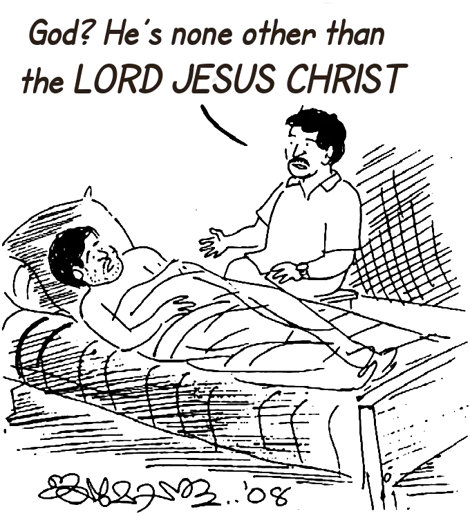

A Biography of Mohanan Nair
Safe In The Everlasting Arms
(A Biography of Mohanan Nair)
Publisher: Mohanan Nair
Karunya Bhavan, Kaithachal,
Mangattidom PO, Kannur 670643 Kerala
Cell: 9745568090
Author & Illustrator: Jaimohan Athirumkal
Revised Translation: Philip P Eapen
Copyright © 2025 Mohanan Nair
All rights reserved. No part of this book may be reproduced or used
in any manner without the prior written permission of the copyright owner,
except for the use of brief quotations in a book review.
First Print Edition: February 2008
First Digital Edition: January
2025
Website and eBook created by: Philip Eapen
At the age of 23, Mohanan Nair was involved in an accident that left him paralysed from the waist down. He came to understand the truth of the old saying, “As good as dead while I’m still alive.” His youth came to an abrupt end. Although he’d been raised as an orthodox Hindu, he lost all hope. The sudden loss of his robust health and vitality shattered his spirit, leaving him feeling like a living corpse.
During this period of physical and mental collapse, a man visited him, spoke to him about Jesus, and prayed for him. This encounter prompted him to think differently. As a result of this man’s repeated visits, prayers, and his own reading of the Bible, Mohanan Nair accepted Jesus Christ as his Saviour. This decision transformed his life. He found meaning in existence and learned to make new, purposeful choices.
Initially, his wife and son opposed this significant change. However, over time, not only did they come to accept it, but they too decided to follow Jesus Christ as their Lord and Saviour. Following this, Mohanan made another remarkable decision. He began visiting others who were paralysed, with the goal of offering them hope and encouragement and sharing the message of Jesus with them. He seeks out those who have been abandoned by their families due to their paralysis, bringing them into his home and caring for them.
Despite his paralysis, Mohanan gained renewed strength through his faith in Jesus Christ. Empowered by this faith, he dedicates himself to finding and supporting paralysed individuals, sharing the gospel with them, and helping them grow as disciples of Christ. His work is truly commendable. His life is now rich with purpose as he travels across Kerala, from north to south, preaching about the Lord who gave him a new lease on life.
Once you begin reading this book, you’ll find it hard to put down. The events and experiences Mohanan recounts are deeply moving and touch the heart. It is our hope that those who don’t yet know Jesus Christ as Lord and Saviour will come to know Him through these pages. May their lives be transformed, and may they also live as witnesses of the Lord.
Mohanan Nair wrote this book in simple, accessible language, and it has been beautifully published by Ebenezer Printers. May God bless their efforts. We trust that this book will change many lives and extend the reach of the gospel to many more. Ebenezer Printers have done a commendable job in producing this edition.
May God bless their work. May God equip the readers to stand firm for the Lord on the battlefield of this world. With this prayer, I humbly dedicate this book to the Lord Jesus.
In Christ,
| Chennai 25-01-’08 |
Evangelist C. I. George Emmanuel Publications |
The eternal God is your refuge, and underneath are the everlasting arms” (Deuteronomy 33:27). These words were spoken of Jeshurun, the chosen of God. The one who experiences the incomparable care of the eternal God is truly blessed. Jesus Christ bore the sins of the world on the cross, died, and rose again on the third day. Those who have received forgiveness and the salvation of their souls through Him remain under God’s unchanging protection and care.
Mohanan Nair, the author of this book, lived according to his own ways during the years of his ignorance. However, at the appointed time – God’s time – he came to know Jesus. At a point of utter despair, broken in both body and spirit, he was touched by the love that led Jesus to lay down His life to reconcile sinners to God. When Mohanan received Jesus Christ as his Saviour and Lord, he found new hope.
Jesus gave a new purpose to this man, who had been shattered by paralysis following a severe spinal injury. He became a devoted disciple of the One who declared, “I am the way, the truth, and the life.” Of Jesus, the Scripture says, “Neither is there salvation in any other, for there is no other name under heaven given among men by which we must be saved.”
As Mohanan lived in hope, his circumstances gradually improved. The man who once struggled to provide his family with even one meal a day now welcomes many visitors to his home daily. Though physically disabled, his mind remains vibrant, and he recognises that every event in his life has ultimately worked for his good.
I first met Mohanan Nair in September 2005 through the kind introduction of T. F. James, the managing director of Ebenezer Printers, Thrissur. This meeting was followed by several visits to his home in Kaithachal, near Koothuparamba in Kannur. I had never encountered anyone like him before. Listening to the bitter trials and hardships he and his family endured was deeply moving. Yet, I am filled with gratitude for the salvation of Jesus Christ that reaches people from all walks of life.
How many lives have been touched by the truth through this man! And how remarkable are the selfless services of his wife, Thankamani! As the Queen of Sheba said to Solomon, “I hadn’t heard even half the story! I had see it for myself to get the full picture.” Their lives must be witnessed to be fully appreciated. I encourage readers to call, write, or, if possible, visit them to understand the extraordinary story of this family.
I extend my heartfelt gratitude to Brother James, who inspired the writing of this book, and to C. I. George, Evangelist, Emmanuel Publications, who undertook its publication.
In Christ,
| Punalur 01-02-2008 |
Jaimohan Athirumkal Phone | E-mail |
Come and hear, all you who fear God; let me tell you what He has done for me” (Psalm 66:16). I was born into a Hindu family and grew up in deep poverty. From a young age, my life was marked by pain and hardship. Then, in the prime of my youth, an accident changed everything. I was left paralysed below the waist, confined to a bed and wheelchair.
Through this book, I want to share the incredible paradox of my life with you. On one side, there was unimaginable pain and rejection. But on the other, I found something extraordinary: the Creator of the universe. When I came to know Him personally, I discovered a peace, joy, and hope I’d never known before—and forgiveness for all my sins.
In 1993, I wrote a little booklet called Enduring Peace in the Furnace of Pain, where I shared about the first four years of my life as a paraplegic, starting when I was just 24. It seemed to strike a chord with many people, and its impact led to an expanded edition in 1997. That edition sold out quickly, too.
After that, a few of my brothers in Christ encouraged me to write more about my journey. With the kind help of my friend Jayamohan Athirunkal, I wrote Safe In the Everlasting Arms, which was published in 2008. That book also sold out within a year, and the stories I shared touched many lives. People from all over the world called me to say how much it had blessed them. Some said it brought them to the foot of the Cross, leading them to repentance and a deeper connection with Jesus.
Encouraged by this response, I expanded the book and released a second edition.
As you read these pages, I hope they touch your heart. You might find yourself crying, laughing, reflecting, or even hearing God’s voice. Whatever happens, my prayer is that you’ll let what you read move you to reconsider your life and take a step closer to the Lord Jesus. Nothing would bring me more joy than knowing this book helps you seek Him.
I’m so grateful to Ebenezer Printers for their enthusiastic support in bringing this book to life. Above all, I dedicate this book to the Lord Jesus Christ. Like the psalmist, I can say, “Before I was afflicted, I went astray, but now you have turned my suffering into good.” In my darkest moments, He delivered me—not just from physical hardship, but from death and hell itself. His mighty hands have carried me through all these years.
Jesus is the living hope of humanity, the true God, and eternal life. May God bless you richly as you read this book.
| 24-07-2009 | K. Mohan Nair |
Over 37 years ago, my life took an unexpected turn. At the age of 24, an accident left me paralysed from the waist down. It was a shattering experience, but it also marked the beginning of a journey filled with lessons I never imagined. From 1986 to 1992, I lived through six challenging years—years of intense suffering but also moments of indescribable joy, hope, and peace, all made possible by the presence of God in the midst of it all.
Encouraged by some brothers in Christ, I shared these experiences in a small book called The Furnace of Pain. The first print run of 1,000 copies brought comfort to many. Later, brothers from the Vishtanugami Sangh in Kannur reprinted it under the title Enduring Peace in the Furnace of Pain, and those 1,000 copies were quickly taken up as well.
Since then, I’ve been blessed to share more of my journey in the book Safe In the Everlasting Arms, published by Ebenezer Printers, Thrissur. This book reflects on how God’s work in our lives has surpassed anything I could have hoped for, dreamed about, prayed for, or even imagined back when I wrote the earlier booklets.
One of the most amazing outcomes of this journey has been Karunya Bhavan (The House Of Compassion), which became a reality 20 years ago. Despite our trials, our family has grown and thrived in ways that have been a testimony to many. What seemed like an utterly broken and useless life has, by God’s grace, become a blessing to thousands.
Safe In the Everlasting Arms has been reprinted four times now, with 14,000 copies distributed to readers from all walks of life. The book has helped countless people find peace, joy, and hope through a relationship with the living God. Many have told me how it’s helped them discover the true meaning of life.
To reach even more people, I agreed to have the book translated into English. A few brothers in Chennai are generously financing the publication of the print version, which has been lightly edited to make it clearer and more concise. My hope is that this English edition will lead many readers to know the living God and experience eternal life through Him.
May this book be a blessing to you, and may you find the peace and purpose you’ve been searching for in the arms of the Almighty.
8 August, 2023 |
K. Mohanan Nair |
1
The axe bit deep into the towering tree, the rhythmic thwack echoing through the countryside as Mohanan Nair swung it with practised precision. His muscular arms made light work of the task, his love for labour driving him to push through fatigue, often well into the night. Today, however, he’d completed most of his work by midday, with plenty of time to tackle another task he’d in mind.
But God had other plans.
Without warning, the colossal tree groaned and toppled—not in the direction Mohanan had anticipated. A massive branch splintered away and came crashing down, striking him with the force of a hammer. He was flung through the air and hit the ground with a sickening thud. A surge of excruciating pain ripped through him, but it lasted only a fleeting moment before an eerie numbness set in. His legs were lifeless.
Alarmed villagers rushed to his aid and carried him to the modest local hospital in Iritty. By the time they arrived, Mohanan could no longer feel anything below his waist. The staff quickly arranged his transfer to the prestigious Calicut Government Medical College Hospital, known as the region’s foremost medical institution. There, amidst the bustling corridors and impersonal efficiency, Mohanan lay for three gruelling weeks. His days were marked by brief, perfunctory visits from doctors but no meaningful answers or hope.
After twenty-two agonising days, Mohanan begged his elder brother to seek answers directly from the doctor at his residence—a common practice in those days, often yielding better results than hospital consultations. When his brother returned, his sombre silence spoke volumes. Mohanan’s heart sank. His relentless questioning finally broke through his brother’s hesitation. The verdict was devastating: Mohanan was paralysed for life. His spinal cord had been irreparably damaged, and no medical intervention could reverse it.
Mohanan refused to accept this grim diagnosis. He convinced himself it was a convenient excuse for the hospital’s limitations. Determined to seek better care, he turned to their trusted family doctor, Dr Balagopal, who suggested a transfer to the renowned Elite Mission Hospital in Thrissur. Run by Professor Surendran, a highly respected surgeon trained in the United States, the hospital held the promise of expertise and cutting-edge care.
Clinging to hope, Mohanan spent his life savings of Rupees 1,250 to hire an ambulance for the journey. At Elite Mission Hospital, surgeons stabilised his damaged spine, removing fragments of shattered vertebrae. For three long months, he remained under their care, but the bills mounted to a staggering Rupees 20,000—a fortune in those days. The financial burden was eased by contributions from his wife’s family and generous neighbours, but the weight of despair grew heavier with each passing day.
Despite the surgical intervention, the outcome remained bleak. On the day of his discharge, Professor Surendran entered Mohanan’s room, carrying a backrest to help him sit up for the first time since the accident. What should’ve been a moment of triumph felt hollow. The doctor hesitated before breaking the news: “Mohanan, I’m afraid this is the best we can do. Your spinal cord was severed in the accident. Medical science offers no cure.”
The words hit Mohanan like a thunderclap. He screamed in disbelief, pleading for an alternative, a miracle—anything.

The doctor’s voice softened, his own eyes brimming with unshed tears. “I’m sorry. There is nothing more we can do. God bless you.” With that, he turned and left, leaving Mohanan sobbing uncontrollably.
The nurses, over 40 of them, came by to bid him farewell, their warmth and encouragement unable to pierce the fog of despair that enveloped him. In a final gesture of goodwill, the hospital waived his last month’s bills, but Mohanan remained inconsolable.
Back home, his family desperately searched for other avenues. Could the Christian Medical College in Vellore or Kasturba Medical College in Manipal offer a solution? Every enquiry yielded the same answer: no.
Thus began the darkest chapter of Mohanan’s life. Trapped in a broken body, his spirit writhed under the weight of hopelessness. Just eight months into his marriage, with his wife expecting their first child, he was consumed by unanswerable questions. How could he, once the pillar of his family, now be a burden? How could he endure the humiliation of relying on others to feed, clothe, and clean him for the rest of his life?
Sleepless nights became the norm as his mind spiralled into despair. The future seemed like an unrelenting void. He prayed fervently to the gods he had always believed in, pleading for a glimmer of hope. None came. Bitterness and anger consumed him.
The idea of ending his life became a constant companion. The thought, once abhorrent, began to feel strangely comforting—a way to escape the unbearable darkness. Each day, he wrestled with this temptation, his mind teetering on the edge. To live felt like torture; to die, an alluring release.
Mohanan was trapped in an abyss, with no light to guide him out. It seemed as though even hope had abandoned him.
2
Mohanan’s father, Kunhikannan, was born in the small hamlet of Chittariparambu near Koothuparamba in Kannur district, situated in the verdant south Indian state of Kerala. Despite being born with only one arm, Kunhikannan was determined to lead a life of dignity. He found work as a headload labourer in the village of Koottupuzha, nestled amidst the lush rainforests of the Western Ghats. His earnings, though modest, were sufficient to support himself and eventually fund his marriage to Lakshmiamma, a woman from an equally old but impoverished Nair family.
The couple went on to have five children, of whom Mohanan was the third. Born in Chittariparambu, Mohanan spent his formative years in Koottupuzha, where the family endured grinding poverty. The constant struggle to make ends meet meant that education was a luxury they could not afford. Mohanan’s older siblings left school before they turned thirteen to help supplement the family income, and he, too, dropped out after completing the sixth grade.
Their village was surrounded by sprawling fields and plantations owned by wealthy families, many of whom were Catholic settlers from southern Kerala. These settlers had carved out new farms from the dense, virgin forest. Mohanan recalls that, despite their Christian identity, they were no different from the other villagers when it came to vices. Addictions, selfishness, quarrels, and even violence were commonplace. The settlers often clashed with Mohanan’s family, and arguments frequently escalated into physical altercations. Their behaviour left a deep impression on young Mohanan, who grew to detest the perceived superiority these settlers derived from their religion, despite their glaring moral failings.
Mohanan’s first job was as a cashew picker on a plantation. He worked tirelessly from 7 a.m. to 7 p.m., earning a meagre 1.5 rupees a day. In addition to plucking cashews, he was often tasked with a range of other duties to fill his workday.
By the age of twelve, Mohanan had taken on gruelling physical labour. He carried heavy loads, felled trees, ploughed fields, and built bunds to protect farmland. As he grew older, his repertoire expanded to include construction work, well-digging, and other agricultural tasks. His father, now severely crippled by arthritis, was no longer able to contribute much to the family’s income. The burden of providing for the household fell squarely on the shoulders of the older children. Mohanan, driven by a fierce sense of responsibility, often took on night shifts after completing a full day’s work, determined to ensure that his younger siblings at least had one meal a day.
One incident from Mohanan’s childhood remained etched in his memory. He was thirteen years old and returning home after a week of back-breaking labour, clutching his wages with a sense of pride. As he neared the house, the sound of his younger siblings’ wails greeted him. His mother, tear-streaked and weary, recounted what had transpired. Desperate to provide for his family, Kunhikannan had resorted to brewing illicit liquor, a desperate measure given his inability to perform physical labour. However, the authorities had caught wind of his activities, and he had been arrested by officials from the Excise Department.
For Mohanan, this was the final straw. In a fit of rage and determination, he seized a chopper and smashed the brewing equipment and the fireplace where it had been set up. Standing amid the wreckage, he declared that such disgrace would never again taint their home. His actions marked a turning point for the family; no one ever attempted to brew liquor again.
The experience left a profound impact on Mohanan. He developed a lifelong aversion to alcohol, seeing it as a source of shame and misery. Not only did he remain abstinent throughout his life, but he also became a vocal advocate against drinking, often admonishing his friends about its destructive consequences.
3
Kunhikannan, Mohanan’s father, was raised with an unwavering reverence for the gods. He dutifully performed elaborate puja and offerings, making solemn vows whenever misfortune struck. True to his word, he always fulfilled these vows, no matter the cost. However, this devoutness placed a severe strain on the family’s already meagre finances. Often, the children went hungry, their weakened bodies falling prey to illness. Kunhikannan saw these ailments as manifestations of the gods’ displeasure, though the reasons for their anger often remained a mystery to him.
Encouraged by the family astrologer, Kunhikannan constructed shrine after shrine in their yard, each one dedicated to a deity he hoped to appease. Every idol demanded its own specific offerings: Muthappan required a combination of boiled legumes, coconut, dried fish, and toddy; another deity insisted on pounded rice flakes and flowers; yet another demanded the blood of sacrificial animals.
After the rituals were completed and the astrologer had left, strict rules governed the shrines. No one was allowed to approach them, for the gods’ presence was considered sacred and fearsome. The family, however, was permitted to partake of a small portion of the offerings.
One evening, Mohanan sat outside, gazing at the flickering flames of the oil lamps glowing faintly in front of each shrine. His mind churned with questions. “We honour the gods with all these offerings and rituals,” he thought. “Father says they are pleased, that they relish what we give them. Yet they remain silent, invisible. What is God truly like? Does God see or hear our suffering?”
As his thoughts wandered, an unusual sound interrupted his musings. The dry leaves in the courtyard began to rustle, as though someone—or something—was moving towards the shrines. His curiosity piqued, Mohanan hesitated. His father had often warned him that gazing upon a deity would bring death, but his yearning to witness the divine overcame his fear. Shrinking into the shadows of the house, he watched intently.
The rustling grew louder. At last, Mohanan saw the source of the noise. To his astonishment, it was the neighbours’ dog. The animal had stealthily crept into the yard and was devouring the offerings meant for the gods. It greedily lapped up the blood of the sacrificial rooster and consumed whatever else it could find. Mohanan was stunned. The sight deeply disturbed him, shaking the foundation of his faith in these rituals. For the first time, doubts crept into his mind.
A second incident sealed his growing scepticism. Every evening, Kunhikannan dutifully filled the oil lamps in front of the shrines and lit them. Yet, inexplicably, the flames would extinguish within minutes. Convinced this was an ill omen, Kunhikannan would erupt in anger, blaming his family for failing to uphold the gods’ standards.
Determined to uncover the truth, Mohanan decided to investigate. Concealing himself in the shadows one night, he observed the courtyard closely. To his surprise, a plump cat crept silently toward the lamps. With delicate precision, the cat patted out each flame with its paw and then lapped up the clarified butter used as fuel.
These incidents profoundly altered Mohanan’s perspective. He came to see the elaborate rituals, sacrifices, and astrologers’ pronouncements as nothing more than a web of superstition. To him, they were tools crafted by priests, astrologers, and magicians to exploit the ignorance of ordinary people, draining them of their hard-earned money under the guise of appeasing unseen powers.
Yet, despite his disillusionment with these practices, Mohanan’s faith in the existence of a higher power remained unshaken. Deep within, he longed to discover who or what the true God might be. He channelled this spiritual yearning into devotion to Ayyappan, the Hindu deity revered at the renowned Sabarimala temple. This new phase of his journey also spurred an interest in exploring Indian philosophy and thought, as he sought answers to the profound questions that troubled his heart.
4
Young people often immerse themselves in fleeting pleasures, chasing momentary joys and superficial amusements. Mohanan was no different. At the age of twelve, he experienced the allure of cinema when a neighbour invited him to a theatre. That outing marked the beginning of an infatuation with movies and film stars that consumed him for a time and steered him toward other unwholesome habits.
Between the ages of twelve and twenty-three, Mohanan’s life seemed to slip by in a haze of indulgence. His motto could well have been, “Eat, drink, and be merry.” Most of his free time was spent in the company of friends, engaging in idle chatter. They smoked, debated politics, dissected the latest movies, and revelled in their carefree existence.
Raised in a strictly vegetarian household, Mohanan eventually broke this tradition when he tried meat for the first time—and discovered that he enjoyed it. When his family learned of this transgression, they barred him from participating in puja. To Mohanan, this was hardly a punishment; by then, he’d already lost interest in religious rituals and welcomed the reprieve.
Over time, however, he began to recognise the grip his habits had on him. Slowly but decisively, he distanced himself from his circle of friends. This transformation was not sudden but was helped along by a growing sense of responsibility towards his younger siblings.
As he matured, Mohanan’s priorities shifted. The once-carefree boy began to devote most of his waking hours to hard work, determined to support his family and provide for his siblings. This newfound sense of duty became a guiding force in his life, steering him away from the distractions and indulgences of his youth.
5
At twenty-two, Mohanan was working as an overseer on a plantation, twelve kilometres away from his home. It was here that he first met Thankamani, a labourer on the same estate. Like him, she came from a modest Nair family and was the fourth of five children living in a nearby village. From the moment they met, Mohanan felt an undeniable connection—he knew he had found his soulmate.
The match was eventually approved by both families, and they were married a year later, shortly after Mohanan turned twenty-three.
This marked the brightest phase of his life. For the first time, he experienced the profound sweetness of a woman’s love. Their days together were filled with joy, and their marital bliss appeared to accelerate the passage of time. Eight months into their marriage, Thankamani was three months pregnant, and the couple eagerly anticipated the arrival of their first child. Mohanan worked tirelessly, balancing daily wage labour with farming to ensure a secure future for his growing family.
But on 8 March 1986, everything changed. Mohanan was working for a man named George Puthuparambil in Vallithode, cutting down trees. Determined to finish by noon, he hurried through his tasks, hoping to dedicate the rest of the day to his own work. This relentless drive was his way of making ends meet.
In an instant, tragedy struck, shattering all his dreams. The accident crushed his hopes in one cruel stroke, plunging him into a world of pain and despair. The pages that follow recount the unimaginable suffering he endured—far more than anyone should’ve to bear.
Yet, this is not where Mohanan’s story ends. The latter part of his journey takes on a different tone, as the darkest moment of his life became the turning point that brought light not just to him, but to many others. Through this tragedy, God worked a profound transformation. Sorrow was turned into joy, despair into hope, and Mohanan’s helplessness was transmuted into a strength that could uplift others.
6
When Mohanan returned home from Elite Mission Hospital, his recovery continued under the care of his family. For three more months, they did everything they could to help him, including summoning priests and astrologers. Yet, despite their charms and elaborate puja there was no relief. The old astrologer blamed the accident on the Evil Eye, supposedly cast by a jealous neighbour. In his desperation, Mohanan found himself clinging once more to the superstitions he’d abandoned, grasping for even the faintest glimmer of hope to lift his despair. But nothing changed. His nights were plagued by relentless nightmares that left him waking in terror, and sleep became as elusive as solace.
Months of constant anxiety and anguish left Mohanan in a state of utter emotional collapse. He felt like a shell of a man, worse than useless—a crushing burden on his impoverished family. Reduced to helplessness, he was entirely dependent on others for even the most basic and private aspects of his care. His condition worsened when he developed painful bedsores, a stark physical reminder of his suffering. Each day brought fresh waves of tears and hopeless prayers, as he searched in vain for comfort. Night after night, his pillow was soaked with his weeping.
His parents, overwhelmed by the astrologer’s grim prediction that Mohanan would not survive more than three months, cared for him as best they could. Yet, as weeks turned into months, Mohanan’s strength began to return, defying those fatalistic forecasts. With time, he managed to sit up, using a backrest for support. It became clear that he was not going to succumb to his injuries as expected.
This realisation, however, brought a new and painful reality. Struggling under the weight of poverty, his family began to see him not as a loved one in need, but as a financial and emotional burden. Their patience wore thin, and resentment grew. They began to taunt him for his helplessness, throwing his past mistakes in his face while conveniently ignoring the years of toil he’d endured to support them since he was twelve.
At first, Mohanan tried to shrug off their barbs, but the constant mockery and indifference became too much to bear. Tensions escalated into bitter quarrels, leaving him isolated in his despair. The faith that had once anchored him began to erode under the weight of these dark days, and he felt himself slipping into a chasm of hopelessness, unsure if he’d ever find a way out.
7
During his early days of recovery, Mohanan received many visitors from neighbouring homes and villages. They came to share his sorrow and offer comfort, often bringing small gifts or modest sums of money. Women, in particular, were moved to tears upon seeing the once-vibrant young man reduced to a shadow of his former self. Yet, despite their sympathy, no one could offer him true solace.
One day, a man named V. C. Sebastian visited. Known as Babychayan—achayan being a respectful term for elder men—he was the husband of Mohanan’s former neighbour.
As Mohanan poured out his heart, describing his hopeless condition, Babychayan listened intently, without interrupting or reacting emotionally. When Mohanan finished, he concluded bitterly, “So, Babychayan, there is no God. If there were, why would I be in this state today?”
Without hesitation, Babychayan replied gently, “My son, there is indeed a God behind this universe.”
Mockingly, Mohanan asked, “Who is this God, then?”
Babychayan responded without pause, “He is the Lord Jesus Christ.”
The answer startled and angered Mohanan. He had always harboured a deep resentment towards the Christian settlers in his area, who, despite their outward religiosity, showed little love for God or their neighbours. Into the storm of Mohanan’s bitter thoughts came Babychayan’s calm voice:
“The Lord Jesus Christ is the only one who has come into the world to save sinners. He is the Saviour of all. There is no forgiveness of sins apart from Him. Anyone who believes in Jesus Christ with all their heart receives forgiveness and eternal life. He is the source of true joy and peace.”
Mohanan tried to ignore him, his scepticism firmly rooted. Sensing this resistance, Babychayan rose to leave but asked, “May I pray for you?”
Mohanan replied curtly, “As you wish. But I’m not interested in prayer.”
Despite being raised in a faith with countless gods, Mohanan’s prayers had never brought him peace or hope. He had all but given up on life.
Babychayan knelt beside him and prayed fervently, tears streaming down his face. “Dear Father, open this young man’s eyes. I know you love him. Please deliver him. Save him from sin, from sickness, from the curse. Reveal yourself to him, Lord, so that he may find salvation.”
Mohanan listened, astonished. He thought, Why would this man, who isn’t my relative or even of my religion, weep and pray for me?
Before leaving, Babychayan shook Mohanan’s hand and lingered a moment longer. “I wasn’t always like this,” he said quietly. “Six years ago, though I was raised in a Christian family, I didn’t know Christ.”
The confession shocked Mohanan. He thought, How could a Christian not know the God he worships?
Babychayan continued, “I smoked over a hundred cigarettes a day and drank more than a litre of arrack daily. I did whatever I pleased, but none of it brought me peace. I was active in church and even served on the church committee, yet I didn’t know Christ. My life was a mess. Constant headaches plagued me, and I couldn’t even manage my own five-acre farm.
“I sought medical help, visiting renowned hospitals in Manipal and Vellore, and underwent two surgeries, but nothing changed. Finally, at a family prayer meeting organised by the Pota Retreat Centre, I prayed in desperation: ‘Jesus, unless you heal me, I’ll die here.’ That night, I experienced a vision—a heavenly light—and my headaches vanished.
“I’d like to give you a book,” Babychayan added. “Will you read it? If Jesus Christ doesn’t give you peace, eternal life, and hope, I’ll never preach this message again. I’m not an evangelist by profession. I only visit the sick and suffering during my free time to share this good news.”
At the door, he reiterated, “I’ll bring you a book. Please read it!” He wisely refrained from mentioning that the book was a Bible, knowing Mohanan’s prejudice against Christianity.
About a week later, Babychayan’s wife, Ani, who had been Mohanan’s neighbour, came to visit, carrying the promised book. Handing it to him, she said warmly, “Here it is.”
Suspicious, Mohanan asked, “Are you sure I’ll be able to read this?” He was used to Hindu religious texts written in Sanskrit, which were difficult to comprehend.
Ani reassured him, “Of course, Mohanan. It’s in Malayalam—our mother tongue. Anyone can read and understand it.”
She opened the book to the New Testament and suggested, “You could start here. The Old Testament might be harder to follow at first.”
And so, for the first time in his life, Mohanan began to read the Bible.
8
Driven by curiosity, Mohanan swiftly read through the Gospels of Matthew, Mark, and Luke, eager to uncover the message within the “Christians’ book.” However, encountering the same story repeated across these first three Gospels, he grew impatient and skipped the Gospel of John altogether, diving directly into the Acts of the Apostles.
Over the next few months, he read significant portions of the Bible but eventually set it aside. He turned instead to novels that his brother brought home from the local library. These stories helped him pass the time and occasionally lulled him into short, restless naps. Yet, their distraction was fleeting. Bored and dissatisfied, Mohanan found himself returning to the Bible, hoping it might offer solace for his troubled mind.
This time, he began with the Gospel of John. When he reached the fourteenth chapter, one verse stopped him in his tracks: “I am the way, the truth, and the life; no one comes to the Father but by me” (John 14:6).
The words pierced his heart. He read them again and again, struck by their audacity and power. He realized that no historical figure, no matter how great, could claim such authority. This statement wasn’t merely philosophical or metaphorical; it was absolute. In that moment, his understanding shifted. His inner eyes were opened, and his thoughts grew startlingly clear.
If Jesus Christ truly is the Way to the Creator, Mohanan reasoned, then all paths cannot logically lead to the same God. He reflected on the divisions among religions and the conflicts they sparked. How could people who quarreled over their visible differences—religion, caste, race—claim to love an invisible, transcendent God? This realization spurred him to delve deeper into the New Testament, searching it with the fervor of a treasure hunter.
Eventually, Mohanan reached the final book of the Bible, the Revelation of John. Here, another verse gripped him: “Those whom I love, I rebuke and discipline. So be earnest and repent. Here I am! I stand at the door and knock. If anyone hears my voice and opens the door, I will come in and eat with that person, and they with me” (Revelation 3:19–20).
These words, spoken by Jesus nearly fifty years after His resurrection, were addressed to His beloved disciple John, who was in exile on the island of Patmos. To Mohanan, they felt intensely personal, as though Jesus Himself were speaking directly to him.
The meaning unfolded in his mind: God disciplines those He loves. His suffering wasn’t a curse but a sign of divine care—a form of fatherly correction. The next verse’s command to “be earnest and repent” became a call to action. He began to examine his life honestly, confronting the sinful thoughts, actions, and attitudes he’d previously ignored.
This self-reflection led to a profound realization: he’d lived without truly knowing, believing in, or obeying the one true God. The understanding that God’s discipline was rooted in love began to soften Mohanan’s weary, hardened heart, much like a life-giving rain shower revives dry, parched earth.
For the first time, he saw his suffering not as meaningless pain but as purposeful discipline, akin to the way loving parents raise their children through guidance and correction. He felt an awakening—a deep desire to respond to God’s call with humility and repentance, allowing his heart and mind to be transformed.
9
One afternoon, while Mohanan was reading the Bible, his father, Kunhikannan, entered the shack. At the sight of the book, anger flared in his eyes. Memories of his unpleasant encounters with so-called Christians –settlers who had taken over local lands and frequently clashed with him and his community – rose to the surface. The sight of his son embracing what he perceived as the oppressor’s religion was too much to bear. Without a word, Kunhikannan stormed out, his fury palpable.
By this point, six months had passed since Mohanan’s accident, and his parents had grown weary of the burden. They began to lash out with sharp, biting remarks about his life and choices. When Mohanan’s elder brother, who had been his main caregiver, tried to defend him, the situation escalated. The parents, frustrated and unyielding, turned their anger on the brother. A heated quarrel ensued, and he was ultimately forbidden from returning to the house.
This event hit Mohanan hardest. Losing his brother’s care and companionship left him feeling abandoned and desolate. The despair overwhelmed him, driving him to the edge. In a moment of hopelessness, he attempted to end his life, pounding on his chest with all the strength he could muster. But before any significant harm was done, he collapsed into unconsciousness—a stark reminder of his utter helplessness.
Mercifully, his brother, unwilling to abandon him entirely, took Mohanan into his own home. There, he arranged a makeshift open shed on the side of the hut to serve as Mohanan’s shelter. Though modest, it offered him a degree of stability and solace.
Around this time, news arrived that brightened Mohanan’s spirits, if only briefly. His wife, Thankamani, had given birth to their child at her ancestral home in Trivandrum, located at the southern tip of Kerala. The thought of becoming a father filled him with joy, and he eagerly wrote to her, asking her to name the child Jayaprakash.
Yet, this happiness was soon overshadowed by fresh waves of sorrow. The news of his child’s birth reminded him of all he could not do. He couldn’t see his child, let alone hold him. Worse, he felt utterly incapable of providing for his young family. These thoughts deepened his sense of inadequacy as a husband and father.
Even now, as Mohanan reflects on those long, bitter days, the sting of helplessness remains. The memory of his struggles, both physical and emotional, lingers—a painful testament to a time when his world seemed to crumble around him.
10
Mohanan’s elder brother exhibited an unwavering kindness and compassion that deeply moved him. When he brought Mohanan into his home, he treated him not as a burden but as a cherished member of the family, caring for him as if he were his fourth child. Despite his brother’s tenderness, Mohanan could not escape the shadow of his parents’ disapproval. Living just a short distance away, they continued to hurl accusations, harsh words, and palpable disdain in his direction.
“Though my brother showed me the greatest tenderness,” Mohanan later reflected, “one painful truth was impossible to ignore: my stay with him was a temporary solution, not a permanent one. I was only 24 years old. What if I lived another fifty years? I couldn’t burden him for a lifetime. I even voiced this fear to him once. He reassured me, promising that as long as he lived, we would share the same food, no matter how little it might be. But I knew in my heart that such reassurances couldn’t last forever. Even the most compassionate people have their limits. Over time, I stopped speaking of my fears to him, realizing they were mine to grapple with alone.”
Desperate for peace, Mohanan turned again to the Bible. He meditated on passages that had caught his attention, seeking solace and guidance. Yet, despite his efforts, his heart remained restless.
Though he read the Bible frequently, Mohanan still viewed it as “the Christians’ book,” a text filled with moral principles he admired but struggled to live by. He prayed often, reciting the Lord’s Prayer: “Our Father who art in heaven…” But true rest and peace continued to elude him.
During another visit from Babychayan, Mohanan decided to voice his inner turmoil. “How can I follow the sublime teachings of the Bible?” he asked. “It tells me not to do wrong, but I still do wrong. For instance, it equates anger to murder, and yet I constantly feel anger towards my family. It says it is wrong to lust after a woman, but I still have wrongful desires. Every religion teaches good principles, but even the teachers fail to follow them. That’s my problem—in fact, it’s the human problem. I want to do good, but I end up doing the evil I despise. Oh, what a wretched man I am!”
Then came the question that struck at the heart of his struggle: “Is this the experience of you Christians as well? Do you find yourselves unable to follow your own teachings?”
In response, Babychayan opened the Bible to Romans 3:10-18 and read aloud:
“As it is written, There is none righteous, no, not one: there is none that understandeth, there is none that seeketh after God. They are all gone out of the way, they are together become unprofitable; there is none that doeth good, no, not one.
“Their throat is an open sepulchre; with their tongues they have used deceit; the poison of asps is under their lips: whose mouth is full of cursing and bitterness: Their feet are swift to shed blood: destruction and misery are in their ways: and the way of peace have they not known:
“There is no fear of God before their eyes.”
Mohanan was struck by the stark clarity of these words. “To my amazement,” he later recalled, “these verses captured the human condition with brutal honesty. For the first time, I understood that people are sinners, no matter their religion or community.”
Then Babychayan turned to another passage, this time from 1 John 1:7-9:
“But if we walk in the light, as he (God) is in the light, we have fellowship one with another, and the blood of Jesus Christ his Son cleanseth us from all sin. If we say that we have no sin, we deceive ourselves, and the truth is not in us. If we confess our sins, he is faithful and just to forgive us our sins, and to cleanse us from all unrighteousness.”
These words pierced Mohanan’s heart. In them, he heard not only a diagnosis of his condition but also a lifeline of hope. He realized that he was a sinner, broken and flawed. But more importantly, he saw that God had provided a way of salvation—through Jesus Christ.
At that moment, the weight of his despair began to lift. Mohanan had encountered a truth that spoke directly to his weary soul: God saves sinners, and His love and forgiveness are extended to all who turn to Him in faith.
11
That October night in 1986, a profound conviction descended upon Mohanan amidst his deep physical and emotional anguish. It marked the turning point of his life. Through his readings of the Bible, he already understood that Jesus Christ had died, been buried, and risen again on the third day. Around midnight, he felt an unmistakable voice within him—God’s voice—declaring: “Call upon the name of the living God and be saved, or you will perish in eternal damnation.”
The command left no room for hesitation. Mohanan prayed, confessing for the first time in his life, “O God, I am a sinful man.” With a trembling heart, he asked for forgiveness in the name of the Lord Jesus Christ.
As he prayed, his entire life seemed to replay before him, like a vivid panorama of secret and open sins stretching back to his childhood. His stubbornness, pride, and self-righteousness dissolved under the weight of this revelation. His heart broke, and he wept as he’d never wept before. In that moment of vulnerability, he felt the Lord Jesus Christ comforting him, like a mother gently consoling her child.
Suddenly, Mohanan knew, with unshakable certainty, that Jesus Christ was the living God. A peace unlike anything he’d ever experienced flooded his soul, washing away the fear and despair that had plagued him for eight long, sleepless months. That night, for the first time since his accident, he slept deeply and restfully. He awoke the next morning filled with a joy and hope he hadn’t thought possible.
Reflecting on that experience, Mohanan later said: “Peace is a rare treasure in this turbulent life. The Lord Jesus said, ‘Peace I leave with you; my peace I give to you. Not as the world gives do I give to you. Let not your hearts be troubled, neither let them be afraid.’ (John 14:27). Many believe peace is tied to smooth circumstances—marriage, wealth, status, or possessions. But these things are fleeting. The moment they are lost or disrupted, so too is our peace. Can such transient feelings truly be called peace?
“True peace is not of this world. The day humanity broke its relationship with God, peace was lost. Today, we see this unrest in individuals, families, and nations. People turn to alcohol, drugs, and fleeting pleasures in a desperate attempt to find peace, but these only deepen their troubles. The Lord Jesus suffered and bore our punishment to grant us true peace. ‘The punishment for our peace was upon Him, and by His wounds, we are healed,’ says Isaiah 53:5.
“When I became a paraplegic, abandoned by my own family, I lost all earthly hope. But in my darkest hour, Jesus entered my life. The peace, rest, and hope He brought to my heart is indescribable. Anyone who believes in Him can experience this same eternal peace. The Word of God declares, ‘We who have believed enter that rest.’ (Hebrews 4:3).”
Mohanan emphasized: “Sin is the root cause of our unhappiness and lack of peace. Atonement for sin brings true joy. Jesus Christ atoned for the sins of the world through His death. He is the fountain of perfect love, loving us even in our weakness and sinfulness. He is a faithful Savior, waiting for you to open your heart to Him.”
That life-changing night, Mohanan sang and prayed to Jesus from the depths of his heart. With a renewed passion, he began reading the Bible again, starting with the Gospel of Matthew. Though he initially found its genealogies tedious, he persisted, and over time, he uncovered profound truths hidden in the lists of names.
From then on, Mohanan read one book of the Bible every day. No longer was it merely “the Christians’ book”—it had become his guide to the living God. “The Bible is not just another religious text,” he explained. “It reveals Jesus Christ as the only way of salvation for all people. While other books are protected by their followers, the Bible is protected by God Himself. No other book has faced such relentless opposition and criticism, yet it remains the most widely read and distributed book in history.”
He urged others: “Put your heart into reading this Book. It will reveal who you are, who Jesus is, the way of salvation, and the destiny of this world. The Bible’s message is timeless and life-changing.”
Recalling the story of Nicodemus, Mohanan highlighted Jesus’ words:
“Unless you are born again, you cannot see the kingdom of God. Unless one is born of water and the Spirit, he cannot enter the kingdom of God.” (John 3:3-5).
He concluded: “Every human being must be born again by the Word of God to enter God’s kingdom. This spiritual rebirth is the beginning of true peace and eternal life.”
12
That first prayer of faith in the name of the Lord Jesus marked a radical transformation in Mohanan’s life. The change was unmistakable. Gone were the restless nights filled with fleeting moments of uneasy sleep; in their place was a profound sense of peace, joy, and hope that seemed unshakable. He was no longer plagued by despair but instead found himself naturally drawn to prayer and songs of praise to his Master.
The Bible, which had once been a challenging and enigmatic text, now unfolded its treasures before him. Many passages that had previously seemed obscure became clear, and he began to savor the indescribable sweetness of God’s forgiveness.
This newfound grace in Mohanan’s life ignited an irrepressible desire to share the good news of salvation with others. The words of Jesus echoed in his heart: “A lamp is to be put on a lampstand” and, “A city that is set on a hill cannot be hidden.” That very morning, an opportunity presented itself when a washerman from his village came to visit him.
As they talked, Mohanan asked, “Are you familiar with the Bible?”
The man replied, “I have read a little of the New Testament.”
Mohanan eagerly shared his testimony: “Jesus has become my Lord and Savior. He has forgiven all my past sins, and now I feel an overwhelming sense of peace and joy. There’s hope in my life again. If you turn to Him, He can help you overcome smoking, drinking, or anything else that troubles you.”
This simple, heartfelt declaration became Mohanan’s first gospel message.
Reflecting on this, Mohanan later drew inspiration from Jesus’ conversation with the Samaritan woman at the well. In that moment, the Lord had said to her:
“If you knew the gift of God, and who it is that says to you, ‘Give me a drink,’ you would have asked Him, and He would have given you living water.” (John 4:10).
Mohanan saw parallels between that woman’s longing and the universal human condition. People often spend their lives chasing transient pleasures—food, drink, and other indulgences—hoping to satisfy an unquenchable inner thirst. Yet these cravings only lead to emptiness, perpetuating cycles of dissatisfaction and despair.
Jesus had also said:
“Whoever drinks of this water will thirst again. But whoever drinks of the water I shall give him will never thirst.” (John 4:13-14).
For Mohanan, this promise had come alive. His restless soul had been calmed, and his deepest thirst had been satisfied by God’s living water. He realized that this spiritual nourishment was available to all, freely offered by the Creator of life. Only God could deliver humanity from the judgment it deserved, and He promised that anyone who sought Him would find rivers of living water flowing from their innermost being.
Mohanan often pointed to the timeless invitation found in the book of Isaiah:
“Ho! Everyone who thirsts, come to the waters; and you who have no money, come, buy and eat. Yes, come, buy wine and milk without money and without price. Why do you spend money for what is not bread, and your wages for what does not satisfy? Listen diligently to Me, and eat what is good, and let your soul delight itself in abundance. Incline your ear and come to Me. Hear, and your soul shall live.” (Isaiah 55:1-3).
This gracious call echoes again in the closing pages of the Bible:
“Let him who thirsts come. And whoever desires, let him take the water of life freely.” (Revelation 22:17).
Like the air we all breathe, this life-giving offer is extended to everyone—regardless of caste, creed, religion, color, or gender. The Saviour of mankind invites all, saying:
“The time is fulfilled, and the kingdom of God is at hand. Repent and believe the gospel.” (Mark 1:15).
And again:
“Come to Me, all you who labor and are heavy laden, and I will give you rest.” (Matthew 11:28).
Mohanan’s transformed life became a testimony to the truth of these words. The living water he’d received from Jesus Christ now flowed outward, touching others with the hope, peace, and joy that only God can provide.
13
For a few months, Mohanan found a measure of peace living in his brother’s house. His elder brother continued to treat him with kindness, but the family dynamic began to shift. His sister-in-law grew increasingly resentful of his new faith and the added strain his presence placed on their time and finances. Her frustrations were soon echoed by other family members.
Tensions peaked when Mohanan’s father came to visit one day, bringing ceremonial water for a puja in honor of a Hindu goddess. Spotting Mohanan’s Bible, his father barked at him angrily, “Throw away this book! How dare you keep it here?” As he began sprinkling the purification water around the house, Mohanan gently attempted to speak to him about Jesus Christ. But his words were met with a furious outburst: “You don’t deserve to leave your bed ever!”
Despite this hostile reaction, Mohanan remained unshaken. The rejection of his parents, friends, and even some family members only deepened his reliance on the God he’d come to know through the gospel.
For many people, life is an endless pursuit of desires until death, which they believe to be the end. Others adopt a fatalistic approach, resigning themselves to whatever fate might await them. Mohanan, however, could not rest in such uncertainty. His heart longed to understand what truly lay beyond the grave.
One night, he earnestly prayed to God for insight into life after death. That night, he experienced a vivid vision that left a profound impact on him.
In the vision, Mohanan felt himself being strangled. The pain was sharp and intense, and he struggled desperately for breath. Suddenly, his spirit left his body, and he became acutely aware of being outside himself. He could see his lifeless body from afar, yet his consciousness and identity remained intact.
At first, there was a brief period of struggle and disorientation, but it was soon replaced by an overwhelming sense of peace and serenity. This tranquility seemed otherworldly, unlike anything he’d ever experienced before. Just as he was beginning to embrace this newfound calm, he awoke with a start.
Reflecting on the vision, Mohanan felt he’d gained insight into the nature of death. He understood why the Bible often describes death as a sleep—a period of rest for those who belong to God. The vision also strengthened his conviction about the reality of heaven and hell. Death, he realized, was not the end but a doorway into eternity.
This experience only deepened his faith. In the face of his family’s opposition, he rejoiced in his spirit, confident that the promises of God were true.
Mohanan often shared his newfound understanding with others, saying: “Some people deny the reality of God, heaven, and hell. Friends, don’t deceive yourselves. True life lies beyond death. Our 70 or 80 years on this earth are merely a training period. The Bible reminds us: ‘What is seen is temporary, but what is unseen is eternal.’”
He often quoted the Apostle Paul’s words from 1 Corinthians to explain the mystery of life after death:
What a foolish question! When you put a seed into the ground, it doesn’t grow into a plant unless it dies first. And what you put in the ground is not the plant that will grow, but only a bare seed of wheat or whatever you are planting. Then God gives it the new body he wants it to have. A different plant grows from each kind of seed.
Similarly there are different kinds of flesh—one kind for humans, another for animals, another for birds, and another for fish. There are also bodies in the heavens and bodies on the earth. The glory of the heavenly bodies is different from the glory of the earthly bodies. The sun has one kind of glory, while the moon and stars each have another kind. And even the stars differ from each other in their glory. It is the same way with the resurrection of the dead.
Our earthly bodies are planted in the ground when we die, but they will be raised to live forever. Our bodies are buried in brokenness, but they will be raised in glory. They are buried in weakness, but they will be raised in strength. They are buried as natural human bodies, but they will be raised as spiritual bodies. For just as there are natural bodies, there are also spiritual bodies. (1 Corinthians 15:36-44 NLT).
This passage reminded Mohanan of the infinite wisdom of God and the profound hope that awaits those who trust in Him. The temporary trials of this life, he’d say, pale in comparison to the eternal glory promised to God’s children.
14
Mohanan recalls an incident that occurred approximately six months into his stay at his brother’s house. At the time, he was undergoing treatment by a traditional medical practitioner, or vaidyan, who utilised herbal oils for massage along with other natural remedies. The treatment cost about 20 rupees a week—a significant sum in those days. However, Mohanan managed to afford it through the occasional small gifts he received from friends and neighbours. While the therapy yielded no improvement in his paralysis, it did enhance his overall health and well-being.
One evening, Mohanan noticed that his bottle of massage oil was nearly empty. The vaidyan was due to visit in a couple of days, and unless he replenished the oil the next day, he’d have to forgo a session or two. His brother left for work early in the morning, around 7 a.m., and Mohanan realised he needed to secure the funds either that night or very early the next day. Trusting in God’s provision, he brought this need before Him in prayer that evening. He repeated his petition at about 10 p.m., just before settling down to sleep. While Mohanan did not expect money to miraculously descend from heaven, he believed that God works through people to meet the needs of His children.
At midnight, Mohanan was roused from sleep by someone calling his name. To his surprise, his friend Johnychayan had come to visit, accompanied by his wife. The three of them conversed warmly for over an hour. As they prepared to leave, Johnychayan shook hands with Mohanan and discreetly pressed a note into his palm. After they departed, Mohanan unfolded the note—it was a 20-rupee note!
Grateful and overwhelmed, Mohanan reflected on how God had answered his prayer in such a timely and precise manner. He sensed God gently reminding him, “My child, you are limited, but I am not. Day and night exist for you, but not for me. Remember, I am always sufficient for all your needs.”
Being new in his faith, Mohanan’s trust in God was simple and childlike. And like a loving Father, God had answered him in the most unexpected of ways—at midnight. Only the God of all grace could have prompted Johnychayan to visit Mohanan at such an unusual hour, despite the social hesitations about disturbing someone’s rest.
A gift of 20 rupees may seem trivial by today’s standards, but at that time, especially within a poor community, it was a considerable amount. Even more remarkable was the exactness of the sum—it was precisely what Mohanan needed. Such attentiveness demonstrated the boundless care and faithfulness of God in providing for His children.
From that moment, Mohanan began to pray in the name of Jesus Christ for all his needs, whether spiritual or physical. He took great comfort in the promise found in Scripture: “Ask in my (Jesus’) name, and you will receive, that your joy may be full.” (John 16:24). Time and again, he witnessed God’s provision, reinforcing his conviction that God alone is dependable. As the Psalmist declares:
“It is better to trust in the Lord than to put confidence in man. It is better to trust in the Lord than to put confidence in princes.” (Psalm 118:8–9).
15
Jesus said to them, ‘I am the bread of life. He who comes to me will never hunger, and he who believes in me will never thirst.’” These words resonated deeply with Mohanan, and he often quoted them with heartfelt conviction. His family, however, would mockingly retort, “Well then, you shouldn’t go hungry any more, should you, since Jesus is your bread?”
One day, his brother and sister-in-law set off to pick cashews on a distant plantation, leaving Mohanan behind with just a single dosa. It was expected to be midnight before they returned. The children had already gone to school with their packed lunches, and the house was otherwise empty. This casual neglect left Mohanan feeling dejected, and for the first time in a while, he wished more fervently than ever for good health and independence.
As noon approached, hunger gnawed at him. He bowed his head and prayed earnestly, “Lord, I am hungry. Please provide me with food.”
Barely five minutes later, he heard footsteps approaching the shed. It was Sulochana, his neighbour’s daughter-in-law, carrying a vessel of steaming rice along with an array of side dishes—four in all—including hot, crispy papads. It was a feast fit for a king. Surprised and touched, Mohanan asked, “Sulochana, why have you brought me this food?” She smiled shyly and replied, “Oh, I just felt like bringing some to you today.”
The next day followed a similar pattern. After breakfast, the household dispersed as usual, leaving Mohanan alone. Once again, hunger began to make its presence felt. As if on cue, his aunt’s daughter-in-law arrived unannounced, bearing rice and a delicious fish curry—a quintessential Malayali dish. It was an unusual gesture, as her family was impoverished and rarely had food to spare. She explained, “We cooked extra rice today because my mother is visiting us.”
On the third day, just as Mohanan wondered how he’d manage, he saw a familiar figure approaching the shed. It was his father, balancing two pots on his head. Mohanan was astonished, for his father had not visited him in nine months. When the pots were opened, they revealed rice and fish curry. His father explained that his mother was away visiting relatives, so he’d prepared lunch for himself and decided to make some for Mohanan as well.
For three consecutive days, God provided for Mohanan’s needs, each time through a different person who had no idea of his circumstances. It was clear to him that God had moved their hearts to act. The same God who feeds the baby ravens when they cry had heard his plea. “Can a mother forget her child?” God asks in Isaiah. “Yes, she may forget, but I will not forget you. I have engraved you on the palms of my hands.” (Isaiah 49:15–16).
Jesus Christ declared, “I am the bread of life; he who comes to me will never hunger.” Not only does He nourish the soul, but He also cares for our physical needs. Mohanan’s unwavering belief that God would meet his every need was rewarded.
Just as God appointed ravens to feed Elijah during a time of famine, He remains faithful and fully able to provide for His children. The only requirement is trust. Mohanan’s story is a testament to the truth that, with God, even the most basic needs—like daily bread—are never overlooked.
16
The Bible foretells a famine: “Behold, the days are coming,” says the Lord GOD, “that I will send a famine on the land—not a famine of bread, nor a thirst for water, but of hearing the words of the LORD.” This aptly described Mohanan’s state. He hungered and thirsted for spiritual truth. Babychayan, who had led him to the Lord, continued to visit him weekly to pray with him and teach him more of the Bible. Yet, he was unable to answer many of Mohanan’s questions.
Eager to delve deeper into the historical and cultural context of Biblical events, Mohanan frequently spent his disability pension of 50 rupees on books that illuminated the six thousand years of history underpinning the Scriptures. He was fascinated by the kingdoms, empires, and historical landscapes that formed the backdrop to the Old and New Testaments.
During this time, Johnychayan gave him a booklet titled “Who is This Man?” It was written about Jesus Christ by R. Krishnankutty Thiruvattar. Until then, Mohanan had naively believed he was the only Hindu who had come to faith in Jesus Christ. Thrilled to discover otherwise, he read the booklet cover to cover three times. Still thirsty for more, he wrote to the publishers, whose address belonged to Vijayamohan, a member of a small group of believers called the “Followers of Christ Group.”
To Mohanan’s delight, Vijayamohan responded, expressing his eagerness to meet him. Overjoyed at the prospect of meeting another Hindu follower of Christ, Mohanan eagerly awaited the visit. A few days later, Vijayamohan travelled 55 kilometres and climbed the hill to Mohanan’s home. When they met, they embraced warmly, overwhelmed with joy at finding each other. For the first time, Mohanan experienced the shared joy of fellowship with someone who understood his spiritual journey.
Later, Vijayamohan introduced Mohanan to his pastor, Dennis Sphadikam, and other believers who came to visit him. Overnight, it seemed, Mohanan’s spiritual family grew, and he found himself surrounded by brothers and sisters in faith.
Decades later, the bond between Vijayamohan and Mohanan remains as strong as ever. Known affectionately as Babuyettan by his friends, Vijayamohan is an evangelist who has continuously supported and prayed for Mohanan. He played a significant role in Mohanan’s spiritual growth and material well-being, introducing him to a wider community of believers. Vijayamohan exemplifies the teachings of Jesus, rejoicing with others, loving his enemies, praying for his persecutors, returning good for evil, and graciously accepting correction when he errs.
This first encounter with fellow believers marked the beginning of Mohanan’s interactions and correspondence with many Christians and servants of God. He also gained access to a treasure trove of Christian literature. The challenges he endured while living in his brother’s house became tools for God’s discipline, shaping him to grow in maturity and to follow in the footsteps of his Master, Jesus Christ. Each trial was ultimately for his good, for the Way of the Cross is unavoidable.
Mohanan remains profoundly grateful to his elder brother and his family. For two and a half years, they provided him with care, despite their own limited means. His brother faithfully helped him bathe daily, treating him with the same care as his own children. The young ones adored their uncle and assisted him whenever he needed help. Mohanan’s gratitude extends to them all, and he prays that God will bless them abundantly.
Mohanan harbours no bitterness towards his brother or his family. These stories are simple accounts of events in his life. As he reflects on his journey, he embraces the truth of Romans 8:28: “And we know that all things work together for good to those who love God, to those who are the called according to His purpose.”
17
Nearly three years had passed since Mohanan’s accident, yet he remained separated from his wife and son. Thankamani had been living in her family home in Thiruvananthapuram. Mohanan’s first sight of his baby son came nine months after his birth. Her family had adamantly refused to let her return to him, arguing that he could not provide for her. With a baby to care for, Thankamani had no choice but to comply.
Meanwhile, Mohanan’s presence in his brother’s home had become a source of tension. His sister-in-law frequently complained about the extra work he created—washing his clothes, cooking additional meals—and often quarrelled with her husband over it. Hearing their arguments, Mohanan’s heart grew heavy, and he cried out in prayer, “Father, this is all because of me. Please, do something to help.”
There were moments when Mohanan wished they would move him elsewhere—anywhere, even to the roadside—if only to spare his brother’s family the strife. Yet, despite the discord, his brother refused to abandon him. Mohanan felt the weight of being an unwelcome guest but could do nothing to alter his circumstances.
In time, Thankamani took up manual agricultural labour to support their son, Jayaprakash. Occasionally, she’d visit Mohanan under the pretext of taking Jayaprakash to the paediatrician in nearby Iritty. Each visit was bittersweet. She’d leave in tears, torn between her longing to stay and the harsh reality that she could not. Mohanan shared her pain, aching over their prolonged separation.
He clung to prayer as his lifeline, trusting God to reunite their family. Scriptures gave him solace: “Cast your burden upon the Lord, and he shall sustain you,” and Cast all your burdens upon him, for he cares for you.” For two and a half years, he prayed steadfastly.
Yet, doubt often crept in. The devil mocked him, whispering, “What a fool you are. Why would she want to live with a man crippled for life? What an idiotic prayer! It’s impossible.” But God’s promises strengthened him: “With man, this is impossible, but with God, all things are possible,” and “All things are possible to him who believes.”
Finally, his prayers were answered in the most unexpected way. Thankamani’s neighbour, a respected Catholic woman affectionately called “Teacher,” intervened. She advised Thankamani’s parents not to keep husband and wife apart. Her brothers, too, supported her. “It’s not right to separate them,” they said.
Moved by their appeals, her brothers decided to build a small house for Thankamani on her share of the family property. This modest home, located in Ayyankunnu—a hilly area about 12 kilometres from Koottupuzha on the Kerala-Karnataka border—became a place where Mohanan and his family could finally live together.
What had once seemed impossible became reality, and Mohanan’s faith was vindicated. Through God’s grace and the kindness of others, his family was restored, and his prayers were answered in full.
18
This welcome news reached Mohanan at a time when he was becoming increasingly disheartened by his circumstances in his brother’s house. One day, Thankamani paid him an unexpected visit to share the developments. Mohanan’s heart overflowed with joy as he saw evidence of God’s hand at work even amidst his challenges. Within a few months, Thankamani’s new house was completed, and her brothers were prepared to help her family move in.
However, there was a catch. Thankamani’s brothers laid down a condition: “Tell your husband to stop these Bible readings and renounce his faith in Jesus Christ if he wants to live in this house.”
When Thankamani reluctantly conveyed this ultimatum to Mohanan, his heart burned with love for his Lord, reminiscent of King David’s devotion. Outwardly, the decision might have seemed agonising. For years, he’d longed to reunite with his wife and son. Now, he’d the opportunity to live with them in their own home. Was his faith in Christ worth risking this chance? Could his relationship with the Saviour be weighed against the love of his family and the comfort of an independent life?
The words of the Lord echoed in his mind: “If anyone comes to Me and does not hate his father and mother, wife and children, brothers and sisters, yes, and his own life also, he cannot be My disciple” (Luke 14:26).
Mohanan had already been disowned by his parents for the sake of his faith. Now, it appeared that his commitment might cost him his family and a home. Yet Mohanan did not hesitate. He required neither fasting nor extended prayer to discern the right course of action. He told Thankamani firmly, “Your choice is your own, but no one can compel me to abandon Jesus, the Saviour of my soul, who rescued me from the depths of despair. Even if it means living alone for the rest of my life, I’ll never deny my Lord and my God.”
Reflecting on this decision many years later, Mohanan said, “Today, I understand the value of the choice I made back then. It was purely by His grace that I stood firm. Luke 14:26, 27, and 33 reveal the cost of discipleship: ‘If anyone comes to Me and does not hate his father and mother, wife and children, brothers and sisters, yes, and his own life also, he cannot be My disciple. And whoever does not bear his cross and come after Me cannot be My disciple. So likewise, whoever of you does not forsake all that he has cannot be My disciple.’ These truths should be emphasised in our churches, but sadly, they are often downplayed.”
“Anyone who desires to follow Christ must place Him first in their life. For many Christians, this place is occupied by houses, families, finances, careers, social status, or prestige. Such priorities hinder them from becoming true disciples. Only when Christ is given the pre-eminent place in our lives can we experience His tender care and sustaining grace.”
After praying with Thankamani, Mohanan conveyed his response to her brothers: “Jesus comes first in my life. What you do with the house is entirely up to you.”
Thankamani left in tears, struggling to comprehend his stance. Her brothers, enraged by his decision, issued a dire threat: “We’ll burn you alive in the house if you persist in this stubbornness!”
Yet, against all odds, Mohanan and his family remain alive and joyful to this day. In time, Thankamani’s brothers relented for her sake, and the small family moved into the new house.
Before this resolution, however, another significant matter needed to be addressed. One day, Mohanan received a visit from a brother with a prophetic gift. This visitor had been given a vision to share with Mohanan, revealing certain sins and weaknesses, particularly the lingering anger Mohanan harboured towards his parents. The Lord had shown the visitor Mohanan’s angry outbursts during his past emotional and mental struggles.
Human anger, the visitor explained, obstructs the revelation of God’s righteousness. For God’s children to experience His blessings, they must let go of anger. Mohanan recognised this as a divine message. The Bible’s command was clear: “Honour your father and mother, that it may be well with you and that you may live long on the earth.”
Mohanan invited his parents to visit him. Though hesitant at first, they eventually agreed. When they arrived, Mohanan humbled himself, apologising for his past outbursts and asking for their forgiveness. Like a child, he rested his head on his father’s lap, weeping and seeking their blessing. His father responded, “You’ll never be in want of anything.”
Through this act of reconciliation, Mohanan learned a profound truth: those who surrender to God’s Word will be blessed. Such individuals are prepared to obey His commands, knowing that He will never require anything beyond their ability to fulfil.
Today, it is lamentable that many sons and daughters choose to place their ageing parents in care homes, perceiving them as burdens. These children, often living abroad and enjoying successful careers, leave their parents to fend for themselves. Tragically, they may face similar abandonment in their own later years.
As Christians, we are called to obey God’s command to honour our parents, ensuring a long and fulfilling life. True honour goes beyond financial support; it acknowledges the immense debt of love and care owed to those who sacrificed so much to nurture us. If we claim to love God, let us demonstrate it by keeping His commands—including the command to honour our parents.
19
The final month of 1989 was a sorrowful one for many around the globe. Yet, for Mohanan, it marked a deeply transformative chapter. Just days earlier, he’d been visited by a venerable woman, approximately 70 years old, whose demeanour radiated grace and spirituality. Her face bore the unmistakeable mark of one deeply in communion with the Holy Spirit. A wise teacher, a devoted wife, and a loving mother, she exuded an aura of holiness.
During their conversation, she asked him, “Son, have you received the Holy Spirit?”
Mohanan replied, somewhat perplexed, “I don’t quite understand what you mean. I was saved two and a half years ago, but I’ve never encountered that idea before.”
She gently encouraged him to seek the filling of the Spirit, which God promises to all believers. They prayed together, and she left. But her words lingered in his mind, compelling him to delve into the Scriptures—a habit that had become second nature since his rebirth in faith.
As Mohanan explored the Gospel of John, he encountered numerous references to the Holy Spirit. In John 14:16–17, Jesus promises:
“And I will pray the Father, and He shall give you another Comforter, that He may abide with you for ever; even the Spirit of truth, whom the world cannot receive, because it seeth Him not, neither knoweth Him. But ye know Him, for He dwelleth with you, and shall be in you.”
These words puzzled him. If the disciples, who had walked with Jesus for years, were being promised the Spirit, what did this mean for believers who assumed that the filling of the Spirit occurred at the moment of salvation?
Mohanan realised he yearned for the Spirit’s power in his life. Living at the time with his brother’s family, he set aside a day for fasting and prayer. That evening, around six o’clock, he fervently asked God for the gift of the Holy Spirit, longing to be led by the Comforter. What followed was a profound spiritual awakening.
As he prayed, he experienced a deep conviction of his sins and shortcomings. Despite his dedication to reading and reflecting on holy living, his life fell far short of the ideal. He recognised his pride and fear—particularly his apprehension about praying in tongues, lest others mock him. These revelations broke him, and he wept bitterly, mourning his disobedience.
Suddenly, his prayers transformed. Unfamiliar words poured forth, as though from a source beyond himself. It felt as if waves of electricity coursed through his being. As he continued praying in this unknown tongue, Mohanan experienced an indescribable joy and an overwhelming sense of divine presence. The warmth that enveloped him extended even to his perpetually cold toes—a sensation he later likened to the “baptism of fire” described in Matthew 3:11.
His young nieces and nephews, alarmed by his fervour, began to cry, jolting him back to the physical world. To his astonishment, over two hours had passed.
The experience profoundly changed him. He shed his timidity in sharing the Gospel and became humbler in spirit. His perspective on life and faith was entirely renewed. Above all, he found grace and strength to face every circumstance.
The filling or anointing of the Holy Spirit has long been a topic of debate, with interpretations varying across churches. Some associate it with outward displays such as loud utterances or speaking in tongues, yet their lives often lack the fruits of the Spirit—humility, holiness, and love. Others dismiss spiritual gifts altogether, claiming they ceased with the apostolic age. However, this contradicts passages like 1 Corinthians 14:39–40:
“Wherefore, brethren, covet to prophesy, and forbid not to speak with tongues. Let all things be done decently and in order.”
Mohanan concluded that spiritual gifts remain active as long as the Church endures. Yet these gifts are not ends in themselves but tools for service and edification.
Mohanan likened the filling of the Spirit to water in a container: “As spiritual infants, a cupful suffices. But as we mature, we need increasingly larger measures—like a bucket, a well, or even a mighty river—to sustain and share the fullness of the Gospel.”
He also pointed to the example of David, anointed three times, each marking a new phase of his calling. Similarly, Ezekiel’s vision of the stream symbolised the Spirit’s increasing influence, from ankle-deep waters to an all-encompassing river.
Furthermore, Mohanan emphasised that true Spirit-led living means yielding entirely to God’s will. The more we yield to God’s rule in our life, the more we are “filled” in the Spirit. This is akin to being carried by a river, fully surrendered to its flow.
Filled with the Spirit, Mohanan became part of a divine mission to reflect Christ’s image. He emphasised that true spiritual empowerment produces the fruit of the Spirit—love, joy, peace, and other virtues (Galatians 5:22–23). It also equips believers to fulfil God’s purpose with boldness and humility.
Mohanan’s story is a testament to the transformative power of the Holy Spirit—a power that enables ordinary people to live extraordinary lives of faith, humility, and service. He urges believers to rely on the Spirit for discernment and to reject superstitions and false teachings.
20
Mohanan and his family settled into a modest house in Palathinkadavu, their third relocation in the three years since his life-altering accident. Perched on the side of a mountain, the house was isolated, accessible only by a steep climb from a drop-off point two kilometres away. The nearest road lay ten kilometres distant, and a single, unreliable all-terrain taxi service operated in the area, subject to both the vehicle’s condition and the whims of its driver.
The challenges of living in the Western Ghats, which form the northeastern boundary of Kerala, were manifold. The closest school, post office, and shop were eight kilometres away in Kacherikadavu. Basic provisions, including essentials like salt, were unavailable locally. The family relied on subsidised or free rations from the government’s public distribution system, but the outlet was also in Kacherikadavu. With the taxi service so undependable, Thankamani often undertook exhausting treks to town, carrying heavy groceries on the return journey.
The house was surrounded on three sides by the dense rainforests of Kerala and Karnataka, and below flowed the Barapol River, the last tributary of the Vallapattanam River. Nights in this wilderness echoed with the chilling sounds of wild animals. Wild elephants were a constant threat, and Mohanan once lay helpless on his cot while these colossal creatures ventured perilously close—just two houses away.
Life in Palathinkadavu was primitive and demanding. Days were short, with the sun rising at 8 a.m. and disappearing behind the peaks by 4 p.m.. The family had few conveniences beyond essential utensils. Yet, amidst the hardship, they were blessed with unpolluted air and pristine water, a stark contrast to the turmoil they endured daily.
Thankamani bore the brunt of these struggles, both physically and mentally. While she’d long yearned for the family to reunite, life in Palathinkadavu must have felt like leaping from the frying pan into the fire. To sustain the family, she worked as a daily labourer in nearby fields, earning a pittance. After a gruelling day’s work, she’d return home to shoulder household responsibilities, care for Mohanan, and tend to their young son.
Adding to her burdens was the antagonism of her brothers, staunch members of the Rashtriya Swayamsevak Sangh (RSS), a militant Hindu organisation. They resented Mohanan’s conversion to Christianity. While they grudgingly helped the family move into the house, they soon distanced themselves, explicitly stating that Thankamani should not expect any support from them. Attempts to sway Mohanan back to Hinduism ranged from debates and persuasion to promises of providing religious texts like the Bhagavad Gita and the Ramayana.
Mohanan, however, stood firm in his faith. His reply to their overtures was resolute: “I’ll stop reading the Bible and renounce my faith in Jesus if you can guarantee one thing—that I’ll still have the assurance that my sins are forgiven, and the same joy, peace, and eternal hope I have now. Can you promise that?” Their answer was unequivocal: “That’s impossible!”
On the day of their arrival, one brother questioned Mohanan’s choice: “Why do you need to serve Jesus? Don’t we Hindus have enough gods?”
“Plenty,” Mohanan replied, “but none that can save.”
The brother attempted a compromise: “Believe in Jesus if you must, but keep it to yourself. Don’t let others know.”
Recognising the temptation to hide his faith, Mohanan was ready with Scripture:
“A lamp is not lit to be hidden under a cover but placed on a stand to give light to everyone in the house. A city on a hill cannot be hidden. It is God’s command that I share the truth I have come to know. I can’t help sharing it.”
Infuriated, the brother shouted, “You’re shaming our family! Ayyappan himself will take revenge!” Storming out, he vowed never to return.
With characteristic humour, Mohanan quipped, “The door will always be open to you—after all, we don’t even have a door. Come whenever you like.”
One by one, Thankamani’s relatives distanced themselves from the family. But Mohanan remained unwavering, comforted by God’s promise: “I’ll never leave you nor forsake you. Be strong and courageous. Fear not, nor be dismayed.”
Thankamani’s brothers made it clear they would provide no assistance as long as Mohanan remained a Christian. Determined not to depend on them, Mohanan told Thankamani, “Never ask them for help, even if it means going without essentials. I know my God will provide. We won’t be a burden to anyone, nor will we borrow—especially from your family.” This principle became a cornerstone of their lives.
Despite the challenges, God provided for them throughout their three years at Palathinkadavu. Thankamani worked tirelessly to make ends meet, while Mohanan deepened his relationship with God through prayer, worship, and studying Scripture. This time of solitude allowed him to discern God’s will with greater clarity.
Over time, even the estranged relatives began visiting again. Mohanan and Thankamani received them warmly, offering hot tea and whatever simple snacks they had. Revenge was never on their minds, for they embraced the Biblical teaching to overcome evil with good.
Looking back, Mohanan is filled with gratitude for God’s faithfulness. Though his eldest brother-in-law succumbed to lung cancer at the age of forty-five, Mohanan continues to live a life of purpose, bearing fruit for the Lord. Glory be to God!
21
With each passing day, Mohanan grew stronger in his hope and trust in God. As he reflected on the challenges he’d faced, a desire stirred within him to document his experiences. He hoped his story would inspire and comfort others navigating life’s hardships. He began writing on a few pages torn from an old diary, but it wasn’t long before he ran out of space.
The realization dawned on him: completing this task would require far more paper than he’d at hand. Asking Thankamani to make the arduous journey to Kacherikadavu to purchase more was an option, but it posed a significant challenge. The trip was time-consuming and physically taxing, and their finances were already stretched thin. Thankamani’s meager earnings barely covered their daily needs, including the medicines Mohanan required for his recurring bedsores and urinary infections.
As he considered the situation, Mohanan remembered a simple yet profound truth—he could bring his needs to God. Like a child with unwavering trust, he prayed, asking for just four sheets of writing paper.
Not long before this, Mandapathil Mathew, a local village council member, had visited Mohanan. Meanwhile, Mohanan’s elder brother, planning to visit him the following day, stopped by a shop in Koottupuzha to buy a few treats for the visit. By chance—or divine orchestration—Mathew was at the same shop.
Hearing of the planned visit, Mathew found himself wondering, What could I send to Mohanan that might bring him some joy? On an impulse, he purchased a quire of ruled paper—a completely uncharacteristic gift in Mohanan’s culture, where visitors to the sick typically brought snacks or small monetary gifts.
When the paper arrived, Mohanan was overjoyed. He quickly filled the sheets with his testimony, recounting how God had faithfully guided and provided for him through many trials. To him, the gift of paper was not just an act of kindness but a direct answer to his prayer.
Reflecting on the experience, Mohanan saw the truth of Scripture come to life: “The king’s heart is in the hand of the LORD, like the rivers of water; He turns it wherever He wishes.”
This small but significant act reinforced Mohanan’s faith. It reminded him—and all who heard his story—that God is intimately involved in the lives of His children, providing for their needs when they place their trust in Him.
22
Before his accident, Mohanan once travelled with a few others in a “jeep,” an all-terrain two-door wagon. Among them was a man named Raghavan, who was intoxicated and quickly took offence at Mohanan over some trivial matter. Raghavan’s insults escalated until he began to hurl abuse at Mohanan’s mother. Mohanan, though initially restraining his irritation, eventually lost his temper. A fight ensued, and Raghavan ended up in the gutter!
Years later, as Mohanan reflected on his life, the Spirit brought this incident back to his mind. Deeply convicted, he felt the need to seek Raghavan’s forgiveness. Mohanan sent him a message requesting a visit. Raghavan, accompanied by his wife Narayani, came to see him. Both were basket-makers by trade. To Mohanan’s surprise, Raghavan had no memory of the altercation. Nevertheless, Mohanan humbly and tearfully asked for his forgiveness. Moved by his sincerity, the couple reassured him that no harm had been done and comforted him.
As a gesture of goodwill, they gave him one of their layer hens. Mohanan saw this as a lesson: when we obey the Lord and risk losing face, we gain a spiritual victory over the enemy and receive honour from God.
The hen soon laid eggs, which were brooded by another hen belonging to one of Thankamani’s brothers. Within a short time, Mohanan found himself with ten chicks. However, the brood hen began to crow like a rooster, which Thankamani’s brother took as an ill omen. Without hesitation, he wrung the bird’s neck.
Mohanan now faced the challenge of raising the chicks himself. He placed them in a large basket and prayed for divine protection from predators—be they snakes, mongooses, or hawks. Though it might seem childish or laughable to some, God heard his prayer. Not a single chick was lost.
In time, Mohanan had a thriving flock of eight hens and two cockerels. His father-in-law built a coop for him, and with no nearby market to sell the eggs, the family enjoyed a plentiful supply.
The abundance of eggs brought back memories of a time when Mohanan lived with his brother. He recalled overhearing his sister-in-law telling her children to eat their eggs quickly so she wouldn’t have to share any with him. Back then, he’d often longed for the eggs he could no longer afford but had once bought freely through his own hard work. Now, with eggs in abundance, he realised he no longer craved them.
However, the eggs stirred a different kind of greed in him. One day, Thankamani’s mother came to borrow an egg to prepare a medicinal remedy for her son. Reluctant to part with the eggs, Mohanan grudgingly gave her two after Thankamani insisted. Later, during his prayer time, he felt a deep conviction. It was as if God reminded him that the hens, and their eggs, were divine gifts.
However, the eggs stirred a different kind of greed in him. One day, Thankamani’s mother came to borrow an egg to prepare a medicinal remedy for her son. Reluctant to part with the eggs, Mohanan grudgingly gave her two after Thankamani insisted. Later, during his prayer time, he felt a deep conviction. It was as if God reminded him that the hens, and their eggs, were divine gifts.
Ashamed, Mohanan sent his young son to fetch Thankamani’s mother. When she returned, he held her hand and confessed his selfishness. “Amma, these eggs are from God. Please take all of them and use them for your son.” Bewildered, she insisted she needed only one, but Mohanan explained that his apology was not about the eggs but about his attitude. Finally, she said, “I forgive you.”
This moment taught Mohanan the importance of obeying God’s command: “Love your enemies, bless those who curse you, do good to those who hate you.” For Mohanan, seeking forgiveness—no matter how trivial the offence—was a way to ensure he remained in God’s favour and blessing.
In another incident, Thankamani was shopping in Kacherikadavu, eight kilometres from their home. At the ration shop, the shopkeeper mistakenly returned two extra rupees with her change. Thankamani only noticed the error after she got home. When Mohanan learned of it, he urged her to return the money immediately, but she was reluctant to make the arduous journey back.
The following week, the shopkeeper mistakenly gave her ten rupees too much. This time, Mohanan insisted the money be returned. “That poor shopkeeper earns just eighteen rupees on a sack of rice,” he said. “You have twelve rupees of his with you. Please return it, or I won’t be able to eat anything until you do.”
Despite the embarrassment of confessing the error, Thankamani agreed. When she returned the money and explained the mistake, the shopkeeper was astonished by her honesty and treated her with great respect from then on. This small act reaffirmed Mohanan’s belief in the biblical principle: “The kingdom of God is not eating and drinking, but righteousness and peace and joy in the Holy Spirit.” (Romans 14:17).
Mohanan shares these stories to encourage those who are struggling with poverty, debt, or other hardships. He reminds us of God’s countless promises in Scripture, all of which are fulfilled when we meet the conditions. “Seek first the kingdom of God and His righteousness, and all these things shall be added to you.” (Matthew 6:33).
To seek God’s kingdom means to trust Him and keep His commandments. True worship isn’t about bargaining with God for blessings but about turning to Him in faith and obedience. As Mohanan learned, when we trust and obey, God provides for every need in His perfect time.
23
One day, about six months after their arrival in Palathinkadavu, a torrential rainstorm swept through the area. Mohanan, as was his custom, spent his mornings in prayer, singing, reading, and studying the Bible while his wife was away at work. On this particular day, the rain seeped freely into their hut through the aged, dry thatch, which was riddled with gaps.
He recalls:
“Without a wheelchair, I was confined to bed all day. As the rainwater began dripping onto my bed, I rolled my mattress closer to me, trying to avoid the leaks as they multiplied. Finally, I found myself lying on a small dry patch with the mattress rolled up beneath me. I hoped desperately that this spot would stay dry for at least a while longer.
“But the situation worsened. A section of the roof above me gave way, and a torrent of water poured directly onto me and the mattress, soaking both completely. I could not lie on the bare wooden planks for fear of developing bedsores, but now I had no choice but to wait for my mattress to dry. Wet, cold, and helpless, I prayed through my tears: ‘Lord, it is Your will that I am paralysed. If I could repair this roof myself, I would’ve done so long ago. Please, Father, provide tiles so we can have a proper roof.’
“As I prayed, a sense of peace filled me. I waited for my wife to return, so she could lay out the mattress, sheets, and everything else to dry. In the meantime, I made do with a grass mat.
“The next day, around noon, my brother arrived unexpectedly with some wonderful news. A tea estate owner in a place called Peratta had offered to help me with a gift of 2,000 rupees. He had instructed my brother to ask whether I wanted a cow, roof tiles, or anything else I needed.
“Without hesitation, I requested 800 roof tiles. With the remaining funds, I ordered 40 clay trellises, or jaalis, to replace windows and provide light and ventilation for our home. Within 24 hours of my prayer, God had met my need. My heart overflowed with joy at this fresh evidence of His provision.
“What was even more astonishing was the involvement of my eldest brother-in-law, who had been hostile towards me in the past. He volunteered to oversee the entire project. Even he could not deny the reality of God’s mercy. How great is our God!
“I immediately thought of Psalm 145:8: ‘The Lord is gracious and full of compassion, slow to anger, and great in mercy.’ Another verse came to mind: ‘The sacrifices of God are a broken spirit, a broken and contrite heart—these, O God, You will not despise.’ (Psalm 51:17).
“In Mark 10:46, we read of Bartimaeus, a blind beggar, who cried out to Jesus, ‘Son of David, have mercy on me!’ The crowd rebuked him, but Bartimaeus shouted even louder. When Jesus heard his cries, He stopped and called for him, healing him instantly. This story reminds us that the Lord hears all who call upon Him in faith: ‘But know that the Lord has set apart for Himself him who is godly; the Lord will hear when I call to Him.’ (Psalm 4:3).
“My prayer for a roof was answered the very moment I cried out, even though the news reached me the following day. Similarly, in the book of Daniel, God granted an answer on the first day of Daniel’s prayer, yet it was delayed for 21 days. Perseverance in prayer is vital because God always answers in His perfect timing.
“Whatever your struggle, cry out to the Lord with faith. True prayer often comes when we hit rock bottom. The God of all compassion does not ignore our tears. When Jesus encountered the grieving widow of Nain, He said to her, ‘Do not weep,’ before raising her son from the dead. He says the same to us because He has the power to remove the cause of our sorrow.
“In the parable of the persistent widow and the unjust judge (Luke 18:1-8), we see a woman who, through her unrelenting pleas, compels the judge to act. Jesus assures us: ‘Shall God not avenge His own elect who cry out day and night to Him, though He bears long with them? I tell you that He will avenge them speedily.’
“During His time on earth, Jesus lived a life of perfect holiness. Though He faced every human temptation, He remained sinless in thought, word, and deed. How did He achieve this? Through constant prayer. The writer of Hebrews tells us:
“‘In the days of His flesh, He offered up prayers and supplications, with vehement cries and tears, to Him who was able to save Him from death, and was heard because of His godly fear.’ (Hebrews 5:7).
“Jesus was not afraid of suffering or death. He foretold His crucifixion and resurrection, saying, ‘The Son of Man must suffer many things... and be killed, and be raised the third day.’ (Luke 9:22). But He prayed earnestly to be kept from sin, knowing that even the smallest transgression would mean Satan’s victory and eternal dominion over creation.
“As Christians, we fail to live victoriously over sin because we don’t seek God’s help with the same urgency. In times of danger or crisis, we cry out for help without hesitation. How much more should we plead for God’s grace to overcome sin?
“Scripture is filled with accounts of how God answered the prayers of His people—Abraham, Moses, Samuel, David, Daniel, and many others. These examples should inspire us to humble ourselves and become men and women of prayer. Prayer remains the greatest force on earth, and through it, God’s power is revealed.”
24
One day, Mohanan sent a neighbour’s child on an errand, lending him an umbrella for the trip. Unfortunately, the child mislaid it and returned without it. The following day, Thankamani went to town to buy groceries. Upon her return, she exclaimed, “God has given me back my lost umbrella!”
Mohanan, intrigued, replied, “Let me see whether this is God’s umbrella or Satan’s.” He examined it carefully and noticed the name Cheruvari Vinod inscribed on the inside. Recognising the name, Mohanan realised it belonged to a neighbour from Koottupuzha, his parents’ village.
“This umbrella must be returned,” Mohanan insisted. “We can send it back with the bus conductor or return it ourselves.” Since Koottupuzha was twelve kilometres away, they decided to send a letter informing Vinod of the umbrella’s whereabouts and later entrusted it to Mohanan’s brother during his next visit to the village.
Mohanan reflected, Christ’s disciples must never act dishonestly. Taking what belongs to another, making dishonest gains, or engaging in similar conduct is unworthy of a child of God.
In another incident, Thankamani’s father discovered a can of liquor hidden in tall grass while mowing his field. It was likely left there by a bootlegger. He decided to claim it for himself, stuffing it into a bundle of grass and taking it home to enjoy his unexpected find.
Over the next three days, the five-litre can was emptied. Once it was finished, he thought it might be useful to Thankamani and gave her the can to store kerosene. By then, Mohanan had heard the story of how the can had been found, but he didn’t think there was anything wrong with accepting it in its empty state.
That night, however, Mohanan felt an unusual lack of power in his prayers. Over the following weeks, the family encountered a series of problems: Thankamani was cheated out of her wages by her employer, they struggled to obtain their rice ration, and a pervasive sense of unease settled over their home.
Mohanan prayed earnestly for clarity regarding the root cause of these troubles. During his prayer, he saw a vision of a white can falling from the ceiling with great force, piercing through the bed and continuing downward. He understood at once that the liquor can, which had been stolen property, was the source of their distress.
He told Thankamani, “We must get rid of this stolen can. It will continue to bring harm as long as it remains in our home.”
Though Thankamani did not fully agree with him, she respected his convictions. She quietly returned the can to her parents’ house without further discussion.
From that moment, things began to improve. Their prayers were unhindered, and peace returned to their home.
Mohanan reflected on the lesson they had learned. “Dead flies putrefy the perfumer’s ointment and cause it to give off a foul odour; so does a little folly to one respected for wisdom and honour.” (Ecclesiastes 10:1). Greed, theft, and dishonesty hinder God’s blessings in our lives. No matter the cost, it is always best to rid ourselves of such things.
Too often, people hold onto what is not rightfully theirs—whether it be dishonest gains, bribes, tax evasion, or lost property. These are not blessings; they are curses. Any wealth or possession acquired through cheating or dishonesty will ultimately vanish, but what is earned honestly will flourish. “The blessing of the Lord makes one rich, and He adds no sorrow with it.” (Proverbs 10:22).
The story of Achan in the seventh chapter of Joshua serves as a stark warning. Achan secretly kept loot from the city of Jericho, which was devoted to destruction by God’s command. His actions brought death and defeat, not only to himself but also to his family and the entire nation of Israel.
“When we do wrong,” Mohanan observed, “the first impact is on ourselves, but it eventually affects our families, our local church, and even the wider church community.”
Under the Law of Moses, every sin was punished without mercy. Under the new covenant, the standard remains high: “Be holy, for I am holy.” (1 Peter 1:16). We are instructed,
“Touch not the unclean thing, and I will receive you. I will be a father to you, and you shall be My sons and daughters, says the Lord Almighty. Therefore, having these promises, beloved, let us cleanse ourselves from all filthiness of the flesh and spirit, perfecting holiness in the fear of God.” (2 Corinthians 6:17–7:1).
A small break in a wire disrupts the flow of electrical current. Similarly, seemingly insignificant sins can obstruct the flow of grace in our lives. Just as a small cloud can obscure the sun, even the smallest sin separates us from God.
Adam’s disobedience, stemming from a moment of unbelief, brought a curse upon humanity. Cain’s sin cursed the ground itself. These examples remind us that no sin, however small, is trivial in God’s eyes.
Mohanan concluded:
“May God grant us the light to recognise every sin in our lives, even the ones we deem insignificant. Sin separates us from God, and this is why so many of our prayers go unanswered. Let us confess and forsake our sins and seek cleansing through the blood of Jesus Christ.”
25
When Mohanan lived with his brother, he’d bathe outdoors in the courtyard. However, at Palathinkadavu, it was impossible for Thankamani to assist him with such baths. Without help, he went several weeks without bathing. Eventually, he asked her to request her brother’s assistance.
Thankamani’s brother agreed and helped Mohanan to sit on a chair in the yard so he could bathe himself. However, when Mohanan finished, his calls for help to return to his bed went unanswered. He sat on the chair for three hours before the man finally returned.
Taking the hint, and recognising the disdain her family held for Mohanan’s faith, the couple decided not to rely on them again. Mohanan resolved to manage with sponge baths for the rest of his life, if necessary, rather than give up his faith in the God who had forgiven his sins.
For the next six months, he used a damp washcloth to clean himself, with Thankamani helping him scrub his back. By God’s grace, his skin remained clean and healthy throughout this time.
One day, a man named Abraham arrived at their home. Abraham was a former banker, holding a master’s degree, who had left his career to serve as an evangelist in Kiliyanthara. He had heard about Mohanan from Vijayamohan and walked twelve kilometres uphill to meet him.
The two bonded instantly, sharing spiritual truths and songs. Moved by their connection, Mohanan asked Abraham if he could help him bathe. Abraham was more than willing and began visiting weekly to assist. Each visit followed a pattern: Abraham would rest briefly after his long walk, drinking a glass of plain water, and then help Mohanan bathe. They would pray together, share fellowship, and Abraham would leave with 20 rupees to support Mohanan’s needs.
This arrangement continued for eighteen months, during which Abraham faithfully walked the long distance to serve his brother. On his final visit, before being transferred to a distant location, Abraham handed Mohanan 130 rupees—a tithe of his income during their time together. Mohanan was deeply moved to learn that Abraham had saved this money by giving up one meal a day, living on a meagre income of 400 rupees a month. His sacrificial love left an indelible mark on Mohanan’s heart.
After Abraham’s departure, Mohanan wondered how he’d manage without the weekly help. To his astonishment, a few brothers from the Kannur Brethren Church gifted him a wheelchair. This thoughtful gesture included contributors like Poulose Thudien, C. I. Samuel, and John Sebastian.
A ramp was soon added to their house, enabling Mohanan to bathe outside with minimal assistance. The wheelchair also became his workspace, allowing him to build a wall around the compound and weave plastic baskets. Each basket took three days to complete and sold for five rupees.
During the monsoon season, when fieldwork was impossible, Mohanan sold 20 rupees’ worth of baskets to a nearby convent. The sisters distributed wheat and oil at subsidised rates to the poor, so Thankamani decided to make a purchase. Mohanan added rice and lentils to the list for their son, who digested rice better than wheat.
Thankamani collected the payment for the baskets and bought provisions, including five kilograms of wheat semolina and one litre of oil for six rupees. She also bought additional wheat and oil for neighbours. However, a neighbour, Molly, asked to borrow two rupees, leaving Thankamani unable to buy the rice and lentils.
When she returned without them, Mohanan, disappointed, remarked, “You’ve forgotten even our little boy. At least you could have bought the rice and lentils as I asked.” Thankamani calmly replied, “God will help us.”
Her faith proved true. Shortly afterwards, a neighbour named Prabhakaran Nair arrived, handing Mohanan 100 rupees. He explained, “I borrowed ten rupees for drink and needed to repay it, but I can’t touch your money. This is for you, from someone in Vellithode.”
Mohanan marvelled at God’s provision through a stranger. That money sustained their family for the next ten days.
Reflecting on their journey, Mohanan often quoted the psalmist: “I have been young, and now I am old; yet I have not seen the righteous forsaken, nor his descendants begging bread.” (Psalm 37:25).
God’s faithfulness had been evident throughout their lives. From the weekly visits of a selfless brother to the timely provision of a wheelchair, and even the unexpected gift of money, Mohanan’s family experienced the truth of the prayer, “Give us this day our daily bread.”
The God who provided manna in the wilderness had not forgotten Mohanan, nor would He ever forget him.
26
Jayaprakash, the son of Mohanan and Thankamani, was a frail baby at birth and suffered frequent illnesses throughout his childhood. Shortly after the family moved to Palathinkadavu, the boy developed a severe sinus infection, with pus draining continuously from his nose. Desperate for a cure, they consulted five different doctors, but his condition showed no improvement.
When Jayaprakash turned four, Mohanan began a routine of reading the Bible and praying with his son. Thankamani, however, refrained from joining them, and her brothers openly blamed Mohanan’s spiritual practices for the child’s persistent illnesses.
One day, while reading the Gospels together, Mohanan and Jayaprakash came across the story of Jesus healing a lunatic. Moved by the account, Mohanan asked his son, “Do you believe the Lord Jesus can heal you?” With childlike faith, Jayaprakash answered, “Yes.”
Placing his hand on the boy’s head, Mohanan prayed fervently. From the very next day, the pus stopped draining, and the infection never returned. It was a miracle that reaffirmed Mohanan’s faith and strengthened his bond with his son.
Later, Jayaprakash fell gravely ill once more and had to be hospitalised. He remained in the hospital for weeks with his mother by his side, eventually undergoing surgery that restored his health. Upon returning home, however, the boy developed severe constipation and urinary retention, lasting 48 hours. He refused to eat, and his condition worsened to the point where everyone feared the worst.
Thankamani and her mother were inconsolable, weeping bitterly and unable to eat. Mohanan, overwhelmed by his inability to help his son, retreated to the yard. In his anguish, he poured out his heart to God, saying, “I am a father, yet I can do nothing to care for my family. Why has God placed such a burden on me?” In utter despair, he pleaded, “Take my life, Lord. I can’t go on like this.”
Opening his Bible, his eyes fell upon Psalm 35. The sacred words revealed his mistake—he’d been placing more weight on the family’s fears and advice than on trusting God. With a contrite heart, Mohanan confessed his lack of faith, saying, “Father, you gave me this child; now I give him back into your hands.”
A deep peace washed over him. He went back inside, lay down, and fell into a restful sleep—a stark contrast to his earlier torment. That night, something miraculous happened. Jayaprakash began to vomit, and shortly thereafter, he passed both urine and stool. His recovery was complete, and Mohanan felt as though a plague had been lifted, just as described in the Bible.
While Thankamani and Jayaprakash were in the hospital, Mohanan was left alone at home for several days. With no modern conveniences and no one to rely on, he turned to God for even the smallest needs. One morning, he prayed for a bucket of water to brush his teeth and wash his clothes. Within minutes, his sister-in-law appeared. When he asked her for help, she brought him not one but three buckets of water.
Life at Palathinkadavu was a relentless trial for Mohanan. Isolated in a sparsely furnished house, surrounded by hostile relatives and vast farms stretching across ten to fifteen acres, he was profoundly alone. Yet this period of hardship became a crucible for spiritual growth. It was here, in this solitude, that God moulded him into a true disciple, teaching him the depths of faith, trust, and surrender.
27
Mohanan Nair had witnessed countless miracles in his life. One such occasion occurred while the family was living at Palathinkadavu. Thankamani had been out of work for a week, and their meagre resources were utterly depleted. In desperation, Mohanan remembered he’d lent a total of 225 rupees to three individuals some time ago. If only they would repay the loan!
Frustrated and anxious, he poured out his heart to God: “Lord, I lent them the money because You commanded us to lend to those who ask. You are my surety—shouldn’t You repay me now?” Though his plea reflected spiritual immaturity, it was an honest cry from a desperate heart.
Around one o’clock that afternoon, the postman arrived, having walked eight kilometres to reach their remote home. To Mohanan’s astonishment, he brought three money orders, totalling 250 rupees. As Mohanan signed for the money, his heart swelled with gratitude, and he began to praise God.
Yet, even as he offered thanks, Mohanan sensed a gentle but firm rebuke from the Lord: “What did you say to Me this morning? Didn’t you call Me your surety? Indeed, I am your surety. When I say ‘Yes,’ it is unchanging. You must believe My word.”
Overcome with grief and shame, Mohanan wept. He realised that everything he possessed came from the Lord, including the money he’d lent. Yet, in his moment of need, he’d grumbled as though it were his own and forgotten the unwavering faithfulness of God.
Humbled, Mohanan asked for God’s forgiveness. The Lord, in His mercy, reassured him: “I have provided for you—not only the full repayment but also interest. Do not ask for the money back from those you lent to.”
Yet, within a few days, two of the three borrowers unexpectedly repaid their loans, each returning 100 rupees. Mohanan marvelled at God’s provision and was reminded once more of His abundant grace.
This experience deepened Mohanan’s conviction that God desires honesty and transparency in His people. As an old song reflects, “I wandered a million ages to find a man with a single face.” Do Christians wear one face, or many? God calls His children to live with integrity—to let their inner lives match their outward actions.
Long ago, God instructed that His altar should not be built with dressed stones, a vivid symbol of His disdain for hypocrisy. He desires hearts that are laid bare before Him, unpretentious and sincere.
In the Bible, even great leaders wrestled with doubt and frustration. Moses, burdened by the weight of leading Israel, once cried out to God: “Did I conceive all these people? Did I beget them, that You should say to me, ‘Carry them in your bosom, as a guardian carries a nursing child, to the land which You swore to their fathers?’”
God, in His compassion, listened to Moses and responded graciously: “Tell this people that I’ll provide food for them tomorrow.”
The psalmist captures this tender mercy beautifully in Psalm 103: “He knows our frame; He remembers that we are dust. He has not dealt with us according to our sins, nor rewarded us according to our iniquities. As for man, his days are like grass; as a flower of the field, so he flourishes. For the wind passes over it, and it is gone, and its place remembers it no more. But the mercy of the LORD is from everlasting to everlasting on those who fear Him, and His righteousness to children’s children.”
God’s faithfulness is unchanging. Whether in times of abundance or scarcity, His mercy sustains His children, providing not only for their physical needs but also shaping their hearts for His glory.
28
At Palathinkadavu, Mohanan devoted much of his time to fellowship with God through prayer and meditation on Scripture. Since Thankamani had not yet embraced faith in Christ, she joined him in prayer reluctantly and only at his firm insistence. Exhausted by her daily work, she’d often fall asleep as he prayed. Despite her hesitance, their six-year-old son, Jayaprakash, always participated eagerly, his youthful innocence a source of encouragement to his father.
During their prayer sessions, Mohanan would ask Thankamani to read aloud from the New Testament, hoping this would help her understand God’s truth. But her faith, such as it was, remained hidden. Whenever one of her relatives appeared unexpectedly, she’d hurriedly shove the Bible under the mattress, fearing their disapproval.
Their life together was far from harmonious. The differences in their outlook—his rooted in faith, hers shaped by the harsh realities of life—often led to disagreements. Thankamani’s struggles were immense. She had lost a healthy husband just a year into their marriage. With limited education and no financial security, she bore the weight of the family on her shoulders, managing the household, earning a living, and caring for her husband and young son.
Mohanan’s heart broke for her spiritual condition, and he prayed earnestly for her salvation, often enlisting the prayers of other believers. After every quarrel, he took the initiative to make peace, knowing that his faith called for reconciliation. If he lost his temper and she became distressed, he’d apologise and seek to comfort her.
One memorable incident underscored his spiritual determination. Thankamani, against Mohanan’s wishes, took Jayaprakash to see a film. While they were away, Mohanan prayed fervently and tearfully for their safety until they returned home. From that day on, she never went to the cinema again.
Mohanan believed that fear held Thankamani back from openly confessing her faith. He felt they needed to move away from the influence of her family, not only for her spiritual growth but also for his own need to worship freely and fellowship with other believers.
Occasionally, Pentecostal believers visited their home, which Mohanan welcomed. However, these visits sometimes resulted in overnight prayer vigils characterised by loud singing, shouting, and clapping. The noise disturbed the peace of the entire neighbourhood, leading to complaints and criticism the following day. Mohanan found these displays—tongues, supposed prophecy, and general commotion—distasteful, feeling they did more harm than good.
Living in the remote, hilly terrain of Palathinkadavu brought further challenges. Transportation was difficult, and meetings with fellow believers were rare. Occasionally, his friend Vijayamohan visited, offering brief moments of fellowship. News from the outside world was sparse, but after two and a half years, believers from the Kannur Brethren Assembly gifted Mohanan a radio. This small device became his lifeline, allowing him to listen to news, gospel messages, and educational programmes. True to his convictions, he never tuned in to light music, film songs, or radio dramas, choosing instead to honour God in every aspect of his life.
As time passed, Mohanan prayed earnestly for a chance to move to a place where he could worship freely and be part of a supportive church community. One night, a visitor arrived at their home—a brother named A. K. Skariah, a government executive engineer from Kottayam. Skariah had heard about Mohanan from believers in Kannur and was eager to meet him. Despite his fatigue after the arduous climb to their home, the two men talked late into the night. Skariah even recorded their conversation to share with others in his church.
Although Mohanan never mentioned his needs—financial or otherwise—Skariah discerned the challenges he faced. As a faithful disciple of Christ, Skariah shared Mohanan’s story with his congregation upon returning home, setting in motion God’s plan for Mohanan’s future.
Four years earlier, Mohanan’s father had scornfully refused his request for five cents of land to build a house. From that day forward, Mohanan resolved to make his needs known only to his heavenly Father. Now, those prayers were about to be answered, as God prepared to fulfil His plans for Mohanan and his family.
29
Towards the end of Mohanan’s third year at Palathinkadavu, a minor altercation broke out between one of Thankamani’s brothers—who had had a bit too much to drink—and their father. Tempers flared, and the heated argument soon turned physical. When Thankamani attempted to intervene, a stray blow struck her lip, causing it to swell painfully. Mohanan, already on edge, scolded her harshly, adding to her distress.
Overhearing this, Thankamani’s mother unleashed a torrent of taunts at Mohanan. That night, he lay awake, deeply troubled. Six years had passed since he’d come to the Lord, yet he was still unable to practise his faith openly in his own home. He felt confined and ostracised, treated with contempt by those around him. Only later did he come to understand that God was using these struggles to mould and refine him, breaking his self-reliance and pride.
In April 1992, Mohanan’s prayers took on renewed urgency. He begged his heavenly Father for five cents of land—a modest 202 square metres—where he could worship freely and find peace. This had long been his prayer, but now it felt more pressing than ever. Just days later, he received a letter from Brother Skariah.
Skariah, recalling his visit to Palathinkadavu, shared that he and a few others felt led by the Lord to help Mohanan relocate. They had pooled together enough money to purchase five cents of land and asked Mohanan to prayerfully decide where he’d like to settle, whether in Kottayam or elsewhere.
Mohanan later recounted, “The idea of moving to Kottayam appealed to my rational mind. It seemed like a chance to escape the hostility of my family and in-laws, to finally live free from their disapproval. I naively believed that being surrounded by believers would spare me from poverty. But even as I prayed, I realised that I needed to seek God’s will, not my own.”
In his prayers, he admitted his inability to choose wisely and asked God for guidance. He felt convicted of his desire for comfort and committed instead to following God’s direction, no matter the cost. In that moment, he sensed God’s call—to become His witness in a place with no other Christians.
Mohanan was struck by the clarity of this revelation. Encouraged by the scripture, “By the mouth of two or three witnesses every matter shall be established,” he asked for three signs to confirm this calling.
The first sign came that very night. In a vivid dream, Mohanan saw his old friend Vijayamohan calling out to him: “Look, these people are dying. Come and help me, brother.”
The next day, Vijayamohan unexpectedly visited. Mohanan shared his prayers and desire to relocate, and Vijayamohan said, “About 60 kilometres from here, there’s a place where people are perishing without knowing God. There’s also a plot of land for sale, and much ministry is needed in the area.” This, to Mohanan, was the second confirmation.
The third confirmation came through scripture. Inspired by the story of Abraham’s servant seeking a bride for Isaac, Mohanan prayed, “Lord, lead me to the place You have prepared for me, and I’ll look no further.”
Soon after, Vijayamohan and Pastor Dennis arrived to take Mohanan to Kaithachal, near Koothuparamba. Before leaving, Mohanan prayed for a final sign: “Let the first plot we visit be the one You have chosen.”
At Kaithachal, they arrived at a plot of 11.5 cents (445 square metres) with a small house. As Mohanan sat in the front yard, he immediately knew this was the land God had prepared for him. To his amazement, the property had all the features suggested by the brothers in Kottayam and was more than twice the size he’d prayed for. Overjoyed, he decided to buy the land.
Back home, a brother from Kottayam visited to finalise the purchase. Mohanan explained that the plot cost 4,000 rupees more than the amount they had raised. To his surprise, the brother replied, “We’ve brought the full 31,000 rupees.”
Mohanan marvelled at God’s provision. He had prayed for five cents of land, but God had given him far more.
On 9th June 1992, Mohanan moved into his new home at Kaithachal, a place he named “Karunya Bhavan” (Home of Compassion) in honour of God’s abundant mercy. The property was surrounded by all the conveniences they needed—electricity, water, schools, shops, transport, and more—but there were no other Christians in the area.
Years earlier, when Mohanan’s father had refused his request for a small piece of land, his elder brother urged him to litigate for his share of the inheritance, even offering his own portion to support him. But Mohanan, having learned to trust God, declined. “I’ll never grieve my God by fighting my parents,” he told his brother. “Their property is theirs to give or withhold. I trust my Father in heaven to provide for me.”
His brother dismissed him as foolish, but Mohanan stood firm, obeying God’s command to “Honour your father and mother.”
Six years of waiting had taught him that God’s timing is perfect. Mohanan’s faith was rewarded with a home far beyond what he’d imagined. His story reminds us that those who trust in the Lord will not be put to shame. As the scripture says, “Casting all your cares upon Him, for He cares for you.”
30
Jesus said: “If anyone would come after me, let him deny himself and take up his cross and follow me.” (Matthew 16:24)
Life at Kaithachal was far from easy. Mohanan, a newcomer to the village and its only Christian, faced numerous challenges. Yet, amidst the struggles, something remarkable happened just two weeks after his arrival.
Nearly two years after his conversion, Mohanan had come to understand through his study of the scriptures that water baptism was essential. He believed it was God’s will for all who had repented of their sins and placed their faith in Jesus Christ. Despite his deep conviction, however, the opportunity had eluded him.
Mohanan had shared his desire for baptism with both Babychayan and Vijayamohan, but practical obstacles stood in the way. Given his physical condition, there was no nearby pool or pond suitable for the rite. Vijayamohan had reassured him, saying, “God will make it possible in His time.”
Now, at Kaithachal, as Mohanan reflected on the biblical teaching about baptism with two friends, he sensed that the long-awaited time had finally come. He shared his decision with his friends and Thankamani, announcing that Pastor Dennis would baptise him in Kannur the very next day. For Mohanan, this was the moment to fully identify with his Lord in His death and burial through baptism.
That night, as they prepared for the journey, Thankamani surprised him with an unexpected declaration. “I have decided to be baptised with you,” she said firmly.
Mohanan, taken aback, asked her, “Why do you want to be baptised?”

Her reply was heartfelt: “Is Jesus Christ just for you? I, too, want to follow Him! For three years, I have heard the Word of God and treasured it in my heart. I kept silent because I feared my brothers, but now God has brought us to a place where we can live and pray freely. I’ll no longer oppose your decision. I am ready to accept the Lord Jesus Christ as my Saviour.”
The Bible teaches that a husband and wife are no longer two, but one flesh. From the start of his journey of faith, Mohanan had prayed fervently for his wife’s salvation, believing that one body could not walk in two separate faiths. Now, overwhelmed with tears of joy, he saw his prayer answered in a way that exceeded his hopes. That night was filled with songs and heartfelt prayers as they praised God together for His abundant grace.
The next day, Mohanan and Thankamani travelled to Kannur with Pastor Dennis. At the church gathered there, they testified of God’s faithfulness and guidance over the past six years. Supported by two brothers, Mohanan entered the baptism tank and was baptised, followed by Thankamani. Together, they publicly declared their faith and union with Christ.
Mohanan later reflected, “Christian baptism is not a mere ceremony or empty symbol. As Romans 6:1-7 teaches, it is a spiritual union with Christ. Through baptism, we are joined to His death, burial, and resurrection.
“Jesus Christ, though He was the Son of God, knew it was right in God’s sight to be baptised by John the Baptist before beginning His public ministry. When He came up out of the water, the Holy Spirit descended upon Him like a dove, and a voice from heaven declared, ‘This is my beloved Son, in whom I am well pleased. Listen to Him.’
“If the sinless Son of God humbled Himself to obey this command, how much more do we, sinners, need to bury our old natures through baptism?”
For Mohanan and Thankamani, their baptism marked not just an act of obedience but a profound moment of transformation—a step of faith that brought them closer to God and to each other. It was a new beginning, grounded in the promise of life in Christ.
31
After their baptism, Mohanan and Thankamani entered a season of profound difficulty. Just as Jesus was led by the Spirit into the wilderness after His baptism, they too faced trials that tested their faith.
The local community harboured deep prejudices against Christianity, viewing the family with suspicion. Rumours circulated that they were using foreign funds to lure others into converting. The neighbours treated them with open hostility, as if they were outcasts or worse—rabid dogs.
On their third Sunday in Kaithachal, Mohanan and Thankamani, along with a few believers led by Vijayamohan, gathered for prayer in a neighbour’s house. However, the meeting took a disturbing turn when a group of RSS workers surrounded the house. They hurled insults, destroyed Bibles, and tore up songbooks. The group of Christians, shaken but resolute, waited in silence for their attackers to leave.
When the commotion subsided, Vijayamohan turned to Mohanan and asked, “What do you think we should do now?”
Mohanan responded with conviction: “The scriptures teach us to love our enemies and pray for them. Let us pray for our RSS brothers.”
With hearts broken but steadfast, the group began to pray fervently for their persecutors. As they prayed, their spirits were renewed, and they found strength in their faith.
After the prayers, Vijayamohan asked Mohanan to share a message from the Bible. Mohanan hesitated. He had never preached before and had no idea where to begin. With a silent prayer for God’s guidance, he asked the Holy Spirit to use him.
Immediately, a verse came to his mind: “Yet if any man suffer as a Christian, let him not be ashamed; but let him glorify God on this behalf” (1 Peter 4:16).
He began to preach on this theme, sharing additional scriptures that flowed effortlessly to him. He quoted: “Blessed are they which are persecuted for righteousness’ sake: for theirs is the kingdom of heaven. Blessed are ye when men shall revile you, and persecute you, and shall say all manner of evil against you falsely, for my sake. Rejoice and be exceeding glad: for great is your reward in heaven; for so persecuted they the prophets which were before you” (Matthew 5:10-12).
The Spirit-led message encouraged the small gathering, strengthening their faith. They forgot the fear and pain of the earlier attack, rejoicing instead in the Word of God ministered to them.
As they left the house, some of their assailants still loitered nearby. The Christians extended hands of friendship, but the men snarled at them. One spat a chilling warning at Vijayamohan: “Keep out of Kaithachal, or we’ll cut off your legs.”
These threats were intended to frighten the believers into abandoning their faith. But Mohanan reflected later: “They don’t know that Christ’s disciples are like tempered steel, not fragile flowers that wither in the sun. Satan still does not understand this truth. We don’t struggle against flesh and blood—even if our bodies are killed, our spirits are secure in Christ. As Jesus said, ‘Do not fear those who kill the body but cannot kill the soul.’”
The following Sunday, Vijayamohan returned to Kaithachal with three believers from the Kannur church. They gathered at Mohanan’s modest home, Karunya Bhavan, marking the start of regular meetings there.
During the meeting, Vijayamohan laid his hands on Mohanan’s head, appointing him to lead the gathering. Mohanan gasped in disbelief. “Brother, I don’t even know how to lead!”
“Take courage,” Vijayamohan replied. “The Holy Spirit will teach you everything in His time.”
Meanwhile, a mob had gathered outside another house, planning to ambush the visitors from Kannur. Anticipating trouble, Pastor Dennis and the brothers avoided the obvious route and arrived by taxi instead. Despite this precaution, they were pursued up to Mohanan’s house.
After the meeting, the mob attacked, beating the brothers as they left. Remarkably, Vijayamohan did not resist. Instead, he raised his hands in blessing, declaring God’s name over his attackers. His response echoed the words of Jesus:
“Love your enemies, bless them that curse you, do good to them that hate you, and pray for those who spitefully use you and persecute you, that you may be children of your Father in heaven” (Matthew 5:44-45).
This unexpected act of love softened the hearts of many onlookers. A public outcry ensued, forcing the mob to relent. Though the brothers were insulted and their guitar stolen, they were allowed to leave unharmed.
In the aftermath, the Koothuparamba believers advised caution, suggesting a temporary retreat. Yet Mohanan and his family continued to meet weekly with another Christian couple for prayer and communion.
Reflecting on these events, Mohanan marvelled: “I, who longed for a church gathering to attend, found myself entrusted with a small fellowship!”
He began to see God’s hand in every detail. Even his father’s refusal to grant him land years earlier now made sense—without that rejection, he would never have come to Kaithachal or this home, so perfectly placed for God’s work.
Mohanan concluded: “God’s children must trust His promises implicitly. ‘All things work together for good to those who love God, to those who are called according to His purpose.’ We may falter, but He never does. His Word is unchanging, and His plans are beyond compare.”
32
When Mohanan and his family moved into Karunya Bhavan—the “House of Compassion”—the house lacked a toilet. For Mohanan, a paraplegic, this was a significant hardship.
Thankamani, his wife, sold her share of the cashew crop from her family farm in Palathinkadavu, raising 5,000 rupees. While this was far from sufficient to build a toilet and cover their daily needs, they decided to press on. They began searching for someone who could undertake the work.
Being new to the area, Mohanan sought the help of a man named Vasu, who had shown some interest in the gospel. Vasu recommended a relative who, in turn, assembled a team of workers loyal to either the Hindu nationalist RSS or the Communist Party. Unfortunately, their intentions were far from noble. Mohanan overheard them conspiring: “He’s getting funds from foreign countries, so why should we keep the cost low? Let’s make it as hard as possible for him.”
Before his accident, Mohanan had worked as a bricklayer and was well-versed in construction costs and timeframes. He quickly realised they were exploiting him. A job that should’ve taken two days—digging a five-foot foundation and a six-foot septic pit—was deliberately stretched to ten days. Despite knowing he was being cheated, Mohanan paid their wages without quarrel.
When his funds ran out, he adapted. He reduced the height of the toilet platform to a manageable one foot and, with the help of a neighbour, used golden cane palm trunks to support a tiled roof.
One day, while working on the toilet, an elderly woman approached him. Hobbling along, she explained that a chronic headache caused by a skull infection had left her in agony. Holding out her prescription, she begged for a little money to buy medicine. Though Mohanan was struggling financially, he couldn’t turn her away. He handed her fifty rupees.
The woman was deeply touched by his kindness and later told her family about “Jesus Mohanan”—the nickname by which he was known locally. However, this simple act of generosity only fuelled rumours that he was distributing foreign funds to entice people to Christianity.
“How sad,” Mohanan reflected, “when acts of kindness are twisted into slander.” Yet, he found solace in God’s word: “Blessed are you when people revile you and say all manner of evil against you falsely, for my sake.”
The family faced mounting challenges. Ostracised and insulted by their neighbours, they also endured sickness and scarcity. Their savings dwindled. Unlike their life in Palathinkadavu, where they had avoided debt, here they were friendless and destitute. Mohanan, as a paraplegic, was considered an unreliable credit risk. To make matters worse, sickness struck the entire household.
Jayaprakash, their son, fell ill first, followed by Mohanan, whose recurring urinary infection flared up, leaving him shivering with fever. Finally, Thankamani, their pillar of strength, was bedridden. They had enough rice for only one more day.
Two seekers, who had previously expressed interest in Jesus, arrived unexpectedly with two kilograms of rice. Shocked by the family’s plight, they left disheartened. Later, a neighbour stopped by and remarked to Thankamani, “What sort of life is this? Your husband is crippled, your son is sick, and now you’re ill too. And you believe in Jesus Christ?”
These words haunted Mohanan that night as he tried to pray. It felt as though Satan himself was taunting him: “I’ll drive you back to Palathinkadavu. I’ll crush you with trouble, sickness, and persecution. I’ll stop you from sharing the gospel.”
Sick and despairing, Mohanan groaned before the Lord. But as he poured out his heart, he felt God’s presence renewing his strength. “Satan is a liar,” he reminded himself, “and the father of lies.” He prayed earnestly for healing for his wife and son.
The next morning, the family awoke much improved. Later that day, Mohanan received a cheque for 1,000 rupees. It had been sent by a trust in Thiruvananthapuram on behalf of an anonymous donor in Saudi Arabia.
“This was the first cheque I’d ever received,” Mohanan recalled. “Even after fifteen years, I’ve not been able to thank the donor. It saved us from destitution. I saw God’s love at work. Hallelujah!”
For the next three years, by God’s mercy, none of them fell ill. Living amidst hostility, far from friends and fellow believers, they gradually began to win people to Christ. Opposition lessened, and their fellowship grew to include about thirty believers.
Just as the fellowship began to thrive, a new challenge arose—this time from within. False teachers infiltrated the church, leading many astray and scattering the believers. Tragically, twenty-two of the new converts abandoned their faith and returned to their old ways.
Mohanan was disheartened. But in the quiet of his soul, he heard the Lord’s assurance: “Every plant that my Father has not planted will be rooted up. Keep serving me.”
His courage rekindled, Mohanan pressed on. He knew that following Christ was never easy. The narrow path is hard, and few choose it. Even during His earthly ministry, many of Jesus’ disciples abandoned Him. When Jesus asked the Twelve, “Do you also want to go?”
Peter answered: “Lord, to whom shall we go? You have the words of eternal life.”
This profound truth anchored Mohanan’s faith. Those who truly know Jesus Christ cannot leave Him, no matter the trials they face.
As the Apostle Paul declared: “Who shall separate us from the love of Christ? Shall tribulation, or distress, or persecution, or famine, or nakedness, or peril, or sword? ... I am persuaded that neither death nor life, nor angels nor rulers, nor things present nor things to come, nor powers, nor height nor depth, nor anything else in all creation, will be able to separate us from the love of God in Christ Jesus our Lord” (Romans 8:35, 38-39).
33
During this period, Mohanan met John Varghese, affectionately known as Rajan Sir, of the Evangel Press in Tiruvalla. Accompanied by Brother A. K. Skariah, Rajan Sir listened intently as Mohanan recounted the trials and triumphs of his first three years as a Christian.
This encounter inspired the publication of In the Furnace of Pain, a booklet that chronicled Mohanan’s journey of faith. The story touched countless lives. Many readers, struggling with their own weaknesses, were drawn closer to God. They were moved by the testimony of a young man who, once depressed and suicidal, had surrendered his life to the Creator. Through this surrender, Mohanan saw despair transformed into hope, sorrow into joy, turmoil into peace, and restlessness into rest.
The experience solidified Mohanan’s resolve to dedicate the rest of his life to God. Acknowledging his physical limitations, he willingly offered himself as an instrument for divine purposes, trusting that God could use even his helplessness to achieve great things.
At Karunya Bhavan, the “House of Compassion,” Mohanan’s commitment bore fruit. Faithful, unceasing prayer led many to repentance and faith in Christ. Though Mohanan had not ventured outside his home for seven years, a growing sense of purpose stirred within him. He began praying for healing or, failing that, a three-wheeled cycle that would enable him to travel and minister more freely.
Not long after, Vijayamohan, his close companion, heard of a three-wheeler for sale in Kannur. Its owner, who was losing his eyesight, wished to sell it. Vijayamohan inspected the vehicle to ensure it was roadworthy and prayed over it, asking God to provide it for Mohanan. He shared this need with the church in Kannur during a prayer meeting. By the end of the gathering, 2,000 rupees had been collected—enough to purchase the tricycle.
With his new mode of transport, Mohanan’s life changed dramatically. For the next seven years, he used the tricycle to travel up to 15 kilometres from his home. He shopped for his family and shared the gospel wherever he went. The man who had once been destitute, rejected by his family, and too helpless even to bathe properly for six months, now found himself equipped for ministry.
Later, when Mohanan received a new wheelchair, he gave his old one to another person with a disability. Reflecting on this, he said, “How blessed it would be if everyone obeyed the Bible’s teaching: ‘Let him who has two shirts give one to him who has none.’ The Bible is not just to be preached or revered; it is to be practised. We must constantly hear God’s voice reminding us, ‘If you love me, keep my commandments.’”
Mohanan recalls an incident involving a family with three wheelchairs, all kept for their daughter, who was severely disabled. After her death during a pilgrimage to the Vatican in search of healing, a visitor suggested donating one of the unused wheelchairs to a poor man in need. The father, however, refused, considering them sacred reminders of his daughter. The visitor wryly remarked, “Sir, you can’t keep anything but a corpse in a coffin.”
Without anyone to use them, the wheelchairs rusted away. Tragically, several members of this so-called Christian family died by suicide within a few years. Mohanan reflects on how slow Christians often are to obey the Word of God, despite their zeal in preaching and studying it.
He draws attention to the forty-plus commands of Jesus in the Sermon on the Mount, observing that many Christians are like the Pharisees who “strain at a gnat but swallow a camel.” They meticulously follow minor rules they deem important, yet dismiss God’s direct commandments when they conflict with their lifestyles.
God’s Word is unambiguous: His people cannot serve both Him and money. Yet, Christians often attempt to do so, prioritising wealth above all else. Mohanan warns, “If money’s place is stripped away from many churches and para-church organisations, all that will remain is a corpse. The Bride of Christ must cry out to God for deliverance from this slavery.”
Mohanan believes it is only by God’s grace that he has lived free of the love of money for more than two decades. He advocates for a life of generosity, urging believers to relinquish selfishness—the sin that blocks the expression of God’s glory and dishonours His name.
Mohanan laments how some people, after recovering from illness or injury, hoard wheelchairs or medical equipment, either hoping to profit from them or fearing they might need them again. “Do they expect paralysis or injury to befall them or their loved ones in the future?” he asks incredulously.
He emphasises that believers must repent of such selfishness and instead embrace a life of trust in God. Jesus Himself taught that we need not store away treasures for tomorrow, for tomorrow will take care of itself.
Mohanan concludes, “Let us stretch out our hands in generosity and love, like the hands of our Lord. This is the way to honour His name and reflect His glory to the world.”
34
God sustained Mohanan’s family through countless challenges and adversities during their early years at Kaithachal. Shortly after their arrival, Mohanan decided to grow food to support the family. He sought permission from the owners of a neighbouring plot, which had remained uncultivated for years, to use the land for farming. With their consent, Mohanan’s family planted 200 tapioca cuttings, investing 200 rupees into the endeavour.
The crop flourished, promising a generous harvest. However, a group of local youths, apparently amused by the thought of destroying the ‘Christian’ crop, began to vandalise it. Night after night, they uprooted or hacked down two or three plants, destroying a total of 17. Disheartened, Mohanan turned to God for guidance on how to respond to the injustice.
The answer he received was clear: “Love your enemies, pray for those who persecute you.” Mohanan chose not to dwell on the losses but instead began praying for the vandals. He also felt prompted by the Holy Spirit to return good for evil, following the biblical instruction: “Do not be overcome by evil, but overcome evil with good” (Romans 12:21).
In an extraordinary act of grace, Mohanan harvested two magnificent clusters of tapioca tubers and sent them to the families of the perpetrators. The following year, the vandalism was repeated, though on a smaller scale, with seven plants destroyed. Once again, Mohanan responded by sending gifts of tapioca to the families involved. By the third year, the crop remained untouched.
Mohanan’s faith in action demonstrated that obedience to God’s Word has transformative power. Evil is overcome when it is met with good, and this principle applies to all human conflicts—whether political, religious, or communal. Disobedience to God is at the root of these problems, yet He holds the solution to them all.
The Bible teaches, “Do not take revenge, my dear friends, but leave room for God’s wrath, for it is written: ‘It is mine to avenge; I will repay,’ says the Lord” (Romans 12:19). Mohanan often reflected on this promise, finding solace in the knowledge that God is neither powerless nor indifferent. He is described in Scripture as a consuming fire, fully capable of defending His people.
Mohanan recalls an incident involving a member of the Koothuparamba fellowship who was attacked by an anti-Christian mob. The believers responded with prayer, asking for God’s mercy on their assailants. Fifteen months later, the mob’s leader met a violent end, his headless body discovered after he was brutally killed by his own enemies. This shocking event marked the end of persecution in the area.
Despite such hostility, Mohanan and the fellowship chose not to retaliate. Instead, they prayed for their aggressors and treated them with kindness, as instructed by Christ. Over time, these acts of love softened even the hardest hearts. Those who had once slandered and opposed Mohanan’s family became their friends.
Seven years ago, Mohanan gained a deeper understanding of the spiritual nature of conflict. As Ephesians 6:12 declares, “For we wrestle not against flesh and blood, but against principalities, against powers, against the rulers of the darkness of this world, against spiritual wickedness in high places.” This revelation changed his perspective on enmity and opposition.
Mohanan committed to keeping enmity out of his heart, regardless of provocation. He often reminds himself, “These are flesh-and-blood people; my struggle is not with them. I must not fight a spiritual battle using earthly weapons.” He strives to follow the example of Christ, as outlined in 1 John 2:6: “Whoever claims to live in Him must live as Jesus did.”
For the disciples of Christ, worldly wisdom and quarrels have no place. Instead, they are called to maintain God’s perspective, recognising that every problem has a spiritual root. Mohanan’s life is a testament to the power of unwavering faith, forgiveness, and love in the face of opposition.
35
The family at Karunya Bhavan was too poor to afford a fan when they first settled there. During the sweltering summer months, the small, low, tin-roofed house became unbearably hot by mid-morning. Mohanan, unable to move freely due to his paraplegia, would lie soaked in sweat, tossing and turning in bed in search of a cooler spot. During the hottest hours, he’d sit outside briefly, but his fear of developing bedsores kept him from staying long, denying him the relief of shade under the nearby trees. Even at night, the oppressive heat and humidity offered little respite.
Desperate for relief, Mohanan prayed fervently for a fan. A few days later, he and his wife, Thankamani, travelled to Kannur for three days of fasting and prayer, interceding for a woman who was mentally ill. On their return, Mohanan was astonished to find a brand-new Polar ceiling fan installed in his room. He learned that two young men had come the day before, borrowed the key from a neighbour, and fitted the fan before leaving.
Overwhelmed with joy and gratitude, Mohanan praised the Lord for hearing his prayer. God had not simply provided the funds to purchase a fan, which would then have required additional effort to install. Instead, He had tenderly met Mohanan’s need in full, delivering a ready-to-use fan as an answer to his childlike faith.
The Bible promises: “Now unto him that is able to do exceeding abundantly above all that we ask or think, according to the power that worketh in us…” (Ephesians 3:20). Mohanan took comfort in the apostle Paul’s exhortation to believers: “Rejoice in the Lord always: and again I say, Rejoice… Be anxious for nothing, but in everything by prayer and supplication with thanksgiving let your requests be made known unto God. And the peace of God, which surpasses all understanding, will guard your hearts and minds through Christ Jesus” (Philippians 4:4-7).
Christians must not view God as a mere provider of material comforts while disregarding His commands. Instead, they should seek to grow spiritually, understanding His will for their lives. The Scriptures caution: “Behold, the LORD’s hand is not shortened, that it cannot save; neither his ear heavy, that it cannot hear: but your iniquities have separated between you and your God…” (Isaiah 59:1-2). God’s Word reminds us to “Seek first the kingdom of God and His righteousness, and all these things will be added to you” (Matthew 6:33).
Unfortunately, many organisations and churches today emphasise God’s blessings while soliciting funds, disobeying His Word and doubting His power. This leads critics to mock Christians, accusing them of professing faith while relying on their own resources.
As Ephesians 1:3 declares: “Blessed be the God and Father of our Lord Jesus Christ, who hath blessed us with all spiritual blessings in heavenly places in Christ.” Every spiritual blessing is found in Christ. John 1:16 affirms: “And of His fullness we have all received, and grace upon grace.”
Mohanan’s family often faced extreme poverty, sometimes lacking even the meagre sum needed to purchase basic staples like rice or kerosene from the ration shop. On one such occasion, Mohanan had just 25 rupees, of which he first used one rupee to settle a small debt at a nearby teashop. Arriving at the ration shop, he found a long queue ahead of him. Normally, the shopkeeper would serve Mohanan first out of respect for his condition, but this time he’d to wait.
As Mohanan waited, a local RSS leader approached him, saying, “I hear you’ve been facing some trouble.” Mohanan, the target of recent slanders due to his visit to a mentally ill individual, calmly replied, “Yes, but we must endure such trials for Jesus’ sake.” To his amazement, the man’s eyes filled with tears. Pressing a 100-rupee note into Mohanan’s hand, he left quickly. Mohanan immediately realised that this unexpected gift would cover all his needs and more. His patience had borne fruit, reinforcing the truth of Romans 8:28: “And we know that all things work together for good to them that love God, to them who are the called according to His purpose.”
Over the years, many of God’s servants visited Karunya Bhavan. On one occasion, P. G. Vargis, the founder of the Indian Evangelical Team, attended a meeting where Mohanan shared his testimony. After the meeting, Vargis and another evangelist, M. I. Eapen, accompanied Mohanan back to Karunya Bhavan.
During the journey, Mohanan became carsick. Vargis graciously held Mohanan’s young son, Jayaprakash, on his lap while comforting Mohanan. On arriving at the house, Vargis noticed a large pile of bricks intended for a dormitory construction project that had stalled due to lack of funds. Praying over the bricks, he asked God to provide for the project. Within a week, a donation of 10,000 rupees arrived, enabling the work to continue.
When the building was completed, Mohanan invited Vargis for the dedication. Seeing the hall filled with 40 people, Vargis was so overjoyed that he began dancing. He preached from Psalm 23, testifying to God’s faithfulness.
At another meeting in Koothuparamba, Mohanan hosted a meal for Vargis at Karunya Bhavan. Knowing Vargis’s love for traditional Kerala food, Mohanan asked Thankamani to prepare tapioca, chicken curry, and rice. That evening, Vargis remarked with delight, “I haven’t had tapioca in so long, but today I enjoyed my fill at Brother Mohanan’s house!”
36
India’s watchword is Satyameva Jayate—“Truth always triumphs.” Yet, corruption knows no borders. Nine years after Mohanan surrendered his life to Christ, he was confronted with the price of living out that truth in a world marred by dishonesty.
After moving into Karunya Bhavan, Mohanan applied for a domestic electricity connection. His disability status entitled him to a priority connection, but time and again, he was overlooked. The reason was simple: he refused to offer a bribe. For years, he waited patiently, holding to his convictions. Finally, one day, progress seemed within reach. An electricity pole was erected near his home, and cables were laid. Only the final connection remained, postponed to the following day due to time constraints.
However, Mohanan had mistakenly believed that once his house was electrified, he’d lose his entitlement to rationed kerosene. Determined to secure his monthly allocation, he hurried to the ration shop. To his dismay, there was no kerosene in stock. The shopkeeper assured him that fresh supplies would arrive by evening. Anxious about losing his quota, Mohanan requested the shopkeeper to mark the sale on his ration card that very day.
It was three days before the kerosene finally arrived—two days after his electricity connection had been completed. When Mohanan returned to the ration shop to collect his share, the shopkeeper casually asked, “Did they finish connecting your electricity?”
In that moment, fear gripped Mohanan. Afraid of losing the kerosene, he blurted out a denial. “No, not yet,” he said. But as the words left his lips, his conscience struck him like a hammer. He felt as though God’s voice was piercing through his soul, convicting him of his falsehood. For the sake of three litres of kerosene, he’d compromised the very “belt of truth” that forms a vital part of the believer’s spiritual armour.
It was as if God was asking him, “Could you not trust me for so small a thing?” Mohanan realised that it is often small temptations, not grand crises, that lead to spiritual failure. When believers loosen their grip on truth in the little things, they become unfit for God to entrust them with greater responsibilities.
Overwhelmed by guilt, Mohanan hurriedly left the shop, clutching the kerosene as though it were a deadly substance—more lethal, in his mind, than cyanide. He even considered discarding it altogether. Instead of going home, he drove to a quiet, secluded spot. There, alone with God, he wept bitterly and pleaded for forgiveness.
Mohanan reflected on the years he’d experienced God’s sustaining grace, yet he’d doubted God’s ability to provide in this moment. His sense of failure was deeply personal, for he knew that his identity in Christ had transformed him. Before he came to the Lord, he might have dismissed such a lie as inconsequential. Now, however, his heart was tender to even the smallest deviation from God’s standard.
The Bible says: “If any man be in Christ, he is a new creature: old things are passed away; behold, all things are become new” (2 Corinthians 5:17). For Mohanan, this verse was a living reality.
Mohanan’s experience serves as a reminder to every believer. Those who claim to follow Christ but feel no conviction over sin must examine their hearts. Jesus said: “Behold, I stand at the door and knock. If anyone hears my voice and opens the door, I will come in and dine with him, and he with me” (Revelation 3:20).
Let God’s people take this promise to heart, knowing that He is faithful to forgive and restore. Truth is not merely an ideal; it is a way of life for those who walk with Christ. Small as the cost may seem, it is always worth paying.
37
In His marvellous plan, God used Mohanan’s great suffering to lead many others to Him. Among those touched by his life was Dineshkumar, who became part of the Karunya Bhavan fellowship.
Originally from Wayanad, a neighbouring district, Dinesh had first met Mohanan nine years earlier through a mutual friend, Kamalakshy, a paraplegic woman. Not long after Mohanan settled at Kaithachal, Dinesh came to visit him. Despite threats from local extremists, Dinesh began attending every meeting. He faced persecution with remarkable courage: once, he was beaten at his workplace; another time, he was forcibly dragged to a temple and thrown prostrate before an idol. Even his own cousin was among his tormentors. Yet through it all, Dinesh held fast to Christ.
As Dinesh approached the age of 27, Mohanan began to consider his marriage prospects. There was a devout young woman in their fellowship who attended with her father, though the rest of her family were not yet believers. When the idea of marriage was proposed, both families agreed. However, neither side was willing to organise the wedding, leaving the responsibility to Mohanan.
Dinesh, a furniture polisher by trade, had saved 1000 rupees, which he handed to Mohanan to help cover the wedding costs. Mohanan added 5,000 rupees, all that remained from the 35,000 rupees he’d received from selling Thankamani’s inherited land at Palathinkadavu. The majority of the money had gone toward paying off debts, while 3,000 rupees had been used to print 10,000 evangelistic tracts.
The wedding strained Mohanan’s limited resources. He chose not to take his ten-year-old son, Jayaprakash, with him when shopping for the bride and groom’s wedding clothes. He feared his son might innocently ask for something new for himself, creating an awkward moment.
As Mohanan sat in the clothes shop, waiting for the couple to return from buying shoes, his thoughts turned to the upcoming school year. Around him, parents were purchasing school supplies for their children. He was tempted to grumble at the situation. Why should he bear the expense of someone else’s wedding when he couldn’t afford to buy his own son a new satchel or umbrella? Poor Jayaprakash was eagerly anticipating the start of school the following week.
Recognising the devil’s ploy, Mohanan turned to prayer. Silently, he poured out his heart to God, setting aside his worries to focus on the task at hand. That same evening, at around 8 o’clock, a visitor came to his house with a note. It read:
“Dear Brother Mohanan Nair, which class is your son studying in? How much will his schooling cost this year? A friend of mine would like to sponsor his education. With love, Brother Joseph, Koothuparamba.”
Overcome with gratitude, Mohanan responded: “Dear brother, this year my son Jayaprakash will be in the fifth grade. Please do as God directs you.”
The following day, the young man returned with an envelope containing 1,000 rupees. Mohanan was deeply moved by this timely provision. It was a reminder of God’s faithfulness, lifting his burden and reaffirming that God saw and cared for his needs.
Reflecting on this experience, Mohanan shared a profound message:
“Do we truly care for the flock entrusted to us by God? Are we willing to sacrifice for their well-being, or do we view them as a source of personal gain? God watches how we shepherd His people.”
For 37 years, Mohanan has served faithfully at Karunya Bhavan without seeking financial gain. In the early years, he passed the offering bag, but even then, he gave more to the fellowship than he received.
“Many pastors and teachers today are driven by selfish greed. They exploit the very people they are called to serve. Yet Jesus taught, ‘It is more blessed to give than to receive.’ Ambassadors of Christ should trust that the One who called them will provide for them.”
The Bible warns against self-serving leaders. As Ezekiel 34:2-4 (NLT) says:
“Give them this message from the Sovereign Lord: What sorrow awaits you shepherds who feed yourselves instead of your flocks. Shouldn’t shepherds feed their sheep? You drink the milk, wear the wool, and butcher the best animals, but you let your flocks starve. You have not taken care of the weak. You have not tended the sick or bound up the injured. You have not gone looking for those who have wandered away and are lost. Instead, you have ruled them with harshness and cruelty.”
Such neglect and exploitation cause God’s sheep to wander and fall prey to destruction. The Lord’s judgement on these leaders is clear:
“I now consider these shepherds my enemies, and I will hold them responsible for what has happened to my flock. I will take away their right to feed the flock, and I will stop them from feeding themselves. I will rescue my flock from their mouths; the sheep will no longer be their prey.” (Ezekiel 34:10, NLT).
Mohanan’s life is a powerful testimony of what it means to shepherd with a servant’s heart, trusting God to meet every need. He calls on all leaders to heed Peter’s exhortation:
“Care for the flock that God has entrusted to you. Watch over it willingly, not grudgingly—not for what you will get out of it, but because you are eager to serve God. Don’t lord it over the people assigned to your care, but lead them by your own good example. And when the Great Shepherd appears, you will receive a crown of never-ending glory and honour.” (1 Peter 5:2-4, NLT).
May every shepherd embrace this calling, trusting the Lord to provide and lead. Only then can we stand with confidence before Him on that great Day.
38
Mohanan remembers a young woman named Praseena, who was part of his prayer fellowship. For several years, she had suffered under the oppressive grip of demonic bondage, but through fervent prayer, she experienced complete deliverance. From then on, she grew into a devout and faithful Christian. She was the youngest of nine siblings—four brothers and four sisters—all but one older than her.
Concerned about her future, Mohanan began to pray and seek God’s guidance. At 24, Praseena received a proposal of marriage from a man in Kozhikode. Her petite and delicate frame caused Mohanan to voice his apprehensions about her ability to handle the physical and emotional demands of married life. However, James Mathew of Nellipoyil, the young suitor, dismissed these fears with respect for her spiritual strength.
Mohanan eventually acknowledged that her outward appearance was insignificant compared to her inner character. He remained sceptical, though, about whether James would find her physically appealing. Yet, after their first meeting, James confided that he’d never met a woman who impressed him so deeply. Their engagement was set for the first of May.
Unfortunately, Praseena’s family refused to support the match. They objected because James was a Christian, and they believed it improper for her to marry before her elder sisters were wed. As a result, Mohanan, as the elder of her church, took it upon himself to organise the wedding.
James had no expectation of a dowry—a practice Mohanan vehemently opposes as unscriptural. In the Old Testament, it was the bridegroom who gave a bride price to the bride’s family. Yet today, even among Pentecostal Christians in Kerala, the practice of demanding dowries persists. To Mohanan, this is a grave hypocrisy, a trap set by Satan to divert believers from God’s word, which warns, “For the love of money is the root of all kinds of evil. And some people, craving money, have wandered from the true faith and pierced themselves with many sorrows.” (1 Timothy 6:10, NLT)
Mohanan often reflected on the double standards of those who insisted on dowries for their sons’ marriages. How would they feel, he wondered, if their own daughters were valued solely by their in-laws for their financial contributions? Is it, he asked, a sin to have a daughter?
Even historical and cultural critiques echoed his thoughts. The French philosopher Voltaire remarked, “I have seen many Christians close up. Despite their differences in organisation and doctrine, they seem united in their love for money.” Similarly, the Kerala poet Kunchan Nambiar lamented, “We don’t care about anything as long as we get money.” Mohanan pondered why church leaders remained silent on this issue. Were they also ensnared by this greed?
As for his own son, Jayaprakash, Mohanan vowed that a dowry would never be a factor in choosing his future bride. He believed that basing marriage on material considerations revealed a lack of spiritual maturity.
Returning to Praseena’s wedding, Mohanan calculated that the event would cost around 10,000 rupees. At the time, he barely had ten rupees to his name. Undeterred, he prayed for provision. A believer from a charismatic church contributed 500 rupees for the wedding saree, while another donated 1,000 rupees for other expenses. A few days later, a car pulled up to Mohanan’s home, and a man handed him a package containing exactly 10,000 rupees. Mohanan was overwhelmed with gratitude for God’s miraculous provision.
The wedding was a joyous occasion, and 23 years later, James and Praseena remain happily married with two children. Over the following six years, five of her siblings also married.
Mohanan lamented the decline in faith and values within the church. Many believers prioritised worldly attributes like physical beauty, social standing, intelligence, and wealth when seeking a spouse—qualities of little value in God’s eyes. Praseena’s story stood as a testament that God values trust and obedience far above outward appearances. As Scripture says, “Charm is deceptive, and beauty does not last; but a woman who fears the Lord will be greatly praised.” (Proverbs 31:30, NLT)
Some young women, fearing that their poverty or lack of status would hinder their prospects, grew bitter and resentful. Mohanan reminded them that even the wealthiest and most educated believers often faced the same struggles. He encouraged them to trust God to provide the right partner at the right time. As the story of Isaac and Rebekah demonstrated, God’s provision comes through his timing and purpose.
Mohanan frequently highlighted Rebekah’s example of diligence and humility. When Abraham’s servant asked for a drink of water, Rebekah not only offered it willingly but also drew water for his ten camels—an act of extraordinary kindness and effort. Mohanan believed that when believers live with such a spirit of service and humility, God will direct his blessings to them.
He cautioned young believers against compromising with sin in their pursuit of marriage. Quoting Scripture, he reminded them, “I will live in them and walk among them. I will be their God, and they will be my people. Therefore, come out from among unbelievers, and separate yourselves from them, says the Lord. Don’t touch their filthy things, and I will welcome you.” (2 Corinthians 6:16-17, NLT)
Believers, he said, must keep their lives holy, trusting that God, who knows their hearts, will provide the best for them. They need not resort to worldly tactics to attract a partner. God’s word is clear: “You must be holy because I am holy.” (1 Peter 1:16, NLT)
Finally, Mohanan exhorted younger believers with the promise of Scripture: “Because we have these promises, dear friends, let us cleanse ourselves from everything that can defile our body or spirit. And let us work toward complete holiness because we fear God.” (2 Corinthians 7:1, NLT)
God’s wisdom and provision remain steadfast. May his word strengthen and encourage his people, especially young women seeking his guidance in their lives.
39
A biography must be honest to be credible, and Mohanan’s life was no exception. He was not a saint, and he openly acknowledged his flaws. During the ninth year of his walk with the Lord, Mohanan had a conversation with George, a friend from a charismatic church, while waiting for the inauguration of a new church hall. George had contributed to its construction, and as they chatted, he suggested they spend a few minutes in prayer.
After praying, George gently brought up a sensitive topic: Mohanan’s temper. George had observed that Mohanan was quick to anger, especially with his family. He reminded him of Moses, whose anger had prevented him from entering the Promised Land, and stressed the importance of controlling one’s temper. It was the first time anyone had confronted Mohanan so directly, and though he tried to downplay it, George’s words stayed with him.
That evening, during his prayers, Mohanan asked God if he truly was a short-tempered man. The answer came clearly and left him broken. Over the past nine years, he’d lost his temper at least 900 times—on average, once every three or four days. Deeply convicted, he confessed his sin with tears and sought forgiveness. He found solace in the example of Jesus, who “offered prayers and pleadings, with a loud cry and tears, to the one who could rescue him from death. And God heard his prayers because of his deep reverence for God” (Hebrews 5:7, NLT).
Until then, Mohanan had justified his anger by quoting, “And ‘don’t sin by letting anger control you.’ Don’t let the sun go down while you are still angry” (Ephesians 4:26, NLT). That night, however, he read the passage anew, allowing its deeper message to sink in: “Get rid of all bitterness, rage, anger, harsh words, and slander, as well as all types of evil behaviour. Instead, be kind to each other, tenderhearted, forgiving one another, just as God through Christ has forgiven you” (Ephesians 4:31–32, NLT). He realised that anger, in its essence, was a sin against God’s will.
This revelation didn’t mark the end of Mohanan’s struggle with anger, but it did provide clarity. Before coming to Christ, anger had been a constant in his life. Since his conversion, the frequency had reduced, but occasional outbursts still occurred. Now, he sought to confess and combat each instance, striving to embody the patience and long-suffering of Christ.
A few days later, he faced a practical test of his resolve. During lunch, served as always by his wife, Thankamani, he encountered tiny stones in the rice. Normally, this would’ve led to a heated outburst, but that day, God reminded him of the gratitude he’d expressed in his prayer over the meal. “You’ve already thanked me for this food,” God seemed to say. “So just pick out the stones and eat.” Mohanan obediently did so, removing eight tiny stones over the course of 45 minutes. Instead of frustration, he felt a profound peace. It was the best meal he’d ever had, not because of its taste but because of the victory over his temper.
This incident transformed his perspective. He realised that cooks, including Thankamani, never spoil food intentionally. Seeing life through God’s eyes, he began responding with understanding and grace, rather than anger.
The Bible is clear: “Human anger does not produce the righteousness God desires” (James 1:20, NLT). While some justify their temper by citing Jesus’ righteous anger when he cleared the temple, they often overlook the context. Jesus’ anger was directed at the desecration of God’s house, not personal affronts. Mohanan recognised that his own anger was rarely righteous—it stemmed from wounded pride, unmet expectations, or petty frustrations.
Impatience was another of Mohanan’s struggles. It created tension at home, even contributing to Thankamani developing ulcers from stress. However, as he began to address his temper, the atmosphere in their home improved, and Thankamani’s health followed suit.
God’s wrath, Mohanan reflected, is entirely different from human anger. It is holy and righteous, arising from his perfect nature and the disruption of his creation. In contrast, human anger is often selfish, destructive, and sinful.
Christians, Mohanan believed, must actively wage war against anger. The apostle Paul reminded believers: “Don’t let sin control the way you live; do not give in to sinful desires” (Romans 6:12, NLT). Mohanan was encouraged by the assurance that, through Christ, victory over sin is possible.
He often likened this spiritual battle to the conquest of Mount Everest. For years, climbers attempted the summit and failed, leaving many lives lost on the mountain’s slopes. But their perseverance eventually led to success, and now countless individuals have reached the peak. Similarly, believers, through steadfast faith and reliance on God, can overcome even their greatest weaknesses.
Mohanan concluded with this encouragement: “God’s children can defeat the giant of anger, just as David defeated Goliath. When we stop justifying our sin and begin to obey God’s word, the Spirit produces patience, humility, and self-control within us. Let us strive to become more like Christ, ‘forgetting the past and looking forward to what lies ahead’” (Philippians 3:13, NLT).
40
Mohanan reflects on a transformative moment in his life, ten years after coming to faith in Christ. By God’s grace, he had read the entire Bible ten times, the New Testament thirteen times, and the Psalms so frequently that he’d lost count. In those early years, he dedicated himself to reading and studying the Scriptures, gaining an understanding of the overarching message in nearly every book of the Bible.
His mentor, Babychayan, a Sabbatarian, had faithfully taught him the Ten Commandments and the Law for two and a half years. However, as Mohanan delved deeper into Scripture, he encountered passages that seemed to challenge the necessity of Sabbath observance for Christians today. Despite his questions, Babychayan’s explanations remained unclear. Thus began Mohanan’s journey of seeking answers directly from God, studying the Bible with childlike humility.
Over the next seven years, God provided guidance through various books and teachers, though Mohanan realised that even the most insightful human writings fell short of fully capturing God’s truth. Some books aligned with Scripture ten percent, others fifty percent, but none completely. Reading without bias, he retained what was biblical and set aside the rest. This was not done in a spirit of criticism but with an understanding of human limitations—our perspectives are inevitably shaped by personal experiences and intellectual constraints.
Through his study, Mohanan grasped the divine plan of salvation and came to know Jesus Christ personally. Yet, one haunting question remained: why couldn’t he live in conformity with God’s Word? Though he’d learned obedience in many areas and experienced deliverance from numerous sins, he found himself grieved and guilt-ridden when reading Scripture and praying. The Bible’s call to overcome sin, grow in the Lord, and partake in His divine nature seemed beyond his reach. He often bowed his head in shame, confessing his inability to live as God commanded.
Mohanan observed that this struggle was not unique to him. Many believers appeared to live in spiritual defeat. Their prayers, worship, fasting, and ministry often masked their inability to lead holy lives. Few admitted it openly, but the struggle to live like Christ was evident.
In his desperation, Mohanan prayed fervently for divine help to live according to God’s Word. One day, he received a modest-looking magazine titled “Hidden Treasure.” Despite its unremarkable appearance, the content resonated deeply with him. As he read, he felt an unexplainable sense of freedom. The truths within the magazine were exactly what he’d been seeking for the past decade. He read it three times, rejoicing in his spirit. The author, Zac Poonen, became an unexpected source of profound spiritual insights.
A brother from Kozhikode had sent the magazine, though Mohanan had no idea how this person knew him or his address. Writing back, he requested more works by the same author. Months later, he received a book titled The Unshakable Foundation. Its very first chapter stopped him in his tracks. The author posed a thought-provoking question: “Imagine you are constructing a skyscraper, and cracks appear on the third or fourth floor. What is the only sensible course of action?” This question struck Mohanan personally, and he admitted to the Lord, “I’ve been building this mansion for ten years, but it’s showing huge cracks.”
As he read further, the answer became clear. Cracks in a building signify a faulty foundation. The only solution is to demolish the structure and rebuild on a solid base, regardless of the cost or time required. This revelation exposed the root of Mohanan’s spiritual struggles: his life was not firmly grounded on the unshakable foundation of Jesus Christ. He had not dug deep enough to establish a lasting foundation, leading to inevitable cracks.
Reflecting on this truth, Mohanan recognised that many believers, even those in prominent church positions, face similar struggles. Their lives often fail to reflect the teachings of Christ, yet they fear admitting it due to the potential loss of respect and position. When God revealed the truth to Mohanan, he immediately repented. With the apostle Paul, he lamented, “Oh, what a miserable person I am! Who will free me from this life that is dominated by sin and death? Thank God! The answer is in Jesus Christ our Lord.” (Romans 7:24-25, NLT).
As Mohanan entrusted his life to Jesus Christ, he began to experience victory over sin. While many believers overcome visible sins like drunkenness or adultery after conversion, subtler but equally deadly sins—such as selfishness, spiritual pride, envy, and bitterness—often take root. Mohanan realised that this lack of humility and honesty perpetuates problems within the Church. Zac Poonen’s book further exposed hidden sins in Mohanan’s life, leading him to seek refuge in Jesus. Like a loving father comforting his child, God reassured and strengthened him.
This marked the beginning of a new chapter in Mohanan’s spiritual journey, one built on a strong foundation. He recognised the widespread deception within the Christian community—emphasising outward acts like tithes and offerings while neglecting the weightier matters of truth, righteousness, and mercy. Mohanan lamented that many believers blindly accept their pastors’ teachings without verifying them against Scripture, a far cry from the Bereans who diligently examined the Word.
Mohanan does not claim complete victory over sin but acknowledges significant progress since realigning his life with Christ. Echoing Paul’s words, “I don’t mean to say that I have already achieved these things or that I have already reached perfection. But I press on to possess that perfection for which Christ Jesus first possessed me.” (Philippians 3:12, NLT).
Mohanan observed an unsettling disparity in believers’ faith. While they trust God for earthly blessings like jobs, marriages, and wealth, they doubt His ability to grant victory over sin. This selective faith grieves Mohanan deeply, as Revelation repeatedly promises rewards to those who overcome (Revelation 2:7, 17; 3:5, 12, 21, NLT).
Mohanan emphasises the importance of perseverance in overcoming sin. Just as the Israelites were called to drive out the inhabitants of Canaan, believers must relentlessly fight against sin with God’s help. The failure to do so leads to spiritual stagnation and unfulfilled lives. Mohanan urges believers to recognise the destructive power of sins like pride, anger, and hypocrisy, resolving to eradicate them with God’s strength.
He concludes with a call to action: “Let us come boldly to the throne of our gracious God. There we will receive His mercy, and we will find grace to help us when we need it most.” (Hebrews 4:16, NLT). Through persistent prayer and dependence on God, believers can triumph over sin and experience the fullness of life promised in Christ.
41
One morning, Thankamani began her daily routine in the kitchen after her usual time of prayer. She typically woke much earlier than her husband, Mohanan, who would sleep until 7:30 unless he planned to travel that day. In those days, they had neither a gas stove nor a cylinder, and only limited firewood. Their cooking was done on sawdust-fired stoves. Twice a year, they would visit the sawmills to collect as much sawdust as they could carry home.
That morning, however, Thankamani excitedly woke Mohanan at around 6:30. “Look at this!” she exclaimed, her voice brimming with excitement. “Wake up and look!” Sleepily, he opened his eyes to see her holding a shining gold necklace in front of him.
“I found this in the sawdust pile,” she said hurriedly, dropping it onto the bed. “Is it real gold, or just fake?”
Still groggy, Mohanan examined the necklace and tested it by rubbing it across a granite chip from their yard. It was real gold.
But instead of joy, Mohanan felt uneasy. The necklace was valuable, and he knew it did not belong to them. He placed it on the bed and turned to his morning prayers.
The thought crept into his mind: “Could this be God’s provision?” It would be easy to see it that way, especially since no one else knew they had found it. Selling the necklace could help pay off some of his debts—it was worth about 6,000 rupees at the time. But his conscience stirred uneasily.
Another thought followed: “What if I use the money for charitable work or to support the church meals we provide?” Yet even this did not bring peace. He began to realise that these were temptations, urging him to act in a way that was not pleasing to God.
Recognising the enemy’s schemes, Mohanan rebuked the thought aloud: “Get behind me, Satan! You are not from God. This is not my necklace, nor is it God’s gift to me. It belongs to someone else, and I’ll return it, no matter the trouble it may cost me.”
Peace flooded his heart as he praised God for guiding him to the right decision.
After finishing his prayers, Mohanan took the necklace to a jeweller to have it weighed. It came to 1.5 sovereigns. He recalled that they had last collected sawdust from the mill about eight months earlier. Since they had not fully used up the old stock, the new sawdust had been dumped on top of it. It seemed likely the necklace had ended up in the pile during the previous year’s visit.
Although he’d no idea how to locate the owner, Mohanan resolved to obey God’s command: “You must not steal” (Exodus 20:15, NLT). He began by visiting the nearest sawmill, three kilometres away, to enquire if anyone had lost something—wood or otherwise. The mill worker said no.
Undeterred, Mohanan went to another sawmill. When he asked the same question, the owner replied, “I haven’t lost anything, but my friend lost a gold necklace here some time ago.”
Upon questioning, the owner explained that his friend had lost it about ten months earlier while working at the mill. This matched the timeline. Mohanan invited the man, his friend, and a third witness from the mill to his house.
The man described the necklace’s weight and design in detail, proving his ownership. He explained that the necklace had been a gift from his wife on their wedding day. It had broken and fallen into the sawdust while he was cutting wood, and despite a thorough search, it had not been found.
The story aligned perfectly, as Thankamani had discovered the necklace in its broken state. Mohanan handed the necklace over, saying, “I follow the Lord Jesus Christ, who is the truth of the universe. He teaches us, ‘Do to others whatever you would like them to do to you’” (Matthew 7:12, NLT).
Mohanan encouraged the man to consider the word of truth and be saved. He refused to accept any compensation, saying, “I paid only for the sawdust, not the gold. As the Lord said, ‘Give as freely as you have received’” (Matthew 10:8, NLT).
Sadly, Mohanan reflected that many believers misinterpret such situations as blessings from God. They happily keep what they find, praising God for their dishonest gain, instead of obeying His word.
He shared an example: “I once read a ‘testimony’ in a magazine. Two believers at a bus stop saw a large package fall from a passing bus. It contained two beds and mattresses. After waiting five minutes for someone to claim it, they took it home, rejoicing, ‘We prayed for one bed, but God gave us two, with mattresses!’ Is this how God provides?
“God commands us not to covet or take what belongs to others. If it were you who lost the package, would you not search for it in distress? God can’t bless disobedience. ‘To obey is better than sacrifice’” (1 Samuel 15:22, NLT).
Such incidents gradually changed the opinions of their neighbours. Though Mohanan’s family had faced false accusations, their unwavering honesty and faithfulness to God’s word earned them respect.
As children of light, Mohanan believed, believers are called to shine in a world darkened by dishonesty and greed. Only by living in obedience to God’s commands can we truly reflect His glory.
42
One day, around noon, a brother burst into the house shouting, “Praise the Lord!” Without hesitation, he rushed to Mohanan and hugged him warmly. This was Ravi Kurup, a man from Kannur who had once been an alcoholic but had come to know the Lord several years earlier. Ravi had been working abroad for many years and had heard about Mohanan through Vijayamohan.
After the exuberant greeting, the two sat down and talked for a long while. Ravi listened intently, captivated by the many extraordinary experiences Mohanan shared. Eventually, Ravi got up and walked around the property, inspecting everything. As he was about to leave, he casually asked, “Do you have a well?”
Indeed, Mohanan and Thankamani had been praying for a well for two years. Their water came from a neighbouring property, as they didn’t have one of their own.
Before leaving, Ravi asked another question: “Can you drive a scooter?”
Mohanan’s heart stirred. He had been praying for such a vehicle for many years. His three-wheeled cycle was difficult to manoeuvre on inclines, and he often had to rely on others to help him. Neighbours would sometimes remark, “If only this cycle had an engine, life would be much easier for you.”
Mohanan’s response was always the same: “All in God’s good time. I can wait.”
Now, it seemed, God’s time had come. Ravi Kurup, moved by Mohanan’s faith and perseverance, spoke with some friends. Together, they raised enough funds to purchase a scooter for Mohanan. The vehicle was specially modified into a four-wheeled scooter, dramatically transforming Mohanan’s mobility. Where before he could only travel within a two-kilometre radius, now he could visit dozens of other paralysed or disabled individuals, bringing them comfort and hope.
But Ravi didn’t stop there. He also provided 4,500 rupees for the digging of a well. Mohanan immediately tithed 500 rupees, leaving him with 4,000 rupees. He prayed earnestly, asking the Lord to help them strike water before reaching a depth of 27 feet—the maximum depth his budget would allow. Trusting in God’s guidance, Mohanan chose the site for the well without consulting any local experts.
At a nearby location, the water table was much lower, and a spring had only been reached after digging to a depth of 39 feet. But at Karunya Bhavan, water was struck precisely at 27 feet. Today, that well supplies all the water for their home and ministry.
How great is our God! How good and faithful He is! “Taste and see that the Lord is good. Oh, the joys of those who take refuge in him!” (Psalm 34:8, NLT). For those who set aside their own understanding and wait on God in faith, He does all things well.
Too often, believers’ lives are marred by sins that are detestable to God: complaints, discontent, envy, quarrelling, and jealousy. Such things have no place in the lives of those who trust in the Lord and obey Him. Sadly, many are quick to rely on others instead of putting their faith in God.
“It is better to take refuge in the Lord than to trust in people. It is better to take refuge in the Lord than to trust in princes” (Psalm 118:8–9, NLT). This truth stands firm. Those who place their confidence in man will inevitably be let down, for no human—spiritual or otherwise—can meet all their needs. But those who trust in the Lord will never be put to shame. “But those who trust in the Lord will find new strength. They will soar high on wings like eagles. They will run and not grow weary. They will walk and not faint” (Isaiah 40:31, NLT).
Just as earthly fathers desire to give the best to their children, so does our heavenly Father. Yet in His infinite love and wisdom, He doesn’t grant every impulsive or immature request. Instead, He waits, orchestrating events for our ultimate good. “The eyes of the Lord search the whole earth in order to strengthen those whose hearts are fully committed to him” (2 Chronicles 16:9, NLT).
Over the course of his 37 years as a Christian, Mohanan has often wept before the Lord but has never grumbled. Instead, he has consistently praised God’s goodness, trusting in His Word. There were times when God answered prayers quickly, but on other occasions, Mohanan had to wait. And still, there are prayers that remain unanswered.
Yet he rests content, trusting God’s perfect wisdom and timing. “My only desire is to humble myself under His hand,” Mohanan says. “No, He doesn’t give me everything I ask for. But He has also given me many things I never even thought to ask for. Scripture tells me, ‘Truly God is good to Israel, to those whose hearts are pure’” (Psalm 73:1, NLT).
He summarises the Christian journey in five steps:
These steps, Mohanan affirms, will surely lead God’s children to experience His goodness and faithfulness. “Taste and see that the Lord is good. Oh, the joys of those who take refuge in him!” (Psalm 34:8, NLT).
Even when trials surround us, let us trust in God wholeheartedly, echoing David’s words: “Even when I walk through the darkest valley, I’ll not be afraid, for you are close beside me. Your rod and your staff protect and comfort me. Surely your goodness and unfailing love will pursue me all the days of my life, and I will live in the house of the Lord forever” (Psalm 23:4, 6, NLT).
43
Mohanan reflects on how he came to depend entirely on God for all his needs.
“About ten years after I came to the faith, I met a Muslim priest who asked me how I managed my expenses. I told him that God provided for us, but he seemed unconvinced. He repeated the question, pressing for details about how we sustained ourselves. I gave him the same answer, and he eventually stopped asking.
“On another occasion, I shared the gospel with someone I met, and he posed the same question. This time, I replied that my wife, Thankamani, had half an acre of land in her name, which brought in an income of 7,000 rupees a year. I explained that God provided the rest. The man was sceptical, doubting whether that modest sum could truly meet all our needs.
“As I was heading home, I heard the Lord’s voice asking, ‘Do you really manage with your wife’s portion?’ It was then that I realised my mistake. God spoke to my heart: ‘I take care of you, so why do you depend on the income from Thankamani’s land? Sell that land, and then you can boldly proclaim that I am the one who meets all your needs.’”
As soon as Mohanan reached home, he asked Thankamani whether they should sell her land. Without hesitation, she replied, “As you wish. I don’t need any land on earth. Obey what God has told you.” Her willingness to surrender everything to God’s leading was a testament to her godly character.
Mohanan did feel a pang of doubt about selling the land, which was their only steady source of income. But looking back, he has no regrets about obeying the Lord.
The land in Palathinkadavu was sold to Thankamani’s brother for 35,000 rupees, which was paid in instalments. A portion of this money funded the printing of 10,000 gospel tracts and helped arrange Dinesh’s wedding. The rest was used to purchase seven cents (approximately 280 square metres) of land adjacent to Karunya Bhavan, with four cents of it deeded to the charitable organisation.
After the sale, we continued living in Koothuparamba. Most days, we had guests in our home. For the last 30 years, we have shared our meals with at least two other people daily, yet we have never run out,” Mohanan shares.
Karunya Bhavan Charitable Trust for the Disabled was established in 2003. Monthly expenses for the ministry are around 50,000 rupees. By 2006, Mohanan had travelled over 200,000 kilometres by taxi, 32,000 kilometres on the scooter God provided, and at least 20,000 kilometres in the Omni van that was later donated to the ministry. All these resources, Mohanan testifies, were provided by God.
“God has always made a way for us. But He asks for our total surrender. If we are willing to yield whatever He asks for—even our lives—He will supply all our needs. Many proclaim the blessings of Abraham over the life of a believer. But few remember that Abraham constantly humbled himself before God and obeyed Him with reverent fear. That was the price Abraham paid: he gave his life to God.
“This is why Scripture says, ‘Seek the Kingdom of God above all else, and live righteously, and he will give you everything you need’ (Matthew 6:33, NLT). And again, ‘Return to me, and I will return to you,’ says the Lord of Heaven’s Armies (Zechariah 1:3, NLT). Brothers and sisters, these are conditional promises. Without fulfilling the conditions, we can’t experience God’s favour. Let us obey His Word.”
The living God has given His people many promises. But it is a grave misconception to believe these can be claimed through faith alone unless that faith is expressed in obedience. The two are inseparable, for ‘those who love God will keep His commandments.’
“To receive God’s forgiveness, you must forgive your brother. ‘If you refuse to forgive others, your Father will not forgive your sins’ (Matthew 6:15, NLT). To receive from the Lord, His Word says, ‘Give, and you will receive. Your gift will return to you in full—pressed down, shaken together to make room for more, running over, and poured into your lap’ (Luke 6:38, NLT).
“If you desire wisdom before God, become a fool in the eyes of the world. To become strong, embrace your weaknesses. If you wish to be the greatest, become the least. If you aspire to be a master, serve others. To wear a crown, take up your cross and follow Him. Would you store treasure in heaven? Leave everything and follow Him.
“These are thought-provoking examples of the conditions underlying every promise of God. Many today are eager to believe in Jesus Christ, but God requires more than belief. His command is to repent and believe the gospel.
“Too often, people teach half the truth, saying, ‘Believe in the Lord Jesus and you will be saved, along with everyone in your household’ (Acts 16:31, NLT). But they fail to emphasise that this promise was spoken by Paul to the repentant Philippian jailer.”
“I have met many people over the past 21 years, but few truly teach, practise, or believe God’s Word as it is written. The Bible reveals God as true, rich in mercy, full of grace, compassionate, and long-suffering. He is holy, and He is love. Yet how many believers live in constant sorrow, restlessness, and dissatisfaction?
“Far too many live with complaints, discord, and discontentment. They hear the Word but fail to obey it. The Lord has said: ‘Not everyone who calls out to me, “Lord! Lord!” will enter the Kingdom of Heaven. Only those who actually do the will of my Father in heaven will enter’ (Matthew 7:21, NLT).
“It is not enough to read and believe the Word of God. To experience His grace, we must obey whatever He has revealed to us. Let your faith be evident through your works.”
44
Mohanan’s journey at Kaithachal began amidst severe opposition and poverty. Despite these challenges, he and his wife soon began gathering with fellow believers for worship and shared the gospel with those God brought into their lives. During this time, Mohanan received letters from five different individuals who were paralyzed. One letter, in particular, struck a chord. A man wrote that his mother had passed away, leaving him with no one to care for him.
Moved with compassion, Mohanan prayed, “Lord, if only You would raise someone to care for the paralyzed—a home where they could experience love and hear the gospel of salvation.” He was aware of charitable institutions, but his heart yearned for a haven where the disabled could be cared for with brotherly love. God’s response was unexpected: “Build a home of compassion yourself.”
Mohanan was incredulous. “Me? I can’t even afford 15 rupees to fix the tyre of my tricycle, which has been unusable for six months! How can a paralysed man like me care for others equally, if not more, helpless?” Even now, he reflects on the mystery of God’s choice but acknowledges that God never makes mistakes. Instead of resisting, Mohanan turned to prayer—the only recourse of the weak.
In Scripture, Mohanan had often read that what is impossible for man is possible with God. He recalled how Abraham, at 99, was promised a son by God, despite Sarah’s barrenness. Though the situation seemed laughable, Abraham hoped against hope, believing God’s promise. Eventually, Isaac was born, and from him came a nation as numerous as the stars in the sky.
Mohanan prayed for four years. Then he met K.P. Girish, a 21-year-old from Kozhikode who had been paralysed after falling from a coconut tree at the age of 14. They had corresponded for some time, and one day Girish expressed his desire to visit Mohanan. Taken aback by the request, Mohanan wondered how he could host Girish in his tiny home. Yet, he sensed this was the beginning of the mercy home God had placed in his heart.
When Girish arrived at Karunya Bhavan, there wasn’t even space for him to lie down. Around the same time, a widow donated a small sum, allowing Mohanan to add a modest room for Girish. Mohanan shared the gospel with him, explaining how Jesus had fulfilled the demands of God’s love and righteousness on the cross. On the third night, Girish prayed with a broken heart, seeking Jesus. It was a deeply moving moment, reminiscent of Mohanan’s own conversion. Girish stayed for a year, during which time Thankamani cared for him like a mother, and the family prayed together.
Despite their limited means, they lacked nothing. When asked how he planned to fund the mercy home, Mohanan simply replied, “The God who has cared for me these 13 years will care for all who live here.”
Encouraged by a friend named George, Mohanan began construction with faith as his only resource. George advised him to start with eight concrete pillars outside his house. Assuming George would help financially, Mohanan hired three workers to dig the foundation holes. That day, a postman delivered 150 rupees, enabling him to continue hiring labourers the next day. When funds ran out, Mohanan prayed, and two visitors unexpectedly donated 200 rupees—just enough to pay the workers.
For six months, the sight of the unfinished holes was a daily reminder of their struggle. Mohanan finally prayed, surrendering the project to God, and resolved to fill in the holes the next day if no provision came. That very day, he received 5,000 rupees from a stranger in Saudi Arabia. This marked the beginning of many miraculous provisions, as God used people to supply every need.
Over time, Mohanan received substantial contributions, including a 25,000-rupee cheque after sharing his testimony at a church meeting. Another donor funded the concrete roof after raising 75,000 rupees from his small congregation. Though the actual cost exceeded their estimates, God’s faithfulness never wavered. In total, it took four years and 300,000 rupees to complete the first phase of Karunya Bhavan, which housed seven beds.
Karunya Bhavan: A Beacon of Hope
By 1999, Mohanan had named his modest house Karunya Bhavan—a testament to God’s compassion. In 2003, the vision expanded into the Karunya Bhavan Charitable Trust for the Disabled. Since its inception, 15 paraplegics have lived there, 10 of whom embraced Christ and returned home with newfound hope.
One of the first residents was Girish. He was soon joined by others like Abdul Khader, Rajeevan, and Mathew—each paralysed by tragic accidents. Many arrived suicidal, but Karunya Bhavan offered them more than physical care; it introduced them to the hope found in Christ.
The home also provides practical support, including physiotherapy, assistive devices like wheelchairs, and training in self-sufficiency. Residents are taught to access government aid and, where possible, learn livelihood skills to generate income.
Traveling by scooter or jeep, Mohanan has met nearly 200 paraplegics. His encounters have not been without challenges. Once, after leading an RSS worker named Prakash to Christ, Mohanan faced threats. Despite this, he joked, “I won’t set foot there again—I can’t, being paralysed!”
Mohanan reflects on his life with gratitude, saying, “God turned my tragic accident and rejection into something meaningful. Trials are like the goldsmith’s fire; they refine us for God’s eternal purposes.”
Today, Karunya Bhavan continues its mission, constrained by space but not by vision. The family prays for the means to purchase adjacent land to expand their work, dreaming of a centre that could accommodate thousands of paraplegics.
“When God tells you to do something,” Mohanan advises, “don’t rationalise—just obey. Move forward in faith, and even the Red Sea will part before you.”
45
Who can find a virtuous and capable wife? She is more precious than rubies” (Proverbs 31:10, NLT). Mohanan speaks with heartfelt emotion about his wife, Thankamani.
“By now, you must’ve realised that my life has been far from ordinary, both before and after my accident. However, since becoming a paraplegic and a Christian, the most significant person in my life and ministry has been my wife, Thankamani, whom I affectionately call Thanka. She has stood by me in everything I have done, always working quietly behind the scenes. While people may praise my efforts, I am certain God values her contributions even more.”
Mohanan reflects on the early days: “In my youth, I resolved to marry only after turning 25. But life had other plans. I met Thankamani while working on a 35-acre estate near her home. At the time, I was an overseer, and she caught my eye. I saw in her the qualities of an excellent wife, yet I felt it was too soon to consider marriage. Despite my reasoning, her image filled my thoughts, and the more I tried to dismiss these feelings, the stronger they became. By the age of 23, I approached my parents to propose marriage to her.
“Initially, her family was hesitant. As the fourth daughter of a poor household, she’d worked as a manual labourer from a young age, and they felt she did not meet the conventional standards of attractiveness. But my criteria were different.”
Mohanan had devised seven criteria for compatibility in marriage, believing that at least five should be met for a union to succeed. “In our case,” he said, “all seven were fulfilled. Though I did not yet know God, I now believe it was He who brought us together 38 years ago.”
Their married life began with joy and dreams for the future, only to be shattered by Mohanan’s accident. “I often wonder why my wife had to endure so much sorrow,” he confesses. While he was hospitalised, Thankamani’s parents pressured her to return to her ancestral home in Trivandrum. There, she gave birth to their son, Jayaprakash, on 6 July 1986, enduring the pain of separation from her husband. She reunited with Mohanan only when their baby was nine months old.
“After three long years apart, we began life anew at Palathinkadavu,” Mohanan recalls. “Her daily life was unimaginably hard. She worked as a manual labourer by day and tended to our cashew plantation. Returning home exhausted, she still managed to cook, clean, and care for both our child and me. She never went to bed before 11 PM. Watching her struggle, I often wept before God, asking, ‘Father, why do You not take me when I am unable to ease her burden?’ Yet she never complained. Her cheerful resilience carried us through.”
Thankamani’s uncomplaining spirit extended to her submission to her husband. Despite being the primary breadwinner, she handed over her wages to Mohanan, always consulting him before making any expenditure. “Though we had differences before she accepted Christ, she’s now a shining example for wives,” Mohanan says.
When they moved to Koothuparamba, her unwavering support enabled Mohanan to focus on ministry. “I have met paraplegics whose wives abandoned them after their disability,” he remarks. “But Thankamani’s life is an example of steadfast devotion. Beyond caring for me, she surrendered herself to God and supported the establishment of Karunya Bhavan, a home for the disabled.”
Mohanan draws a parallel with Genesis, where God says, “I will make a helper who is just right for him” (Genesis 2:18, NLT). “God gave me Thankamani to be my perfect helper,” he says. Her faith and encouragement have been a constant source of strength. “During moments of despair, she reassures me, saying, ‘Unless these trials had come, we would never have known the living God.’ Her unwavering trust in God sustains us, even in the hardest times.”
Thankamani’s work at Karunya Bhavan is a testament to her sacrificial spirit. She cooks, cleans, and cares for the residents, considering it a service to God rather than a burden. Even after undergoing major surgery, she resumed her duties without hesitation.
Over nearly four decades, Mohanan and Thankamani have built a life of unity and purpose. Their son, Jayaprakash, grew up amidst adversity but excelled in his studies and now serves alongside his parents at Karunya Bhavan. “Despite limited resources, God has provided for us every day,” Mohanan says. “Our family, once seemingly destroyed, has flourished in His hands. We have become fruitful, so much so that others envy us.”
Reflecting on their journey, Mohanan quotes Proverbs 18:22: “The man who finds a wife finds a treasure, and he receives favour from the Lord” (NLT). He also recalls Psalm 128:1-4: “How joyful are those who fear the Lord… Your wife will be like a fruitful grapevine, flourishing within your home. Your children will be like vigorous young olive trees as they sit around your table. That is the Lord’s blessing for those who fear him” (NLT).
The couple’s faith and perseverance have inspired many. Mohanan concludes with an invitation: “Friend, how is your family life? Have you received Jesus Christ? No matter your difficulties, God can turn your life around for His glory.”
46
Children are a gift from the Lord; they are a reward from him,” says Psalm 127:3.
Mohanan reflects, “Five months after my accident, on July 6, 1986, a son was born to us. My wife was deeply distressed, both emotionally and physically, by the terrible accident, and as a result, our baby was born frail and underweight. In fact, the doctors doubted whether he’d survive. It was during this challenging time that I received a Bible, which eventually led me to know God. From that moment on, I prayed earnestly for my child with a broken heart.”
After their son was born, they named him Jayaprakash. Mohanan had to wait three years before they could live together as a family. During that time, he prepared himself through Scripture to raise his child.
“Parents should be deeply concerned about the responsibility of bringing children into the world. It is vital to rear them in a way that makes them useful and pleasing to both God and humanity. Otherwise, parents will have to give an account to God,” he explained.
Ephesians 6:4 instructs, “Fathers, do not provoke your children to anger by the way you treat them. Rather, bring them up with the discipline and instruction that comes from the Lord.”
Mohanan continued, “God has entrusted mothers with the responsibility of bearing children, but fathers hold a great responsibility in raising them. Sadly, many children from Christian families fail to live as examples in their communities because this duty is not taken seriously. Parents can’t shift this responsibility to peers, teachers, or society.”
He added, “God gave me just one son, but the word of God provided ample wisdom to raise him as a good citizen. When my son was three and a half years old, I began supervising his education. Despite my paralysis, I lay prone on my mattress and taught him to read and write Malayalam by tracing letters in the sand. I explained the importance of learning and began with just one letter a day.”
Mohanan described an early challenge: “On the third day of our lessons, he ran away to his grandparents instead of studying. I called out to him, but he knew I couldn’t follow. It broke my heart to see my little boy disobey me. I cried out to the Lord, ‘Please make my son a child of God.’”
Remembering Proverbs 22:15, “A youngster’s heart is filled with foolishness, but physical discipline will drive it far away,” Mohanan waited for his son to return. When the boy came back, Mohanan gently addressed the disobedience. “He admitted that his grandmother had advised him to run to her if I ever threatened discipline. I explained to him that obedience was essential and that bad habits would form if he continued to disobey. I spanked him with a light cane, four good strokes, for his disobedience. ”
Discipline, according to Mohanan, is a delicate balance. “Discipline should be rooted in love and never in anger. It must be adapted to the child’s age and capacity, and always applied privately to spare the child’s dignity. Most importantly, parents must live as examples of what they teach. A smoker can’t convincingly tell his child not to smoke, nor can a habitual liar teach honesty.”
He emphasised, “Spanking is often criticised today, but when administered judiciously and in love, it can teach valuable lessons. Discipline is not about punishment but about guiding children to fear God and develop self-control. Proverbs 13:24 reminds us, ‘Those who spare the rod of discipline hate their children. Those who love their children care enough to discipline them.’”
Mohanan’s discipline methods were firm yet loving. He recounted, “At the age of four, I taught my son to brush his teeth morning and night. One night, he forgot, and I woke him up to complete the task. That was the last time I ever needed to remind him.”
Reflecting on modern parenting challenges, Mohanan lamented, “Child psychologists often discourage spanking, labelling it as abuse. But this mindset contributes to the widespread indiscipline, irresponsibility, and disobedience we see in today’s youth. When children are raised in God’s ways, they will never be a burden to their parents, society, or God.”
Mohanan offered advice for parents:
Proverbs 22:6 says, “Direct your children onto the right path, and when they are older, they won’t leave it.”
Mohanan concluded with a heartfelt reflection: “When my son was in sixth grade, his mother teased him, asking whom he loved more. Without hesitation, he said, ‘My father.’ Despite my physical limitations, he recognised that my discipline came from love. That moment brought tears of gratitude to my eyes. Today, Jayaprakash is a source of pride and joy. He lives with integrity, honesty, and devotion to God, qualities rooted in the Scriptures and nurtured through love and discipline.”
The apostle Paul exhorts, “Children, obey your parents because you belong to the Lord, for this is the right thing to do. ‘Honour your father and mother.’ This is the first commandment with a promise: If you honour your father and mother, ‘things will go well for you, and you will have a long life on the earth.’” (Ephesians 6:1-3 NLT)
In closing, Mohanan urged, “Honouring parents is God’s command, even if they are uneducated or frail. Children must love and respect their parents as an expression of their obedience to God. When we follow Christ’s example, we glorify God through our relationships within the family.”
47
Mohanan’s narrative takes us deeper into the profound journey of faith, resilience, and hope. He recounts with great emotion:
June 15, 2005, marked a pivotal day in our lives. For 15 long years, we had endured severe hardships while living in Koothuparamba. Brother Skariah encouraged me to seek a plot of land where we could live peacefully as a family. He emphasised that it should be away from the hustle and bustle of the roadside, free from the din and dust of passing traffic. By God’s grace, we found a plot situated 30 metres away from the main road—exactly as we had hoped.
Our neighbour initially welcomed the Word of God with enthusiasm. He was a man with a 40-year history of alcoholism. After attending our meetings, he quit drinking and joined our gatherings for seven years. However, his family, though eager for his sobriety, opposed his newfound faith. Eventually, they drew him back into his former ways.
During his years of faith, he allowed us to use the footpath over his property. When he stopped attending our meetings, his family asked us to stop using the path. Although we could have pursued a legal complaint, we believed in entrusting everything to our Lord.
For 14 years, we prayed earnestly for an access pathway to our property but saw no visible results. We even approached this neighbour, offering to purchase an eight-foot-wide strip of land for a fair price, but he refused to sell or allow its use. It was clear this opposition was an attempt to hinder the mission of Karunya Bhavan.
This reminded me of how the Israelites, on their way to the Promised Land, were denied passage through the territories of King Sihon and King Og. Similarly, our neighbours refused even a small favour, such as allowing a telephone cable to pass through their land. Feeling utterly helpless, I poured my heart out to God: ‘Father, I’ve reached the end of my strength. Please grant us an access road to the house.’
Prompted by this plea, I visited a man living five kilometres away who owned 13.5 cents (546 square metres) of land adjacent to Karunya Bhavan. This land had been on the market for 15 years. When I enquired, he quoted a price of 10,000 rupees per cent. Despite warnings from our neighbours not to sell to us, the Spirit urged me, ‘My time has come. Finalise the deal.’ Though I had no funds, I trusted God and agreed. With contributions from 10 brothers, each giving 10,000 rupees, we secured the purchase. Thus, Karunya Bhavan gained a permanent access road.
This new land lacked a boundary wall. During the survey prior to its sale, another neighbour falsely claimed part of the plot as his own, adding 1.5 cents (about 60 square metres) to his property. He obstructed the surveyors from proceeding according to the official map. Trusting in God, I chose not to dispute this claim and accepted the reduced area of 12 cents. This neighbour essentially gained 10,000 rupees worth of land at no cost.
Many curious onlookers gathered to witness how we would react. But we adhered to God’s command to avoid quarrels.
As the Bible says in Hebrews 10:32–34,* we decided to suffer loss. We acted on this faith, knowing that our eternal home is in heaven, not on this earth.
I hold no grudge against the neighbour who encroached on our property. His young son, unaware of his father’s actions, continued to visit us, spending his days playing in our yard and enjoying our company. Looking into his innocent eyes, I asked myself, ‘Why can’t I be like this child?’ Jesus reminds us, ‘Unless you turn from your sins and become like little children, you will never get into the Kingdom of Heaven.’ This conviction enabled us to pray sincerely for the family, without bitterness. We even set aside the produce of the disputed land for their use, showing them love and grace, just as before.
The Bible teaches us:
‘Dear friends, I warn you as temporary residents and foreigners to keep away from worldly desires that wage war against your very souls. Be careful to live properly among your unbelieving neighbours. Then even if they accuse you of doing wrong, they will see your honourable behaviour, and they will give honour to God when he judges the world.’ (1 Peter 2:11–12, NLT). If we consistently obey such exhortations, how many disputes among believers would cease?
Many people claim it is impossible to live among hard-hearted, unsympathetic neighbours. I disagree. Human nature is flawed everywhere, but when our reactions are rooted in God’s Word, many problems resolve. The Bible assures us: ‘Now, who will want to harm you if you are eager to do good?’ (1 Peter 3:13, NLT). By following this principle, we can prevent harm and glorify God.”
Years ago, I visited Vijayamohan early one morning. A pastor, whom I had met only once before, was already there. Intrigued by his presence at such an early hour, I inquired about the reason for his visit. He explained that he was on his way to the land registry office, entangled in a property dispute with his own family. They were, in his words, attempting to “grab” his land.
I suggested, “Simply tell them, ‘If you go to the left, I’ll go to the right.’” In other words, I encouraged him, in accordance with God's word, to yield to his family's wishes. (Genesis 13:9)
He leapt to his feet, visibly agitated, and demanded to know if I truly meant he should relinquish all claims to the property.
“Yes,” I replied, “that’s the Christian way.”
Trembling with fury, he declared, “I have two daughters. I’ll never allow anyone to take my property. I’ll take my seven brothers to court. Not one shall escape.”
I was taken aback. I inquired about the size of the land in question, assuming it must be several acres to justify such intense anger. To my astonishment, the dispute concerned a mere seven cents of land – less than 285 square metres. Eight siblings, along with their mother, were all laying claim to a share. How far Christians have fallen! An ordained minister was prepared to drag his own mother and brothers before the courts over a fraction of land!
Is this the evidence of salvation, of deliverance from sin? Are such individuals truly heirs of heaven? Will the Lord Jesus Christ return to gather such people to Himself? We must scrutinise our own hearts and examine our actions, lest we ourselves be judged. Remember, the Judge stands at the door.
The situation in the Corinthian church was no different! As the Apostle Paul wrote,
“But brother goes to law against brother—and that before unbelievers! The fact that you have lawsuits among you means you have already been completely defeated. Why not rather be wronged? Why not rather be cheated? Instead, you yourselves cheat and do wrong, and you do this to your brothers and sisters!” (1 Corinthians 6:6-8, NLT).
When Paul warned that “because of them the word of God is blasphemed,” he may have been foreseeing the future through the Holy Spirit.
I make these observations after a lifetime dedicated to faith. If these words have resonated with you, pour out your heart before God and repent. (2 Corinthians 7:10). Whoever you are – high or low, rich or poor, learned or unlearned, man or woman – I yearn for you to know the truth, as I did. We are all sinners, and the only path to salvation lies through Jesus Christ, our Lord. I invite you to find salvation through Jesus, to experience liberation from sin and its curse.
If, like me, you live with a disability, let this testimony reassure you that you are not the result of a mistake. God did not err in your life. If a vessel in the potter's hands becomes misshapen, he does not discard it. Instead, he reshapes it into something beautiful. God can do the same for you. The Lord who created all things can fill your emptiness. The compassionate gaze of Jesus Christ is upon you; you are precious and valuable in His sight.
Dear reader, this life is fleeting, with all its joys and sorrows. But there is a life that endures forever – eternal life. One of those who loved God wrote, “I shall dwell in the house of the Lord forever.” He knew he’d live eternally in heaven, in the house of the Lord. This blessed hope is shared only by those who have found Jesus Christ to be their Lord and Saviour, those who know their sins are forgiven through Him.
I sought God with all my heart, traversing the seas in search of Him. Yet He was not found here, nor there, nor in the desert. How profound these words are! Mankind desperately seeks God, embarking on pilgrimages and making offerings, hoping for peace and consolation. But these actions can’t bring forgiveness, peace, or salvation. Jesus calls, “Let anyone who thirsts come to me and drink. Let anyone who wishes take the water of life freely.”
Jesus also says, “Peace I leave with you; my peace I give you. I do not give to you as the world gives. Do not let your hearts be troubled and do not be afraid.” God's children inherit an invaluable peace and joy, a peace the world can’t give or take away. This is the peace people yearn for, and it can’t be found in alcohol, drugs, movies, or any other distraction. It is Jesus who bestows peace upon those who believe in Him, and they will behold the glory of God, even while still living on earth, for they are made children of God.
“Jesus, I am a sinner. You bore the punishment for my sin, even unto death. I believe you were buried and rose again. Please forgive my sins and save me. From this day forward, I’ll live for You. You are my Saviour and Lord.” .
If anyone prays this from their heart, the Lord Jesus will save them in that very moment. I know, from my own experience, that the Lord is good, faithful, and always keeps His word. Thankamani, Jayaprakash, and all who find refuge in Karunya Bhavan echo this testimony, as do I.
There is no one like Jesus Christ, who accepted us, who loves us despite our imperfections, and who desires to take us home to heaven. All religions teach rituals and rules, but they can’t save anyone or offer solutions to the problems people face. In fact, religion often creates more problems. This is not the case with the Lord Jesus Christ, who stands at the door of your heart, waiting for you to open it and allow Him to enter.
If you are struggling, even contemplating suicide, please know that this is not the answer. The solution to your troubles is found in Jesus Christ, who is overflowing with love. Will you open your heart and receive Him?
48
The COVID-19 pandemic reached its peak in 2021, and during that time, I was responsible for the daily care of the twenty-two residents at Karunya Bhavan. I required 100,000 rupees each month to maintain operations, yet I had no reliable sources of income. At that point, our average income was less than 50,000 rupees.
To address this financial challenge, I devised what seemed like a viable plan. I decided to leverage a government scheme in which ten disabled individuals would each receive two goats to rear, provided by the local panchayat. I assumed responsibility for caring for the goats, herding them with my tricycle. Over the next three years, the goats multiplied, and I eventually had a flock of 35.
However, the prolonged hours spent on the tricycle took a toll on my paralysed lower body. I developed ulcers that soon became infected, discharging pus. I shivered with fever, spending much of my day in bed.
I had frequently undertaken long journeys to collect disabled individuals who required more care than their families could provide, bringing them to Karunya Bhavan. On one such trip during the pandemic, I travelled to Kozhikode. There was no opportunity to stop for a break before returning to Kannur, as every home was closed due to the fear of infection. I ended up driving for twelve consecutive hours.
That evening, I was utterly exhausted, and my fever had intensified. A large area over my lower buttocks, approximately the size of a man’s hand, had become swollen and excruciatingly painful. I was too ill to eat, and for a week, the swelling and pain persisted unabated.
On the seventh day, I felt extremely weak. A dear friend of mine from Kozhikode, a brother named Prakashan, called and urged me to consult a doctor, as Jayaprakash had been advising me to do for some time. Prakashan, whom we affectionately called ‘Homoeo’ Prakashan, had sustained a leg injury as a young man when he fell into a well. He had come to Karunya Bhavan years ago, where we had cared for him, and there, he received the Lord Jesus into his heart.
Prakashan had already booked an appointment with a doctor in Kozhikode. I was concerned about the hospital expenses, but Prakashan reassured me, saying that God would provide – all I needed to do was commence my journey.
That same day, I was admitted to the Cooperative Hospital in Kozhikode. I was trembling with chills as the doctor conducted a preliminary examination. He summoned both a surgeon and a plastic surgeon, and they ordered numerous tests and scans. Despite being administered intravenous antibiotics and other medications, my condition deteriorated. The inflamed area had transformed into a large abscess that grew more severe each day. I was unable to sleep or even lie down comfortably and barely ate anything.
For three days, there were no private rooms available. I had been utilising a waterbed for the past 25 years to protect my fragile skin, but now, an ordinary mattress caused me intense pain, particularly when it pressed against the inflamed area. On the tenth day, my condition worsened further. My blood pressure plummeted, my haemoglobin levels were at just 8 g%, instead of the normal 13 g%, and my body was growing weaker.
My throat felt as dry as a desert, and my tongue was stiff. I attempted to call my son, who had been resting at the foot of my bed after caring for me alone for days, but no sound emerged. In desperation, I feebly threw a pillow at him. When he awoke, I gestured for a sip of water. After drinking, I found I could speak again. I told him I felt as though I was already standing at the gates of death. If the abscess was not drained that day, I feared I would perish.
My son did not speak but gently turned me onto the other side. He was deeply distressed. As I lay there, I prayed to the Lord: “Lord, if you call me, I will come. But please, allow me to complete the work you entrusted to me. Let me assist these vulnerable individuals in achieving their goals. Will you grant me a little more time?” My heart ached as tears streamed from my eyes, and I prayed earnestly in silence.
Then, the Holy Spirit spoke to me: “My plans for you are not for evil but for good.” I understood that this trial was permitted by God for a purpose. He revealed to me the shortcomings in my life. I had become distracted from the work He had originally called me to, focusing instead on herding goats and farming. As I reflected, I also recognised other weaknesses within myself. I was near death, and my heart broke in repentance. But God comforted me, assuring me of His presence.
We had exhausted every option to secure a private room, but it was not until the following day that one became available. How relieved I was to finally lie on the waterbed again! It immediately alleviated much of my agony. That same day, the abscess was drained. The surgeon later informed me that the pus had gushed out like water from a bowl. It required five litres of sterile water to thoroughly cleanse the abscess cavity.
The next day, I returned to the operating room where the wound was cleaned again, with the same meticulous care as before. A pump was inserted to ensure proper drainage, and it remained there for the next 15 days. During this time, I was constantly administered intravenous antibiotics and infusions.
On the third day, the surgeon explained the seriousness of the situation. The abscess had grown so large that it was pressing against the rectum, and if left untreated, it could have ruptured, likely resulting in my death. Instead, it had burrowed deeper along the side of the rectum, ultimately saving my life. The surgeon declared that God had spared me from death.
For 18 days, I battled a fever and chills, and I could not tolerate solid food. I was receiving two injections worth 250 rupees each, twice a day. At the end of this time, the infection was under control. The pus ceased draining, my fever subsided, and for the first time in a month, I felt hungry again.
Throughout my hospitalisation, Prakashan remained my source of strength. He and his wife, Sija, brought home-cooked meals to me every day for the 22 days I was in hospital, disregarding their own disabilities. They were like my own children, gently encouraging me to eat just a little, even during the most difficult days.
On the 21st day, I knew I would soon be discharged. The hospital bills were substantial, with the medication alone costing 23,000 rupees. During my illness, I had not given much thought to the cost of my treatment, but others had been praying for me. One of these was P G Vargis from Delhi, who not only prayed for me but also shared my need with his friends. Through their prayers and support, God provided all that I required.
In the end, 100,000 rupees were deposited into my account from various friends and organisations. This amount covered the hospital bill of 71,000 rupees, the medication and medical equipment bill of 26,000 rupees, and the fuel costs for my return trip.
This is how God cares for His children. Hallelujah! We need not worry, for we can cast all our anxieties upon Him, knowing He cares for us. If we claim this promise, we will see that He does all things well.
When I returned to Karunya Bhavan, the residents were delighted to see me, though I was little more than skin and bones. Over the next two months, I regained my health. I had to lie on my stomach during this time, with our nurse dressing the wounds daily. The wounds gradually diminished in size, but they remained open.
I considered my options. There was a renowned hospital in Mangalore, but the pandemic restrictions made crossing the Karnataka border challenging, and the fees were exorbitant. It was then that I met Jayakrishnan, who ran a palliative care centre in Melukavu, Idukki. He recommended that I consult his friend, Dr. Shaji Mathew, a skilled plastic surgeon in Thrissur. Dr. Shaji offered to introduce me, which led to my admission at Vincent de Paul Hospital in Ollur, Thrissur.
I travelled to Thrissur by car, lying curled up in the backseat, unable to sit due to the unhealed wound. Once at the hospital, Dr. Shaji recommended a phased surgical approach to repair the wound using muscle and skin grafts. The first operation was performed the following day, covering one side of the wound with skin.
On the third day, in a five-hour procedure, both large wounds were grafted with skin. During the recovery period, I lay prostrate, awaiting the grafts to heal. By God’s grace, and through the prayers of many, the wounds healed well, despite my being diabetic. Dr. Shaji visited me daily, even on Sundays.
I was discharged on the ninth day, with 40,000 rupees, the proceeds from the sale of five goats. The hospital bills should have been significantly higher, but Dr. Shaji graciously waived his entire fee of 65,000 rupees. His kindness was beyond words, and I will always be grateful, praying for God’s blessings on him and his family.
I stayed with Brother James, the managing director of Ebenezer Printers, for sixteen more days in Thrissur. We had all we needed. People visited us daily, and Brother James’s family, along with relatives, took turns bringing us freshly cooked meals.
While lying on my side, God enabled me to participate in several online meetings. I also continued to oversee the affairs of Karunya Bhavan by phone.
Throughout this time, my son, Jayaprakash, proved to be a pillar of strength. He cared for me in every way, without a word of complaint, and with immense joy. He has received God’s grace and matured into a man of great value, in contrast to many young men who squander their lives, bringing grief to their parents and becoming unproductive to society and to God. As the Bible says, “Children are a gift from the Lord; they are a reward from him.”
During these days of adversity, I relearned many life lessons and experienced the profound truth of God’s word. Romans 8:28 states, “And we know that in all things God works for the good of those who love him, who have been called according to his purpose.”
I was hospitalised for a total of forty-five days, and after my discharge, I remained bedridden for another five months. These restrictions were divinely ordained. God’s aim in all our trials is to restore and correct us. Suffering helps us align our spiritual lives. As God’s word says, “For it has been granted to you on behalf of Christ not only to believe in him, but also to suffer for him.”
Among other things, I ceased raising goats and disengaged from farming, recognising that these distractions had diverted me from my primary calling. Many visitors came during this time, and others offered support in various ways.
Ultimately, with God’s help, we repaid the remaining debts—150,000 rupees, encompassing bank loans and private debts. We were also able to assist others in settling at least part of their debts. Additionally, we contributed 50,000 rupees as a down payment on a used car for a family that had been part of our church for years.
In the life of Job, suffering led to significant blessings. The same has been true for me. Many predicted that my illness would culminate in death, but instead, I have resumed my travels. I have met numerous sick individuals and spoken at various gatherings. Recently, I drove 650 kilometres solo to Marthandam, near Thiruvananthapuram.
When we encounter hardship and suffering, we must not murmur but entrust ourselves to God. For it is “through many tribulations that we must enter the kingdom of God.” We are appointed to endure hardship, whether sickness, poverty, or persecution, or even humiliation, abuse, slander, contempt, or oppression. Whatever it may be, God is drawing us closer to Himself through it.
Conversely, prosperity often leads people astray from God. Paul reminds us that the afflictions of this present time are insignificant when compared to the glory that is to come. “But if you suffer as a Christian, do not be ashamed, but glorify God that you bear that name.” My friend, if you are suffering, place your trust in God, for He will surely comfort you.
49
Karunya Bhavan was officially registered as an institution on 16th March 2004. Although I had heard God’s calling years before, telling me, “Start Karunya Bhavan,” the task seemed utterly impossible. Disabled and helpless as I was, it seemed nothing more than a distant dream. Yet, as with Joseph, whose dream was fulfilled through immense struggles, my own dream, entrusted to me by God, would also come to fruition after much hardship. For years, I held this vision in my heart, and finally, it became a reality.
Initially, Karunya Bhavan housed just three people who were paralysed. Our monthly needs were around 6,000 rupees, but that first month, we received only 1,500 rupees. Financial difficulties soon hit us hard, and by the 25th of the month, we were struggling to make ends meet. I had no other recourse but to pray. There was no logical way forward—how could a man who himself was paralysed, with half his body lifeless, possibly care for other paralysed people?
On the 27th, I prayed fervently, “O God, I began this institution at Your command. You must grant me the 5,000 rupees I need to meet the rest of this month’s expenses. I need it in cash by the 29th.”
This is how I always prayed—openly, honestly, sharing my heart with God. With the 30th approaching, bills for groceries, electricity, telephone, and wages were all due. I had no time to clear a cheque, and urgently needed the cash.
At 5 pm on the 29th, I went to the local post office to collect a money order. The postman began to count out various notes and coins. When he finished, he said, “I think I’ve counted out 5,000 rupees.”
I counted it myself—and indeed, it was the exact amount. I looked at the postman, amazed. He explained, “I didn’t go to the Head Post Office today. I had to collect all the spare cash I had here to make up this amount. Sensible people don’t send such large sums by money order because of the high commission.”
It was clear that God had provided precisely what I needed, in a manner that defied logic. The story of God’s work throughout the Bible— from Genesis to Revelation—speaks of a God whose ways surpass human understanding. When there is sincere faith in God, He moves in ways that transcend our reason. God, ever faithful to His word, supplied all our needs by the 30th. The postman, though unaware, was God’s instrument that day.
If God gives us a vision, a dream, or a calling, we can echo the words of the Psalmist in unshakable faith: “I lift up my eyes to the mountains—where does my help come from? My help comes from the Lord, the Maker of heaven and earth” (Psalm 121:1-2 NLT).
This truth stands firm, even when everything around us defies reason. It is through faith that Karunya Bhavan has continued to grow, by God’s grace, and I praise God for the many ways His mighty hand has supported the children here.
The first building of Karunya Bhavan could only accommodate five beds. By 2008, we had no choice but to put two people per bed, much like a government hospital. As the number of disabled people needing care grew, I found myself praying for more space.
Then, unexpectedly, a brother sent a contribution of 25,000 rupees. As I sought God’s direction, I felt His gentle encouragement to move forward. Just five days later, another brother from Trivandrum called to request our bank details. Two days later, I was at the bank and discovered that 50,000 rupees had been transferred into our account. None of these brothers were wealthy—they were simple people with humble jobs, yet God moved in their hearts to provide.
With this money, we purchased 1,500 kg of steel rebar for the next phase of construction. The material was stored on site, and I continued to pray.
Around this time, the bank offered loans for cement, but each person was only eligible for a loan of 20,000 rupees. Even if both I and my wife Thankamani applied, we would only receive 40,000 rupees—barely enough to continue the work. However, a neighbour agreed to apply in her name as well. Initially, the bank rejected the arrangement, but I explained the situation to the manager, saying, “If you believe in honesty, please help me with these loans. God will provide the means to repay every penny.” After a moment’s thought, the manager agreed.
By God’s grace, we secured a loan and bought 250 bags (12.5 tons) of cement. At the same time, contributions from others continued to pour in, both large and small, as they were moved by God. It was just as in the days of Nehemiah, when the people were stirred to rebuild the walls of Jerusalem. The day before we were set to lay the concrete roof, the chief mason informed me that we needed 40,000 rupees. I had nothing at that moment but prayed earnestly.
The next day, a brother, whose job was quite ordinary, called to inquire about the progress of the construction. After our conversation, he asked me to visit him when I next came to Kannur. As it happened, I had business in Kannur the following day. He said, “In that case, we’ll meet tomorrow.”
When I arrived at his flat, he and his wife greeted me and handed me an envelope. I opened it immediately and was overwhelmed to find a cheque for 100,000 rupees. It was a miracle. I was so moved that I could hardly speak, and I simply prayed with them, thanking God for His provision. Words of gratitude seemed inadequate.
God worked in similar ways, and with His help, we were able to build a second floor for Karunya Bhavan, increasing the capacity to 12 beds. Nothing is impossible for God. We need not look abroad for help; God provides in His own way. “The eyes of the Lord search the whole earth in order to strengthen those whose hearts are fully committed to Him” (2 Chronicles 16:9 NLT).
In these ways, God has shown His faithfulness, and Karunya Bhavan continues to grow, all to the glory of His name.
50
I have been led through many incredible paths over the last 37 years since my paralysis. The fourth edition of this book was printed in 2019, and now, in 2023, it is being reprinted once again. This chapter highlights some key events that took place in the intervening years.
During this time, I met many old friends, and I have now personally visited 537 paralyzed individuals across Kerala, bringing some of them to Karunya Bhavan to care for them. However, the space at Karunya Bhavan is limited.
To comply with government regulations and qualify for aid, we must meet certain requirements, such as having a separate kitchen, dining hall, office, medicine room, storeroom, two toilets, a well, and a kitchen work area. Unfortunately, we had no means of meeting these regulations.
I often prayed, “Lord, please grant me five cents of land next to this institution.” At times, the Devil would mock me, saying, “What you are praying for is impossible. The owner of that land will never sell it to you. He dislikes you because you purchased the 13 cents of land he’d his heart set on.”
But beloved brothers and sisters, when we pray in faith, the Devil will always attempt to weaken our trust with negative thoughts. It is essential to remember that he is a liar, the father of lies. God, on the other hand, is the truth and speaks only truth. Let us place our trust in Him.
One day, I received a visit from the mother of the very man who owned the land I sought. She offered to give me the five cents of land that was her daughter’s share. I was astonished, for this was the answer to many days of prayer. This moment underscored the importance of believing in God, who can do anything, instead of listening to the lies of the enemy.
However, our challenges were not yet over. Knowing our urgent need to expand Karunya Bhavan, the landowner demanded an exorbitant price of 120,000 rupees per cent, significantly above the market value of 80,000. After much negotiation, we agreed on 110,000 per cent.
Despite the struggle, God facilitated the purchase, though it left us in debt. Yet, God, who performs the impossible, provided for our needs according to our faith. We still faced the daunting task of funding the construction. We shared our vision with the church, trusting that the estimated three million rupees required would be provided. All we had was faith.
Hebrews 11:1 (NLT) tells us, “Faith shows the reality of what we hope for; it is the evidence of things we cannot see.” In this situation, I witnessed God’s remarkable hand at work. At every stage of construction, we prayed, and God answered. We never had even a hundred thousand rupees available at any one time. Yet, God consistently provided the funds for building materials and workmen’s wages precisely when needed. It was at this juncture that the COVID-19 pandemic struck. We had just completed the roof of the new building and had limited resources to continue.
Towards the end of March 2021, Chandran, our laterite brick supplier, informed us that high-quality bricks were available. “Shall I deliver them to the site?” he asked. I explained our financial constraints but suggested he proceed if he could wait for payment. He delivered a truckload on Wednesday.
That Friday, while reviewing our accounts, Chandran called in the afternoon, requesting the 8,000 rupees owed. Despite my prior warning about a potential delay, he insisted on immediate payment.
Shortly after, the foreman called, requesting wages for the workmen to be paid the following morning, Saturday. I wondered how I would manage these demands and remained silent. Outsiders sometimes assume we are wealthy simply because, by God’s grace, we live as though we have everything, despite possessing little.
I prayed, “O God, I have no helper but you. I owe these people this money. Even if he agreed to wait, I am still in debt for 8,000 rupees. Please, do not let them blaspheme your name. Amen.”
Just as I resumed my bookkeeping, the phone rang. It was a brother, an offshore marine engineer, calling from a ship off Mumbai. He had seen my interview on YouTube, shared by Harvest TV. He told me that the message I shared had deeply impacted him, and he asked for the Trust’s bank details. Five minutes later, 30,000 rupees had been credited to our account!
This is God’s way, His provision. That day, Friday, 29th March, was the last working day before a series of public holidays. Had the money arrived even a day later, it would’ve been recorded in the following year’s accounts. How precise is God’s awareness of our needs!
The Bible instructs us not to worry, but to “seek the Kingdom of God above all else, and live righteously, and he will give you everything you need. So don’t worry about tomorrow, for tomorrow will bring its own worries.” (Matthew 6:33).
The story continues. As the pandemic gripped the world and lockdowns were implemented, much work remained on the new building. We continued to pray. Over the past 35 years, the Bible has taught me that what is impossible for humans is possible with God. He can work tirelessly and unimpeded through the greatest difficulties and distress. Jesus Christ never abandons those who call upon Him. Whatever the circumstances, those who seek Him will never be put to shame (Romans 10:11).
Just one week after the miracle of the 30,000 rupees, another message appeared on my phone. A donation of 100,000 rupees had been credited to the account. It seemed almost unbelievable. I sent a voice message to express my gratitude. I immediately summoned the plasterers to continue the work. But the funds were still not enough to complete the project.
A week later, another miracle occurred. Another 100,000 rupees was transferred, all from the same individual. I was speechless with gratitude. My voice trembled as I sent my thanks. He responded, saying that he’d simply done what God had instructed him to do, and that all thanks should go to God. Indeed, Jesus meant it when He said, “If you believe, you will see the glory of God.” Nothing is impossible for the God who created heaven and earth.
Around this time, a Muslim man from Panoor came to see us. When he saw that the building needed a tiled floor, he ordered 2,500 square feet of tiles in various patterns. It was remarkable how, even during the pandemic, the construction at Karunya Bhavan proceeded steadily.
As the world grappled with uncertainty and fear, God provided everything we needed. Even while work was ongoing, another 50,000 rupees was credited to our account.
A neighbour remarked, “Mohan, it seems you’re the only one with money to spend these days. For months, we’ve had no work or wages. No business is being done.” But what was happening wasn’t due to our own efforts or religious observances. It was a result of our unwavering faith in God. As Romans 10:12 tells us, “For everyone who calls on the name of the Lord will be saved.”
Thus, while the world was engulfed in trouble, tears, and fear of death, the living God accomplished the building of a home for these vulnerable children of His. How magnificent is the path He opens for those who choose to walk the straight and narrow way! Remember His promise, “Open your mouth wide, and I will fill it.” People marvel at how easily our financial needs are met, assuming we receive funding from abroad. No, my friend, God’s children have no distinction between home and foreign land; all is His.
Will you entrust your life to the true God? Will you believe in Him? Will you wait on Him? Truly, “those who wait on the Lord will find new strength. They will soar high on wings like eagles. They will run and not grow weary. They will walk and not faint.” (Isaiah 40:31, NLT).
Therefore, as the Apostle Paul says of us in 2 Corinthians 6:8-10, regardless of how the world perceives us, we are always truthful and genuinely consistent, whether honoured or disgraced, whether slandered or praised. We are “known, yet regarded as unknown; dying, and yet we live on; beaten, and yet not killed; sorrowful, yet ever rejoicing; poor, yet making many rich; having nothing, and yet possessing everything.”
As this book goes into its first English edition and third Malayalam edition, I reflect on how the number of paraplegics I have personally visited has grown fivefold. There are many more like them around the world—people imprisoned by their disabilities, often with no one to care for them. Some are young, paralysed from the neck down, alienated from their families.
If we focus only on our own comforts, we will never notice such people. But they, too, are human beings, with souls and spirits more precious than the world itself.
God has bestowed upon His children health, intelligence, abilities, wealth, and many other advantages so that they can be used according to His will, leading to an eternal weight of glory. If we set aside even a fraction of what we spend on unnecessary luxuries or desires, and of our possessions, as well as a portion of what we save for our children and grandchildren, it would be more than sufficient to help these helpless people. This would give us the joy of seeing at least some of them sharing the Lord’s table with us for eternity.
If we are resolute in our commitment to help these individuals by addressing their spiritual, emotional, and physical needs, God will undoubtedly strengthen us. God’s people are saved to be zealous for good works, although it is not these works that earn their salvation.
Will you join us in prayer? Will you demonstrate mercy and compassion? God observes all our actions. The priest and the Levite callously ignored the man who fell victim to robbers, was beaten, and left for dead by the roadside. Yet, he survived because of the compassion of a Samaritan—a man despised by the religious establishment.
My heart yearns to welcome more people living with paralysis to Karunya Bhavan, but our current facilities simply can’t accommodate them. The Lord has said, “Go and learn what this means: ‘I desire mercy, not sacrifice.’” (Matthew 9:13). As James 2:13 says, “There will be no mercy for those who have not shown mercy to others. But if you have been merciful, God will be merciful when he judges you. Mercy triumphs over judgment.”
If these vulnerable and helpless individuals come to know God, they become our brothers and sisters in Christ. The time is fast approaching when our Lord will declare, “Truly I tell you, whatever you did for one of the least of these brothers and sisters of mine, you did for me.” (Matthew 25:40, NLT). I pray that God will open our eyes to truly see and understand the profound message of Matthew 25:31-46. Amen.
If this book has been of any help to you, please don’t hesitate to contact me by phone or at the address given in the book.
We Welcome Contributions
Direct Bank Transfer
Karunya Charitable Trust For The Disabled
Account Number:
39040373512
IFSC: SBIN0002228
Bank Details:
State Bank of India, Kuthuparambu Branch
Kannur District, Kerala,
India
Wish To Send A Gift? Or, send a cheque?
Mohanan Nair
Karunya Bhavan, Kaithachal, Mangattidom PO, Kannur
670643 Kerala
Cell: 9745568090
Karunya Charitable Trust For The Disabled
Karunya Bhavan, Kaithachal,
Mangattidom PO, Kannur 670643
Kerala, India